给课程负责人和授课教师看。本套 V2 是当前统一维护的课程版本，依据同目录的课程大纲 V1.2编写，包含 16 课学生学习单、教师教案与共用配图。当前仍为初稿，尚未经过课堂试教。
第一次了解这门课，先读课程介绍（课程是什么、为什么上、开课需要什么）。本文是备课与授课用的操作说明。
课堂入口：打开小布米单例世界。点击后等待世界加载，页面有提示时按提示处理。全班投影或 2–3 人共用一个网页都可以，一个网页里只有一台小布米。
一、这套课想让学生带走什么
整套课围绕一个问题：小布米为什么会动？看到它做出一个动作，能说明它有多聪明吗？
学生在同一个 Web 世界里，从身体、指令、行走模型、动作数据，一路走到“用证据说话”和“为人设计演示”。每节课最后都回到同三个问题，我们叫它观察员三问：
- 这一次动作，是由什么产生的？
- 我的依据是什么？（我亲眼看到的，还是资料告诉我的？）
- 凭这些，我还不能证明什么？
课程里有两条让小布米动起来的路，学生要逐步分清：
| 行走仿真（“仿真控制”分栏） | 动作回放（“动作回放”分栏） | |
|---|---|---|
| 人给什么 | 方向指令：前进、后退、转向 | 选一个片段、一个速度 |
| 每一刻怎么动由谁决定 | 已经训练好的行走模型，根据身体状态每 0.02 秒算一次 | 事先做好的动作数据，按时间取出姿态 |
| 有没有计算重力和地面 | 有 | 没有，回放时物理和行走模型都暂停 |
| 结束后 | 停在当时的位置和姿态 | 回到开始时的站立姿态，保持暂停 |
二、16 课目录
基线：小学 5–6 年级，每课 40 分钟。学生拿学习单，老师看教案，两份共用 assets/bumi-course/lesson-NN/ 中的图。
| 课次 | 单元 | 主题 | 学生成果 | 学生 | 教师 |
|---|---|---|---|---|---|
| 01 | 身体与虚拟世界 | 认识小布米：机器人有什么身体？ | 身体标注图、一同一异 | 学习单 | 教案 |
| 02 | 身体与虚拟世界 | 走进虚拟世界：换个角度会看到什么？ | “变了/没变”观察卡 | 学习单 | 教案 |
| 03 | 指令与人的判断 | 让它行动：一句任务怎样拆成步骤？ | 指令流程卡（含一次修正） | 学习单 | 教案 |
| 04 | 指令与人的判断 | 谁在判断何时停止？ | 两种停法记录、人的流程图 | 学习单 | 教案 |
| 05 | 已有模型与行走 | 走路时为什么要不断调整身体？ | 控制闭环图 | 学习单 | 教案 |
| 06 | 已有模型与行走 | 会使用模型，就等于训练模型吗？ | 训练与使用对照卡 | 学习单 | 教案 |
| 07 | 动作数据 | 从一个姿态到一段动作 | 姿态序列卡、读一张数据表 | 学习单 | 教案 |
| 08 | 动作数据 | 慢放和快放改变了什么？ | 三档速度观察表 | 学习单 | 教案 |
| 09 | 执行方式与状态 | 它正在走路，还是播放一段动作？ | 两条路比较卡 | 学习单 | 教案 |
| 10 | 执行方式与状态 | 暂停、停止、归位有什么不同？ | 状态地图、按钮说明 | 学习单 | 教案 |
| 11 | 像研究者一样验证 | 一次只改变一个条件 | 倍率实验记录（三次重复） | 学习单 | 教案 |
| 12 | 像研究者一样验证 | 一段视频能说明全部能力吗？ | 能力证据表 | 学习单 | 教案 |
| 13 | 从人的需要出发 | 机器人可以帮助谁？ | 需求与功能对应表 | 学习单 | 教案 |
| 14 | 从人的需要出发 | 动作数据从哪里来，展示时怎样说明？ | 来源卡、一句展示说明 | 学习单 | 教案 |
| 15 | 作品与分享 | 设计一场可信的小布米演示 | 演示脚本、能力说明卡 | 学习单 | 教案 |
| 16 | 作品与分享 | 小布米具身智能体验展 | 现场演示、互评、反思 | 学习单 | 教案 |
各学段选课沿用大纲：1–2 年级选 1、2、3、7、8、9、13、16；3–4 年级选 1、2、3、4、5、7、8、9、10、13、15、16；5–6 年级及初高中用全部 16 课，初高中在教案的“学段调整”里加深。
三、每节课都是同一个节奏
| 环节 | 学生在做什么 | 大约用时 |
|---|---|---|
| 想一想 | 从自己的身体或生活经验出发，写下预测 | 5 分钟 |
| 进世界 | 按学习单的步骤表操作或观察，确认状态文字 | 5–10 分钟 |
| 做任务 | 完成 A–D 任务，把看到的写下来或画下来 | 15–20 分钟 |
| 说清楚 | 小组分享，用记录解释今天的问题 | 5–8 分钟 |
| 三问出口 | 回答观察员三问，自我检查 | 3–5 分钟 |
学习单上的任务编号（A、B、C、D）和教案里的参考回答、评价一一对应。允许口述、指图、同伴代写；不以画得好不好、操作快不快评分。
四、面板速查（老师备课用）
进入世界后，右侧有“小布米 Bumi 仿真控制”面板，顶部三个分栏：仿真控制、配色、动作回放。“状态：”一栏的文字是学生判断当前情况的主要依据。
仿真控制
| 按钮 | 点了会怎样 | 要注意 |
|---|---|---|
| 加载小布米机器人 | 加载模型、物理和行走模型，屏幕上方会依次提示，完成后按钮变成“小布米已加载” | 进入世界后要先点它。加载完通常在运行，状态先显示“等待策略推理”，再到“站立中” |
| 开始行走 | 恢复仿真，并以 0.5 m/s 向前走 | 不是“准备”，点了就走 |
| 前进 0.5 / 后退 0.5 | 把前后速度设为 0.5 或 -0.5 m/s，转向清零 | 暂停时不能点 |
| 左转 / 右转 | 转向设为 0.5 rad/s，保留原来的前后速度 | 正在前进时点左转，会边走边转出弧线；想原地转，先“归零站立” |
| 归零站立 | 速度和转向都归零，小布米停下站着 | 不改变原来的运行或暂停状态；原本运行时才继续计算 |
| 暂停仿真 / 恢复仿真 | 冻结或继续整个行走仿真 | 暂停不清除指令；恢复后按原来的指令继续 |
| 主角视角 / 机器人视角 | 镜头跟随玩家角色或跟随小布米 | “机器人视角”是镜头看着机器人，不是机器人眼睛看到的画面 |
| 重置姿态 | 指令清零，回到初始站立姿态 | 不改变暂停或运行 |
| 卸载机器人 | 把小布米从世界中移除 | 课上一般不用；之后需重新加载 |
| 显示比例 + 应用重载 | 0.1–10 倍显示大小；应用时重建小布米并重置仿真，配色保留 | 回放进行中不能应用；只改显示，不改物理模型 |
速度读数一行显示“速度 x m/s · 转向 y rad/s”，可以用来核对指令。
配色
选“整机方案”（原厂银灰、蓝白、黑金、红白），或先选“配色部件”（头部、躯干、髋部、左臂、右臂、左腿、右腿）再点色块，色块点了立即生效；也可输入六位色值后点“应用颜色”。“恢复默认配色”回到原厂银灰。配色只影响外观，回放时也能改。
动作回放
| 控件 | 作用 | 要注意 |
|---|---|---|
| 动作片段 | 舞蹈、跳跃、倒地与起身、格斗，后面显示总时长 | 约 2 分 11 秒、4 分 4 秒、1 分 42 秒、4 分 5 秒 |
| 进度条与时间 | 显示“已播时间 / 总时长”，精确到 0.1 秒 | 加载时显示“加载进度 xx%”，这段时间不算播放 |
| 播放速度 | 0.25×、0.5×、1×、1.5×、2× | 暂停时也能改 |
| 播放所选片段 | 从头播放；播放中会变成“重新播放所选片段” | 播放时行走被暂停，“仿真控制”里的行走按钮不能用 |
| 暂停回放 / 继续回放 | 停住当前姿态 / 接着播 | 与“暂停仿真”是两个不同按钮 |
| 停止回放并归位 | 结束回放，回到开始时的站立姿态并保持暂停 | 播完也会自动归位并暂停 |
回放分栏上方有一句说明：“轨迹回放，不计算物理平衡。”这句话本身就是第 9、12 课的重要证据。
两条通用收尾规则
- 行走活动结束：“归零站立”→“暂停仿真”。
- 回放活动结束：“停止回放并归位”，确认状态为“回放已停止”或“回放已结束”，再回“仿真控制”分栏。
不要关闭面板窗口：关闭不会停止正在播放的动作，而且课堂材料没有提供重新打开面板的步骤。误关时刷新网页重新进入。
五、课堂组织
- 2–3 人一组，轮换三个角色：操作员（只按约定点按钮）、观察员（盯着小布米和状态文字）、记录员（写表格）。每节课至少换一次角色。
- 只有一台投影时，老师操作，小组负责预测、喊口令、记录和讨论；学习单照样可用，在“我的观察方式”里勾“教师投影”。
- 网页打不开时，用教案中的备用方式（界面参考图、教师描述），学生在记录处写“未观察 Web”，不补编数据。
- 课堂不需要采集学生照片、视频或声音。
六、评价
每课教案都有本课的“看什么”。全课程沿用大纲的四个维度，每维 1–4 级：
| 维度 | 1 需要支持 | 2 基本达到 | 3 独立完成 | 4 能解释并迁移 |
|---|---|---|---|---|
| 概念辨析 | 混淆回放、行走和训练 | 提示下能区分 | 能说清本次动作由什么产生 | 能分析新说法的证据边界 |
| 操作与观察 | 需要逐步帮助 | 能按步骤操作并描述结果 | 记录规范，能重复和比较 | 能发现影响比较的条件并改进 |
| 证据与表达 | 凭印象判断 | 有简单记录 | 结论对得上记录，说明局限 | 能处理不一致的结果，提出下一步 |
| 合作与责任 | 分工、来源说明不完整 | 遵守规则并参与 | 分工清楚、说明来源、如实展示 | 主动改进他人参与和公众说明 |
不以电脑性能、编程经验、动作是否炫酷评分。
七、学段调整的总原则
| 学段 | 怎么调 |
|---|---|
| 1–2 年级 | 老师操作，学生指图、贴卡、口述；不写长句，不做计算 |
| 3–4 年级 | 用词卡和填空，小组共同记录一张表 |
| 5–6 年级 | 使用完整学习单（本套基线） |
| 初中 | 增加数据表分析、控制变量和误差讨论 |
| 高中 | 增加资料核对、模型假设、仿真与真实差异，写成研究报告 |
具体做法写在每课教案的“学段调整”中，不另做多套学生版。
八、配图与来源
H5 版配图说明：本页面与学生页面里的小布米，改用仓库中的真实模型按“原厂银灰”整机方案离线渲染（站姿取默认关节角；行走帧来自现成行走模型在物理仿真中的采样；舞蹈、跳跃、倒地帧取自已有回放数据），都不是网页运行截图。教学图解按 V2 各图的内容重新绘制；小组观察插画与界面参考截图沿用 V2。下文“Bumi 美化插画”一行说的是 V2 Markdown 版使用的图，H5 版对应位置已换成银灰模型渲染。
每课学习单至少有两幅与任务对应的图，放在观察或操作的位置；教师教案中的“配图怎样用”给出展示时机和提问。先让学生看图预测，再到网页里试，最后用自己的记录解释。图中的留白要由学生填写，图中的预测不当作实测结果。
三种图，分别怎样看
| 类型 | 例子与来源 | 课堂用途 |
|---|---|---|
| 原型与界面参考 | 原模型离线渲染、身体标注图、此前的 Web 截图 | 核对身体结构与按钮。离线渲染不是运行截图，历史截图以当前网页为准 |
| Bumi 美化插画 | 小布米形象，以原模型正面图为参考，经 AI 辅助生成 | 改善材质、光照与亲近感；精确关节与身体标注仍看原型图，不从插画判断传感器或运动能力 |
| 教学图解与课堂情境 | 下表的 SVG 图解；小组观察插画由 AI 辅助生成，人物与场景为虚构 | 看清操作顺序、前后差异、时间关系与分工。情境图中的 Bumi 只在屏幕里，不是课堂实拍或真机服务记录 |
逐课图解索引
| 课次 | 看什么、怎样用 | 配图 |
|---|---|---|
| 01 | 用放大镜观察身体；比较连接和关节；找人与机器人一同一异 | 观察员与 Bumi、连接与关节、身体比较 |
| 02 | 分清镜头看谁，以及镜头、显示比例、配色分别改变什么 | 镜头目标、三种变化 |
| 03 | 把任务排成按钮卡；比较原地转与边走边转 | 指令卡、转向对比 |
| 04 | 找到观察、判断、点击分别由谁完成；比较两种停法 | 人的判断链、停法对比 |
| 05 | 追踪身体状态如何回到模型；分清一个指令与连续调整 | 反馈回路、一次与连续 |
| 06 | 看模型收到的输入；分清使用已有模型与训练模型 | 模型输入、训练与使用 |
| 07 | 沿姿态卡看顺序和时间；把原表的两列角度读成折线 | 姿态卡时间线、角度折线 |
| 08 | 先预测现实 10 秒对应的片段增量；区分数据帧率、倍率与屏幕流畅度 | 10 秒预测、三种快慢 |
| 09 | 沿两条路径追问动作来源；从状态和说明找证据 | 动作生成路径、画面之外的证据 |
| 10 | 比较五种按钮效果；从回放交回行走控制前整理状态 | 五种“停”、控制交接 |
| 11 | 固定比较条件；分别记录片段读数 A、B 与实际秒表 T | 公平比较、测量 A/B/T |
| 12 | 区分看到、资料说明和尚未验证；把能力说法改成可查的问题 | 三层证据、问题卡 |
| 13 | 从具体人的需要出发；给现有功能、人的工作和未来设想分别贴标签 | 人物需求场景、设计标签 |
| 14 | 比较人和 Bumi 的身体；沿来源链填写自己作品的说明 | 动作重定向、来源卡 |
| 15 | 用六格编排演示；在角色轨道上写谁讲、谁点、谁观察 | 六格脚本、分工轨道 |
| 16 | 安排动作展示与证据说明；带着三问观察，再给具体反馈 | 体验展布局、三问互评 |
保留的核对资料
| 图 | 用途 | 来源 |
|---|---|---|
lesson-01/body-worksheet.svg、body-labeled.svg、body-front.png | 身体观察与核对 | 由当前 Bumi 模型离线渲染，非运行截图；沿用 V1 已核实的图 |
lesson-01/simulation-web-reference.png | 认识面板按钮 | 此前 Web 测试截图，状态为“已暂停”；以当前网页为准 |
lesson-05/control-loop.svg | 行走的控制闭环 | 教学示意图，依据行走运行合同 |
lesson-09/two-paths.svg | 行走与回放两条路 | 教学示意图，依据行走合同与回放技术总结 |
lesson-10/state-map.svg | 状态与按钮 | 教学示意图，依据当前面板的按钮与状态文字 |
lesson-14/data-journey.svg | 动作数据来源 | 教学示意图，依据回放来源说明 |
模型许可见Noetix Bumi Lab 许可与Noetix SDK 许可。动作数据来源与许可见回放来源说明和LAFAN1 官方许可。课程功能依据见资产说明与动作回放技术总结。
九、当前状态
- 已完成：本总览、16 课学生学习单与教师教案（32 份）；本轮新增 33 幅教学图解、2 幅 AI 辅助插画，保留原有核对图。新增图已逐图渲染检查，文档本地链接已核对。
- 未完成：在当前课堂入口逐课预演、教师与用户验收、课堂试教。按钮与状态依据当前共享面板实现核对，编写时没有重新运行网页仿真。
- 建议：先试教第 01–02 课，记录每个环节的实际用时、学生不懂的词和反复出现的错误，再逐单元修订。
和小布米一起理解具身智能 · 课程介绍

K12 人工智能通识课程 · 具身智能主题 · 16 课时核心课程（V2 初稿）

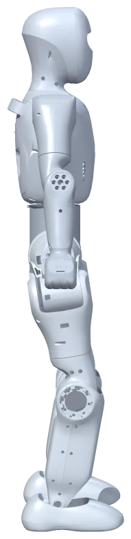
一句话介绍
学生在网页里的虚拟世界中，观察、操作和记录一台人形机器人小布米（Bumi），弄明白三件事：机器人为什么能动？它的动作由什么产生？看到一个精彩的动作，能说明它有多聪明吗？
不用买机器人，不用装软件，不要求编程基础。打开网页，就能上课。
为什么开这门课
人工智能正在从屏幕走向身体：会走路的机器人、能搬东西的机械臂、自动驾驶汽车。这类“有身体的人工智能”叫具身智能。它和聊天、画图的人工智能不同——它要面对重力、地面、平衡，要把“想做什么”变成每个关节怎么动。
孩子们会越来越多地在视频里看到机器人翻跟头、跳舞、做家务。这门课想让他们养成一个习惯：先问动作是怎么产生的，再判断它有什么能力。这是理解人工智能，也是面对科技信息时的基本素养。
学生会学到什么
完成课程后，学生能够：
| 方面 | 学生能做到 |
|---|---|
| 身体与环境 | 指出机器人的主要身体部位和关节，知道虚拟世界里也有重力和地面 |
| 人工智能的作用 | 说清小布米走路时，是一个已经训练好的模型在根据身体状态不断调整；分清“使用模型”和“训练模型” |
| 动作数据 | 知道一段舞蹈在电脑里是一串按时间排列的姿态，理解慢放、快放改变了什么 |
| 证据探究 | 先预测再动手，只改变一个条件做比较，分清“亲眼看到的”“资料说明的”和“还没有验证的” |
| 负责任的表达 | 从人的需要出发设计演示，如实说明哪些是机器人做的、哪些是人做的，尊重动作数据的来源和隐私 |
贯穿全课程的是三个问题，学生称之为观察员三问：
- 这一次动作，是由什么产生的？
- 我的依据是什么？
- 凭这些，我还不能证明什么？
一节课是什么样子
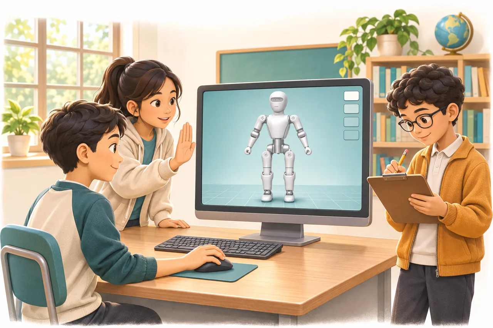
以第 4 课“谁在判断何时停止？”为例：
- 想一想（5 分钟）：闭着眼睛走到门口，是数好步数走，还是请同学看着喊“停”更准？
- 进世界（5 分钟）：打开网页，加载小布米，选好一个“停止标记”。
- 做任务（20 分钟）：先按约定秒数让它停，再由观察员看着喊停，各做几轮，如实记录停在标记前、正好还是超过。
- 说清楚（6 分钟）：画出“人看 → 人判断 → 人点按钮 → 小布米动”的流程，发现今天做判断的是人，不是机器人。
- 三问出口（4 分钟）：小布米停下是由什么产生的？依据是什么？还不能证明它会什么？
每课都有这样的“预测—操作—记录—解释”过程，学生 2–3 人一组，轮流担任操作员、观察员和记录员。
课程结构：8 个单元、16 课时
| 单元 | 课次 | 核心问题 | 学生作品 |
|---|---|---|---|
| 一 身体与虚拟世界 | 1–2 | 机器人有什么身体？换个角度、换个颜色，它的本领变了吗？ | 身体标注图、“变了/没变”观察卡 |
| 二 指令与人的判断 | 3–4 | 一句任务怎样拆成步骤？谁在判断何时停止？ | 指令流程卡、人的判断流程图 |
| 三 已有模型与行走 | 5–6 | 走路为什么要不断调整身体？使用模型等于训练模型吗？ | 控制闭环图、训练与使用对照卡 |
| 四 动作数据 | 7–8 | 一段动作怎样变成数据？慢放快放改变了什么？ | 姿态序列卡、速度测量表 |
| 五 执行方式与状态 | 9–10 | 它在走路，还是在播放一段动作？暂停、停止、归位有何不同？ | 两种方式比较卡、状态地图 |
| 六 像研究者一样验证 | 11–12 | 怎样做公平的实验？一段视频能证明全部能力吗？ | 实验记录、能力证据表 |
| 七 从人的需要出发 | 13–14 | 机器人可以帮助谁？动作数据从哪里来？ | 需求与功能对应表、来源卡 |
| 八 作品与分享 | 15–16 | 怎样设计一场可信的演示？ | 演示脚本、能力说明卡、体验展 |
前四个单元打基础，第五、六单元学会用证据判断，最后两个单元把所学用到“为别人做一场诚实的演示”上。
适合哪些学生
每课 35–45 分钟，按 40 分钟设计。核心材料以小学 5–6 年级为基线，其他学段由教师按教案调整：
| 学段 | 建议课时 | 学习方式 |
|---|---|---|
| 小学 1–2 年级 | 8 课时（第 1、2、3、7、8、9、13、16 课） | 教师演示为主，学生指图、贴卡、口述 |
| 小学 3–4 年级 | 12 课时 | 词卡、填空、小组共同记录 |
| 小学 5–6 年级 | 16 课时全部 | 使用完整学习单，开展重复观察和简单数据整理 |
| 初中 | 16 课时 | 增加数据分析、控制变量与误差讨论 |
| 高中 | 16 课时，可另加 4 课时拓展 | 增加资料核对、模型假设、仿真与真实差异，形成研究报告 |
可作为学校人工智能校本课程中的具身智能单元，也适合信息科技与科学融合课程、综合实践活动和科技社团。语音识别、图像识别、生成式人工智能等内容可由学校其他单元补充。
学生怎样被评价
评价看的是理解和证据，不是动作炫不炫、电脑快不快：
| 维度 | 看什么 |
|---|---|
| 概念辨析 | 能否说清这次动作由什么产生，分清行走、回放和训练 |
| 操作与观察 | 能否按步骤操作、规范记录、重复比较 |
| 证据与表达 | 结论是否对得上记录，是否说明局限 |
| 合作与责任 | 分工是否清楚，是否说明来源、如实展示 |
每个维度分 4 级。低年级可用口述、绘画代替书写；学期末的体验展作品要体现每位学生的贡献。
开课需要什么
| 项目 | 要求 |
|---|---|
| 设备 | 能上网的电脑和浏览器；建议 2–3 名学生共用一台，或教师一台电脑投影 |
| 软件 | 不需要安装。点击课程链接即可进入小布米网页世界 |
| 账号 | 不要求每位学生单独注册 |
| 机器人硬件 | 不需要。全部课程在虚拟世界中完成 |
| 教师 | 不要求编程背景。每课备课时按教案在网页上预演一遍（约 5–10 分钟） |
| 学具 | 打印学习单；部分课次需要纸卡、秒表（可用手机计时） |
网页加载需要一定时间，课堂上要预留。网页暂时打不开时，每课教案都提供了不依赖网页的备用活动。
安全、数据与版权
- 不采集学生个人信息。课程不需要拍摄学生照片、视频或录音。
- 不控制真实机器人。所有操作只发生在虚拟世界中，没有真机安全风险。
- 说明数据来源。小布米的舞蹈、跳跃等动作来自公开的真人动作捕捉数据（LAFAN1），由研究者换算到 Bumi 身上。课程专门安排一课教学生说明来源、尊重他人劳动。这些数据标注为非商业使用；用于收费课程、公开传播或再分发前，需由学校课程负责人确认授权。
- 不夸大机器人能力。课程反复引导学生区分“看到的画面”和“机器人真正具备的能力”。
这门课有什么，没有什么
课程中使用的现有功能：
- 一台精细的虚拟人形机器人，有 21 个可动关节
- 用已经训练好的人工智能模型，按指令前进、后退、转向
- 回放舞蹈、跳跃、倒地与起身、格斗四段真人动作数据，可调 0.25–2 倍速度
- 切换视角、调整显示大小和配色
课程不包含、也不要求：
- 学生自己训练人工智能模型或写代码
- 让机器人看见、听懂、自己找路或避开障碍
- 控制真实机器人
- 导入新的动作或拖动编辑动作
这些是真实存在的限制。课程正是借助它们，让学生学会诚实地描述一项技术：它能做什么，靠什么做到，还不能做什么。
课程材料
| 材料 | 给谁 | 内容 |
|---|---|---|
| 本介绍 | 学校管理者、课程负责人、家长、合作方 | 课程是什么、为什么上、需要什么 |
| 课程总览与使用说明 | 课程负责人、授课教师 | 16 课目录、网页面板速查、课堂组织、评价量规、配图说明 |
| 16 份学生学习单 | 学生 | 每课的问题、必要讲解、操作步骤、任务与记录区、自我检查 |
| 16 份教师教案 | 授课教师 | 目标与证据、课前预演、40 分钟流程、讲解提示、参考回答、常见误解、学段调整 |
| 教学配图 | 师生共用 | 小布米原型图、教学图解与情境插画，每张标明来源和用途 |
课堂入口：打开小布米单例世界。正式授课前由学校与研发方确认可用的地址。
当前进度
- 已完成：16 课时核心课程的学生学习单与教师教案初稿、课程总览和配套教学图。
- 尚未完成：逐课网页预演、教师验收和真实课堂试教。课程尚未经过课堂检验，教学效果有待试教后评估。
- 下一步：建议先在一个 5–6 年级班试教第 1–2 课，根据学生反馈和实际用时逐单元修订。
设计参考
课程的学段分层与实践导向参考了以下资料。这些是设计依据，不表示本课程已获得相关机构认证：
- 《中小学人工智能通识教育指南（2025年版）》，教育部基础教育教学指导委员会，中国教育学会发布
- 教育部关于加强中小学人工智能教育的部署（2024-12-02）
- UNESCO 学生人工智能能力框架（2024）
课次与学习目标依据课程大纲 V1.2。
和小布米一起理解具身智能
K12 人工智能通识课程大纲
编写日期：2026-11-09。适用平台：Web 平台中的 Bumi 单实例虚拟机器人世界。版本：课程设计稿 V1.2，已配套 16 课核心课程的师生初稿，依据现有功能编排，尚未经课堂试教。
课堂统一使用既有 Bumi 单例世界：打开小布米虚拟仿真。网址已指定项目 5316902；点击后等待世界加载，若页面出现提示，按页面提示处理。教师课前打开网页预演本课步骤即可。学生可通过教师投影或小组共用浏览器参与，不要求安装软件或每人独立账号。
本课程让学生通过操作、观察、记录和解释小布米的行为，理解人工智能怎样与身体、数据和环境发生联系。基础学习使用现成行走策略与已有动作数据，不要求学生自行训练模型、购买真机或配置训练显卡。
逐课学生学习单与教师教案见课程总览中的 16 课目录。材料齐备表示写作初稿完成，不代表已在当前课堂入口逐课验收或完成课堂试教。
一、课程定位
课程主问题：一个机器人为什么能够行动？看到它做出动作，就能判断它拥有怎样的智能吗？
课程从“身体怎样运动”出发，逐步走向“状态怎样进入控制系统”“动作怎样用数据表示”“如何用证据判断能力”，以具身智能为主题连接人工智能通识中的数据、模型、应用、工程思维和社会责任。
适用于学校人工智能校本课程、信息科技与科学融合课程、综合实践活动及科技社团。它可作为学校人工智能通识课程中的具身智能主题单元；语音识别、计算机视觉和生成式人工智能等内容可由其他单元补充。
学段设计参考《中小学人工智能通识教育指南（2025年版）》的分层思路，按年龄逐步提高理解、应用与设计要求。下文的课时、活动和评价为本课程设计建议，学校可结合地方课程要求调整。指南原文，中国教育学会发布
课程同时参考 UNESCO 学生人工智能能力框架，把人的需要、伦理判断、技术理解和系统设计贯穿实践。UNESCO 学生人工智能能力框架
二、学习目标
完成相应学段的课程后，学生能够：
- 认识身体与环境：指出机器人主要身体部位，描述关节、姿态、运动和虚拟环境之间的关系。
- 理解人工智能的作用：知道当前行走使用已有模型，能初步解释状态、指令、策略和动作的联系；区分使用模型与训练模型。
- 认识动作数据：用图画、姿态卡或简单数据表说明动作由随时间变化的姿态组成，理解回放速度与时间的关系。
- 开展证据探究：先提出预测，再操作、记录、比较和解释；区分直接观察、资料说明与尚未验证的推测。
- 负责任地设计与表达：从人的需要提出应用设想，如实说明能力和限制，尊重数据来源、隐私和他人劳动。
贯穿各学段的出口问题是：“这一次动作由什么产生？你的判断依据是什么？你还不能据此证明什么？”
三、现有功能怎样支持课程
3.1 功能与教学用途
| 现有功能 | 可以开展的学习活动 | 教学边界 |
|---|---|---|
| 精细三维身体模型，21 个可动关节 | 找身体部位、比较姿态、认识自由度与身体结构 | 当前面板没有逐关节拖动滑杆；看模型不能直接读出全部关节数值 |
| 站立、前进、后退、左右转向 | 指令与结果、人工操作顺序、已有行走策略与反馈控制 | 使用预训练 ONNX 策略；按钮操作不会重新训练模型 |
| 舞蹈、跳跃、倒地与起身、格斗四个动作片段 | 动作观察、数据来源、人体到机器人动作映射、不同执行方式比较 | 四个片段是运动学轨迹回放，没有对应的实时平衡控制器 |
| 选片、播放、暂停、继续、停止归位 | 状态变化、操作流程、观察重复性 | 没有任意拖动时间轴、跳帧或任意新动作导入的学生入口 |
| 0.25、0.5、1、1.5、2 倍回放速度 | 单变量实验、比例、时间测量与误差讨论 | 改变的是轨迹播放时间；不是给行走策略加速训练，也不是物理时间倍率 |
| 0.1–10 倍显示缩放、部位配色 | 观察视角、表达设计意图、区分外观与行为 | 显示缩放不改变物理模型的质量、关节或控制策略，不能用于研究“大机器人是否更难站稳”；换装已移除 |
| 主角/机器人视角、加载/卸载、重置与暂停 | 从不同角度观察、规范实验准备、系统状态与资源管理 | 每个客户端是单例机器人；不安排多机器人协同或对抗实验 |
缩放应用会重建实例并重置仿真，回放活动期间不能应用缩放。课堂先停止回放，再调整显示比例。配色属于表现设计，不能作为智能水平提高的证据。功能依据见资产说明与动作回放技术总结。
3.2 把两条执行路径讲清楚
行走仿真可以用来理解一个受限的具身控制闭环：系统读取仿真中的身体状态，结合人的运动指令，由已有策略产生动作，再通过关节控制与物理仿真得到新的身体状态。
这里的状态来自仿真系统，包括姿态、关节等信息。当前课程平台没有让 Bumi 通过摄像头理解教室、通过麦克风听懂学生，或自主识别障碍物。
动作回放则是：已有动作数据 → 按时间取样和插值 → 设置机器人姿态 → 显示动作。回放时行走物理步进和策略推理暂停；停止或播完后恢复初始站立姿态并保持暂停。播放“倒地与起身”不能证明机器人具备自主跌倒检测和恢复能力，播放舞蹈也不能证明它刚刚学会了舞蹈。
这两种方式都适合观察机器人运动，但学习算法、普通程序控制和动画数据各自承担的作用，需要分别解释。
3.3 每个单元怎样结合同一个 Web 世界
各课围绕项目 5316902 的实际界面、操作和现象展开：先明确在 Web 中看哪里或操作什么，再记录现象、解释概念。纸卡、图示、教师资料和讨论服务于同一世界的观察；概念课也要对照此前的操作记录，不另换通用机器人视频替代。图片只作为遮挡补充或设备故障时的备用，使用备用时明确记录没有完成本次 Web 实操。
| 单元与课次 | 同一 Web 单例世界中的观察或操作 | 学生记录与成果 |
|---|---|---|
| 一：身体与虚拟世界，1–2 课 | 第 1 课加载、暂停并切到“机器人视角”，观察身体；第 2 课再比较“主角视角”、显示比例与配色 | 身体标注图、关节区域说明和外观观察卡 |
| 二：指令与人的判断，3–4 课 | 在“仿真控制”中按人工步骤恢复仿真、前进、归零站立和左右转向；由观察员决定何时发出停止信号 | 指令流程卡，记录人的指令、点击和实际结果 |
| 三：已有模型与行走，5–6 课 | 观察同一机器人站立、移动和转向的表现，对照教师准备的状态、策略与身体资料；依据本次操作讨论使用模型与训练模型 | 控制闭环卡、训练与使用对照卡；注明不能仅凭画面看到内部推理 |
| 四：动作数据，7–8 课 | 在“动作回放”选择舞蹈，播放、暂停并观察姿态；对同一片段比较 0.5×、1×、2× | 姿态序列、快慢观察表或倍率实验记录 |
| 五：执行方式与状态，9–10 课 | 对照同一世界的行走与轨迹回放，执行“暂停回放”“继续回放”“停止回放并归位”，再回到仿真控制恢复 | 两种执行路径比较卡、状态转换图与归位说明 |
| 六：证据探究，11–12 课 | 固定同一回放片段、起点和设备重复倍率测量；用实际画面与技术说明核对跳跃、起身等能力说法 | 单变量实验记录、能力证据表与未证明事项 |
| 七：人的需要与来源，13–14 课 | 围绕同一世界已有行走和舞蹈设计应用演示，标注人工步骤；使用教师准备的该片段来源资料核对署名和使用范围 | 需求与功能对应表、来源卡和展示说明 |
| 八：作品与分享，15–16 课 | 在同一世界编排并复现“行走展示—归零/暂停—轨迹回放—停止归位”的短演示 | 演示脚本、操作记录、能力说明、自评与反思 |
表中资料核对、记录和评价由师生使用课程材料完成，不表示 Web 面板新增了模型内部查看、数据导出或自动批改功能。
四、K12 学段路径与课时
以第五节的 16 课时为共同课程库，每课时约 35–45 分钟。各学段独立选用、逐步加深，不要求从一年级开始连续重复同一套操作。课次编号对应第五节。
| 学段 | 建议课时与选课 | 学习重点 | 学段结束时的可观察表现 |
|---|---|---|---|
| 小学 1–2 年级 | 8 课时：1、2、3、7、8、9、13、16 | 身体、指令、动作观察与安全习惯；以口述、绘画和教师演示为主 | 能指出主要部位，描述“我做了什么、它发生什么变化”，知道屏幕中是虚拟机器人，知道回放使用已有动作 |
| 小学 3–4 年级 | 12 课时：1、2、3、4、5、7、8、9、10、13、15、16 | 顺序与状态、重复观察、慢放与快放、基本反馈概念 | 能按纸卡步骤操作并记录；能区分外观变化、人的指令、已有策略和录制动作 |
| 小学 5–6 年级 | 16 课时：完整课程库 | 动作数据、已有模型、单变量实验与可信表达 | 能完成三次重复观察，整理数据表，说明行走与回放的区别及一项证据局限 |
| 初中 7–9 年级 | 16 课时：完整课程库，增加数据与系统分析 | 身体状态、策略、物理反馈、采样与插值、系统验证 | 能画控制闭环，分析教师提供的姿态样例，提出有控制变量的验证方案 |
| 高中 10–12 年级 | 16 课时：完整课程库，采用研究任务；可另加 4 课时拓展 | 轨迹与策略的比较、训练与推理、模型假设、仿真到真实的差异、技术责任 | 能提交带证据和来源的研究报告，说明系统模块、实验证据和尚未验证的能力 |
低年级不要求阅读 JSON、计算弧度或学习神经网络公式。初高中也可以无代码完成基础课程，数据分析和脚本阅读作为提高任务。
五、16 课时核心大纲
单元一：认识小布米与虚拟身体（第 1–2 课）
| 课次 | 主题与核心问题 | 主要活动 | 学习成果 |
|---|---|---|---|
| 1 | 认识小布米：机器人有什么身体？ | 观察精细模型，寻找头、躯干、手臂、腿与关节；比较人的关节和机器人关节 | 一张身体标注图；口述一个相同点和一个不同点 |
| 2 | 走进虚拟世界：换个角度会看到什么？ | 切换视角；在停止状态比较显示大小和配色；认识仿真中的身体与地面 | 一张观察卡，写清外观、视角与实际运动能力的区别 |
单元二：指令、步骤与人的判断（第 3–4 课）
| 课次 | 主题与核心问题 | 主要活动 | 学习成果 |
|---|---|---|---|
| 3 | 让它行动：一句任务怎样拆成步骤？ | 小组用纸卡排列“加载、恢复行走、前进、停止、转向、停止”；操作员依次点击现有面板 | 一份人工执行的指令流程卡，比较预测与实际结果 |
| 4 | 谁在判断何时停止？ | 观察员发出开始/停止信号，操作员据此控制；对比预先约定的操作顺序 | 画出“人观察—人判断—人操作”的流程，指出目前停止决定由人作出 |
这里的流程卡由学生人工执行；不将纸卡活动描述为已经运行了自主导航程序或专用积木程序。
单元三：已有模型怎样参与行走（第 5–6 课）
| 课次 | 主题与核心问题 | 主要活动 | 学习成果 |
|---|---|---|---|
| 5 | 走路时为什么要不断调整身体？ | 观察站立、前后移动和转向；教师用状态、策略、身体、地面四类卡片解释反馈关系 | 低年级排卡，高年级画简化控制闭环；区分人的方向指令与关节控制 |
| 6 | 会使用模型，就等于训练模型吗？ | 用“准备学习材料、调整模型、使用模型完成任务”的故事理解训练与推理；辨析当前课堂实际做了哪一步 | 一张“训练与使用”对照卡，准确表述本课使用已有行走模型 |
单元四：动作怎样成为数据（第 7–8 课）
| 课次 | 主题与核心问题 | 主要活动 | 学习成果 |
|---|---|---|---|
| 7 | 从一个姿态到一段动作 | 用学生自画的 3–5 张姿态卡做翻页动画；观看舞蹈片段并暂停观察；高学段阅读教师准备的帧数据摘录 | 姿态序列或简化数据表，解释顺序和时间为什么重要 |
| 8 | 慢放和快放改变了什么？ | 对同一片段比较 0.5×、1×、2×；低年级排序快慢，高年级预测并记录固定现实时间内的回放时间增量 | 快慢观察表或三组重复实验记录；区分数据帧率、回放倍率与屏幕流畅度 |
当前轨迹为每秒 30 帧姿态数据，不代表任何电脑都固定每秒显示 30 帧。活动不要求学生录制、上传自己或同学的身体视频。
单元五：看懂演示，管理状态（第 9–10 课）
| 课次 | 主题与核心问题 | 主要活动 | 学习成果 |
|---|---|---|---|
| 9 | 它正在走路，还是播放一段动作？ | 对照行走与回放；观看选定片段的短段；讨论跳跃、起身的画面能证明什么 | “行走仿真/动作回放”比较卡，给出输入、执行方式与能力边界 |
| 10 | 暂停、停止、归位有什么不同？ | 执行“播放—暂停—继续—停止归位—回到仿真页恢复”；认识加载、卸载与重置 | 状态转换图或操作说明，解释为什么不能直接从展示末姿态继续物理仿真 |
小学低年级以舞蹈为主要素材。其他片段由教师按年龄选用；格斗片段仅用于较高学段的动作分析，不组织伤害性模仿或对抗活动。
单元六：像研究者一样验证（第 11–12 课）
| 课次 | 主题与核心问题 | 主要活动 | 学习成果 |
|---|---|---|---|
| 11 | 一次只改变一个条件 | 以回放倍率为变量，固定片段、起点、观察时段和设备，重复测量；讨论点击延迟与读数误差 | 一页实验记录：问题、预测、变量、过程、结果 |
| 12 | 一段视频能说明全部能力吗？ | 给“会跳跃”“能自主避障”“只是换了颜色”等说法分类；把观察结果与技术资料相互核对 | 一份能力证据表，分别写“直接观察到”“资料说明”“尚未验证” |
单元七：从人的需要出发（第 13–14 课）
| 课次 | 主题与核心问题 | 主要活动 | 学习成果 |
|---|---|---|---|
| 13 | 机器人可以帮助谁？ | 围绕校园科技展、运动知识讲解等场景找需求；用已有行走与回放设计演示；标注仍由人完成的步骤 | 一张需求与功能对应表；低年级画场景图并口述 |
| 14 | 动作数据从哪里来，展示时怎样说明？ | 了解人体动作采集与机器人动作重定向的故事；检查来源、署名、隐私与演示说明 | 一张来源卡与展示说明，能区分已有素材、个人设计和未来设想 |
单元八：完成作品与分享（第 15–16 课）
| 课次 | 主题与核心问题 | 主要活动 | 学习成果 |
|---|---|---|---|
| 15 | 设计一场可信的小布米演示 | 分工编排 2–3 分钟讲解，试运行“行走展示—停止/暂停—轨迹回放—停止归位”；按同伴反馈修改 | 演示脚本、操作流程、观察记录与能力说明 |
| 16 | 小布米具身智能体验展 | 展示作品，解释动作由什么产生；回答同伴提问，完成自评与互评 | 一个可复现的小组作品、一张能力说明卡和一次反思 |
“创作”可以体现为问题设计、证据组织、讲解和演示编排；无需把新增模型训练或新动作导入作为作品完成条件。
六、各学段的结课项目
| 学段 | 项目建议 | 作品形式 | 最低完成要求 |
|---|---|---|---|
| 1–2 年级 | 小布米身体与动作小导览 | 图画、口述、教师协助下的短演示 | 说出三个身体部位，描述一项操作与结果，知道回放是已有动作 |
| 3–4 年级 | 小布米动作观察员 | 快慢观察表、流程卡、短讲解 | 完成播放/暂停/继续/停止，说明配色与智能能力无直接等同关系 |
| 5–6 年级 | 小布米动作实验室 | 倍率实验记录与两种动作方式比较海报 | 完成重复观察，列出至少一项控制变量和一项证据局限 |
| 7–9 年级 | 机器人动作演示评测员 | 控制系统图、数据表、评测报告 | 分清状态、策略、物理模型和轨迹，引用证据评价一项能力说法 |
| 10–12 年级 | 可信的具身智能展示方案 | 研究报告、验证方案、公众讲解作品 | 提出问题与可检验假设，说明模型假设、仿真与真实差异、来源和适用范围 |
应用设想可超出现有功能，但作品中应明确标记“当前已演示”“由人工完成”“未来需要新增”。例如，学生可以设想校园导览机器人，当前演示仍由人控制移动，不将其写成已实现自动识路与避障。
七、两项可直接备课的探究活动
活动 A：同一段舞蹈，为什么播放时间不同？
适用：小学 3 年级起；完整数据实验适合 5 年级以上。建议 1 课时，以 40 分钟为例。
| 环节 | 时间 | 教学安排 |
|---|---|---|
| 提问与预测 | 5 分钟 | 同一片段分别用 0.5×、1×、2×播放，经过同样长的现实时间，片段中的时间会怎样变化？ |
| 认识操作 | 5 分钟 | 教师示范从头播放、暂停读数、停止归位；确认没有把行走速度当成回放倍率 |
| 小组实验 | 15 分钟 | 每个倍率从头播放，约 5 秒后暂停，读取回放时间；高年级每组重复三次 |
| 比较与解释 | 10 分钟 | 整理数据并比较趋势；讨论人工点击、界面刷新和秒表读数误差 |
| 出口任务 | 5 分钟 | 写出一个有依据的结论，以及一个本实验不能回答的问题 |
预测关系为“回放时间增量约等于现实经过时间乘倍率”，不要求人工实验精确相等。记录实际按下暂停所用的现实时间，不把“约 5 秒”当成无误差的常量。
| 倍率 | 实际观察时长（秒） | 暂停时片段时间（秒） | 与预测接近吗？ | 可能的误差来源 |
|---|---|---|---|---|
| 0.5× | ||||
| 1× | ||||
| 2× |
低年级只比较快慢与姿态变化，不要求计算比例。该实验不能证明机器人在真实地面上能以两倍速度安全跳跃。
活动 B：给一场机器人演示写“能力说明书”
适用：小学 5 年级至高中。建议 1 课时，以 40 分钟为例。
- 观看与提出说法，5 分钟：观看行走及“倒地与起身”短段，写下自己认为机器人具备的能力。
- 对照执行方式，10 分钟：教师提供行走闭环图与回放流程，学生重新判断自己的说法。
- 整理证据，15 分钟：使用下表，将观察、资料和推测分开；高学段补充需要怎样的测试才能支持更强的结论。
- 公众表达，10 分钟：每组用一分钟解释一个容易误解的画面，并提出改写后的展示说明。
| 说法 | 现有证据 | 可以作出的结论 | 仍需要的证据 |
|---|---|---|---|
| 看到了起身动作 | 播放了“倒地与起身”轨迹 | 能展示已有起身姿态序列 | 自主检测跌倒、受力响应和稳定恢复的控制与测试 |
| 行走使用已有模型 | 运行表现及行走架构说明 | 当前系统可用已有策略进行行走仿真 | 不能据此声称学生训练了新模型或已在真机上成功 |
| 换色后表现更聪明 | 外观颜色发生变化 | 可以改变外观表达 | 没有证据支持颜色提升决策或运动能力 |
课程鼓励学生修正判断；评价依据是解释是否准确和证据是否充分，而非最初猜测是否正确。
八、学习评价
采用过程记录、小组作品、口述/答辩与自评互评。每个维度按 1–4 级记录，四个维度合计最高 16 分；低年级可使用图标和口头反馈。作品应体现每位学生的贡献。
| 评价维度 | 1：需要支持 | 2：基本达到 | 3：能够独立完成 | 4：能够解释与迁移 |
|---|---|---|---|---|
| 概念与能力辨析 | 混淆回放、控制与训练 | 提示下能区分 | 能准确说明本次动作的产生方式 | 能分析新的演示说法及其证据边界 |
| 操作与观察 | 需要逐步协助 | 能按流程操作并描述结果 | 能规范记录、复现与比较 | 能发现影响比较的条件并改进流程 |
| 证据与表达 | 主要凭印象判断 | 有简单观察记录 | 结论对应记录，说明局限 | 能处理不一致结果并提出下一步验证 |
| 合作与责任 | 分工、来源说明不完整 | 能遵守规则并参与 | 分工清楚、尊重来源、如实展示 | 主动改进可访问性、隐私保护和公众说明 |
不以电脑性能、编程经验、机器人动作是否“炫酷”或是否训练出新模型作为通识课评分依据。高学段提高证据要求，低学段允许绘画和口述替代长篇报告。
九、教学实施与教师准备
9.1 课堂组织
- 建议每 2–3 人共用一台电脑，轮换操作员、观察记录员和讲解员；每个课堂浏览器页面只使用一个 Bumi 实例，进入同一个既有单例世界。
- 单机投影条件下，保留纸卡、预测、观察和讨论活动；不将每名学生必须独立登录在线账号作为课程前提。
- 师生直接点击小布米虚拟仿真网址，等待世界加载。页面若出现提示，按提示处理；无需运行启动命令或手动输入项目号。
- 按本课能力完成一次 Web 预演：第 1 课检查“进入世界—加载—暂停—机器人视角—身体观察”；行走与回放课再分别检查相应操作、停止归位和必要的退出重进。断网是否可用取决于实际资源准备，课前确认，不临时假定。
- 课前确认看到了小布米、控制面板及本课所需按钮。若网页无法加载或按钮表现异常，记录页面提示并反馈给研发人员；教师不需要排查软件安装或启动配置。
- 预留加载时间。用标签、箭头和文字辅助配色，避免只靠颜色区分任务；允许学生用口述、绘图等方式提交成果。
9.2 应准备的材料
| 材料 | 准备方式 |
|---|---|
| Bumi 世界、模型、已有行走策略、四段轨迹及控制面板 | 使用同一 Web 单例世界中已经准备并课前验证的资源，按本课所需能力选择 |
| 身体标注图、操作流程卡、状态卡 | 教师按本大纲制作纸质或电子学具 |
| 倍率实验记录表、秒表、能力说明卡 | 使用第七节表格改编，不需要新增软件功能 |
| 控制闭环图、简化帧数据/关节角样例 | 教师从已核对资料准备；以小样例教学，不让低年级直接处理大文件 |
| 学习评价表、个人贡献与反思记录 | 按第八节制作 |
| 来源、署名及使用范围说明 | 使用前核对现有资源的完整来源与授权 |
上述教学卡片、学生数据观察界面和讲义属于备课材料，并不表示软件内已附带自动生成、数据导出或学生作业管理功能。
9.3 数据与展示责任
课堂使用已有公开动作数据或自画姿态卡，不要求采集学生人脸、声音、身体视频或其他个人信息。对外展示如需使用学生影像，按学校相应流程处理。
动作数据需保留来源和署名。当前重定向数据卡标注 CC BY-NC 4.0，原始 LAFAN1 许可标注 CC BY-NC-ND 4.0；两层声明应分别核对，不用下游数据卡替代原始来源授权。涉及收费课程、公开传播或再分发时，应先确认对应用途的完整授权；教学名称本身不构成用途已经获准的证明。重定向数据固定版本说明、LAFAN1 官方许可
十、高中可选拓展（另计 4 课时）
| 课次 | 研究主题 | 可实施任务 | 产出 |
|---|---|---|---|
| 拓展 1 | 动作的数值表示 | 阅读教师提供的根位置与单个关节角小样例，认识时间、单位、坐标与列名 | 数据字典与样例解释 |
| 拓展 2 | 采样与插值 | 对自编的两个关节角样例手算中间值，比较“只显示已有帧”和“补出中间姿态”的含义 | 插值图与局限说明；不要求写入机器人 |
| 拓展 3 | 策略、轨迹与物理模型 | 比较各自的输入、输出、用途和失效条件，讨论训练、推理及模型更新 | 一页系统分析报告 |
| 拓展 4 | 从仿真走向真实需要什么？ | 围绕执行器、传感器误差、接触、延迟和人的安全提出验证计划 | 真机迁移研究提案；不执行真机控制 |
拓展可选用电子表格或教师准备的短脚本分析小样例，不依赖新的 Bumi 编程界面，也不将仿真回放结果直接用于真机。
十一、首轮试教与后续课程开发
首轮可优先在 5–6 年级试教完整 16 课时，或在 3–4 年级试教 12 课时路径，再根据实际观察调整。重点记录学生能否区分行走与回放、是否理解人的作用、每项活动的真实耗时、设备加载情况和合作参与情况。
核心 16 课已配套学生学习单、教师教案与必要教学图。后续优先进行逐课网页预演和真实试教，根据反馈补充评价样例及已核实的备用演示材料；高中可选拓展仍为独立选修规划。新功能课程单独规划：当前大纲不以语音对话、视觉识别、自主导航避障、抓取、多机器人协作、任意动作编辑、在线训练或真机控制为必备任务。
十二、参考资料与功能依据
以下本地资料用于核对当前功能；教育参考用于课程设计，不表示本课程已获官方认证或完成课堂效果验证。
- Bumi 资源与现有能力说明。
- Bumi 动作回放技术总结。
- 行走运行合同。
- 回放运行合同与动作目录。
- 《中小学人工智能通识教育指南（2025年版）》，来源：教育部基础教育教学指导委员会，中国教育学会发布。
- 教育部部署加强中小学人工智能教育，2024-12-02，学段递进与任务实践参考。
- UNESCO：AI competency framework for students，2024 年版，学生人工智能素养参考。
外部资料查阅日期：2026-11-09。正式备课时结合学校所在地区的课程要求、实际软件版本与资源授权复核。
认识小布米：机器人有什么身体？
单元一 身体与虚拟世界 · 基线：小学 5–6 年级，40 分钟 · 学生学习单 · 课堂入口：小布米单例世界
本课一览
| 项目 | 内容 |
|---|---|
| 核心问题 | 小布米的身体由哪些部分组成？和人有什么异同？ |
| 学生成果 | 身体标注图（任务 A、B）、一同一异（任务 C）、一个外形回答不了的问题（任务 D） |
| 关键词 | 身体部位、关节、观察与资料 |
| 本课操作 | 进入世界、加载、暂停、机器人视角。不做行走、回放、缩放和配色 |
| 准备 | 学习单（建议彩打或投影身体图）、核对图 body-labeled.svg 先不发 |
学习目标与证据
| 学生能够 | 对应任务 | 看什么 |
|---|---|---|
| 在网页模型中指认头部、躯干、手臂、腿、脚 | A | 五个标签填对，至少能在网页上指出三个 |
| 指出一处关节区域并说出它连接的两段身体 | B | 区域位置大致正确，连接的两段说对 |
| 说出人与小布米的一个相同点和一个不同点，并说明依据来源 | C | 有依据，能区分“看到的”和“资料说的” |
| 知道外形不能直接证明能力 | D | 能提出一个需要测试或资料才能回答的问题 |
课前预演（约 5 分钟）
- 打开链接，等待世界加载，右侧出现“小布米 Bumi 仿真控制”面板，默认在“仿真控制”分栏。
- 点“加载小布米机器人”。屏幕上方依次提示正在预加载模型、初始化物理模型、初始化行走策略，最后提示“小布米机器人加载完成”。记下加载用时，课上据此留时间。
- 状态先显示“等待策略推理”，随后为“站立中”。点“暂停仿真”，状态为“已暂停”。
- 点“机器人视角”，确认镜头对准小布米；试试鼠标拖动、滚轮能否换角度，看清侧面和背面。
- 不关闭面板。课后保持暂停即可。
界面可对照这张此前的 Web 测试截图（当前布局以实际网页为准）：
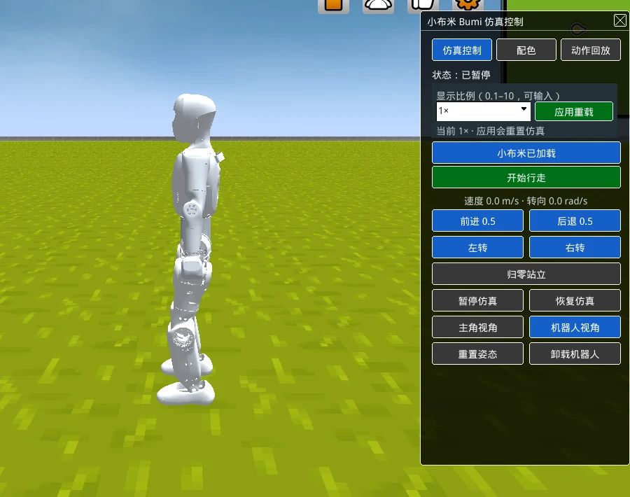
配图怎样用
- 开篇观察伙伴插画：请学生提出一个想观察的问题，说明这是依据原型美化的教学插画。身体任务仍对照网页与原模型图，不能用美化细节判断关节或传感器。
- 任务 B 用连接处比较图：先指门板与门框，再指上臂与前臂，问“相同的是哪种连接关系，哪些不能直接类比？”
- 任务 C 用身体比较图：让学生分别说出观察、资料与未知问题，不预先发完整标签答案。
以上看图提问融入原有任务时段，不另加课堂环节。
课堂流程（40 分钟）
| 时间 | 环节 | 教师做什么 | 学生做什么 |
|---|---|---|---|
| 0–5 | 想一想 | 请学生拿笔，问“哪里弯了”；追问“如果胳膊是直木棍” | 动手体验，写下想法 |
| 5–12 | 进世界 | 投影示范步骤 1–5；强调今天不点行走按钮；介绍三个角色 | 跟做，记录状态 |
| 12–20 | 任务 A | 巡视，提醒先在网页里指，再填图 | 指认、填图、交换检查 |
| 20–28 | 任务 B | 讲“关节”与合页比喻及其局限；请学生在自己身上找对应位置 | 找关节、填表、圈图 |
| 28–34 | 任务 C、D | 组织两两说一同一异；用“像眼睛”的例子引出任务 D | 填表、勾依据、写问题 |
| 34–40 | 分享与三问 | 出示核对图；请 2–3 组分享；带全班回答三问 | 修改一次、自我检查 |
- 35 分钟：任务 D 改为全班口头讨论，学生只写一句话。
- 45 分钟：任务 B 增加一轮“我做动作你找关节”：学生做抬手、弯膝，同伴说出用了哪个关节区域，再到网页模型上找对应位置。
关键讲解（可以这样说）
- 进入世界时：“这是网页里的虚拟机器人，按我们的指令在电脑里计算。今天我们只看它的身体，所以先让它暂停。”
- 讲关节时：“关节把两段身体连起来，让它们能相对转动。合页只能朝一个方向转，我们的肩膀却能转好几个方向，所以合页只是帮我们想象。”
- 讲依据时：“你亲眼在网页上看到的，勾‘自己看到的’；我讲给你的数字，比如关节有多少个，勾‘老师或资料说的’。两种都有用，但要说清楚。”
参考回答
任务 A：1 头部、2 躯干、3 手臂、4 腿、5 脚（与核对图一致；图中左右为画面左右）。
任务 B：肩（躯干和上臂）、肘（上臂和前臂）、髋（躯干/腰部和大腿）、膝（大腿和小腿）、踝（小腿和脚）。学生说“腰”也可接受。
资料补充（老师掌握，按需讲）：小布米共有 21 个可动关节：腰 1 个；每条手臂 4 个（肩部 3 个方向、肘 1 个）；每条腿 6 个（髋部 3 个方向、膝 1 个、踝 2 个方向）。1 + 4×2 + 6×2 = 21。它没有能动的脖子、手腕和手指，头和躯干是固定在一起的，手是固定的形状。这些从外壳看不出来，不要求学生数。
任务 C：
- 相同：都有头、躯干、两只手臂、两条腿；都有肘、膝这样的连接处；都靠两条腿站立。
- 不同：小布米的头不能转（资料说的）；没有能动的手指（资料说的，外形上可看到手是一团固定形状）；身体是硬外壳；它的“眼睛”位置是一块面罩（看到的）。
- 依据：外形差异勾“自己看到的”；关节有无勾“老师或资料说的”。
任务 D：能不能看见/认出人、听见声音、自己决定去哪里、感觉到被碰到等。需要：查资料、看它有没有相应的设备和程序、做测试。合理即可。
三问：1. 被暂停了，没在动；2. 网页里看到的模型和身体图；3. 例如“会看东西”“会走路很稳”。
常见误解与回应
| 学生可能说 | 可以这样回应 |
|---|---|
| “外壳上每条缝都是一个关节” | 缝可能只是外壳拼接处。请找“两段身体可以相对转动”的地方，下节课看它动起来时再核对 |
| “机器人视角就是机器人眼睛看到的” | 先记下这个想法，第 2 课专门比较两个视角，再判断 |
| “它有眼睛，所以能看见我们” | 像眼睛不等于能看见。看见需要相机一类的设备和处理图像的程序，本课平台里小布米没有这样使用 |
| “头可以转” | 资料显示没有脖子关节。如果有人觉得看到头转了，请他说清楚是整个身体在转还是只有头在转 |
网页打不开时
用 body-front.png 和学习单上的图完成任务 A–C。请学生在“我的观察方式”勾“图片”，在状态处写“未观察 Web”。任务 D 照常讨论。课后记下页面提示反馈研发人员。
本课评价
| 看什么 | 达到 | 需要支持 |
|---|---|---|
| 部位指认（A） | 五个标签正确，能在网页上指出 | 需提示才能找到三个以上 |
| 关节与连接（B） | 至少一处区域和连接说对 | 能指出区域但说不出连接哪两段 |
| 依据意识（C、D） | 能区分看到的和资料说的，提出一个合理问题 | 依据栏空白或全部勾同一项 |
学段调整
- 1–2 年级：老师操作网页，学生贴词卡（配图标）到大幅身体图上，口述“我和小布米都有____”。跳过任务 D 的书写，改为举手投票。
- 3–4 年级：任务 B 只找一处关节；任务 C 用句子填空。
- 初中：补充“自由度”概念，请学生对照资料说出每条腿 6 个关节分别在哪三个区域，并讨论为什么腿比手臂需要更多关节。
- 高中：阅读教师摘录的关节名称表（如
l_knee_pitch_joint），推测命名规则（左右、部位、转动方向），讨论没有手腕关节会限制哪些任务。
课后记录
| 记录项 | 本次情况 |
|---|---|
| 网页加载实际用时 | |
| 每个环节实际用时 | |
| 学生不懂的词 | |
| 反复出现的错误 | |
| 下次要改的一处 |
今天的问题
小布米的身体由哪些部分组成？它和我的身体，哪里一样，哪里不一样？
从今天起，你是一名小布米观察员。观察员只写自己看到的，或者说清楚是从哪里知道的。
看一看 · 指一指 · 圈一圈
把发现写进观察单，
也把还不知道的问题留下来。
一、想一想：如果胳膊不能弯
把手放在桌上，拿起一支笔。哪些地方弯了、转了？
如果你的胳膊是一根直直的木棍，拿笔会变成什么样？
我的想法：
二、进入小布米世界
小布米是网页世界里的一台虚拟机器人，不是教室里的真机器人。每个网页里只有一台小布米。
| 步骤 | 点什么 | 看到什么就对了 |
|---|---|---|
| 1 | 点开上面的链接，等世界加载 | 右边出现“小布米 Bumi 仿真控制”面板 |
| 2 | 选“仿真控制”分栏，点“加载小布米机器人” | 屏幕上方提示加载完成，按钮变成“小布米已加载” |
| 3 | 看“状态：” | 显示“站立中”（可能先闪过“等待策略推理”） |
| 4 | 点“暂停仿真” | 状态变成“已暂停” |
| 5 | 点“机器人视角” | 镜头对准小布米 |
今天只观察身体，不点前进、后退、转向这些按钮。
我的观察方式：
我看到的状态是： 我第一眼注意到小布米的：
三、任务
A任务给身体贴标签
先在网页里找到这五个部位：头部、躯干、手臂、腿、脚。再把词填到下图数字旁边。
11223344551： 2： 3： 4： 5：
和同伴交换检查。我改过的一处：
B任务找一处“连接”
关节是让两段身体能相对转动的连接处。就像门的合页让门板能转——不过很多关节不只会像门一样朝一个方向转。
门的合页
门板与门框由合页连接
人的肘部
相邻部分能发生相对运动
到小布米身上找
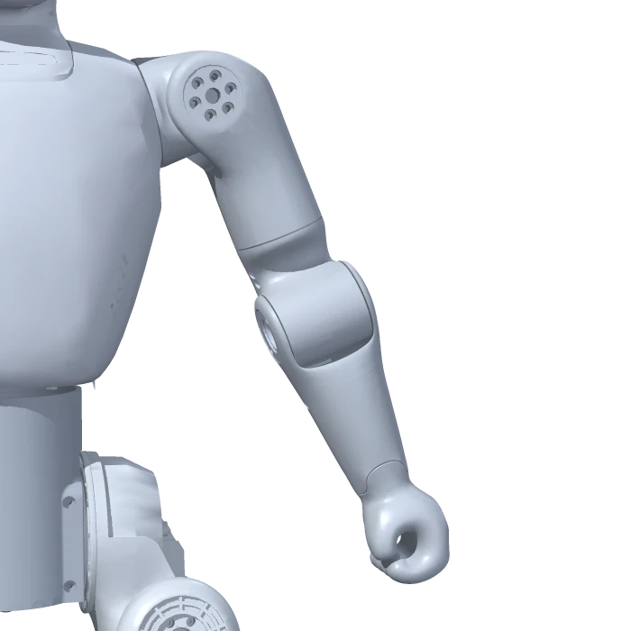
先找区域，再用资料核对
在网页里看小布米的胳膊和腿，找一处像我们肩、肘、髋（大腿根）、膝、踝的地方。
| 我找到的关节区域 | 它连着哪两段 | 我在自己身上也能找到吗？ |
|---|---|---|
| 和 | ||
| 和 |
在上面的图上圈出你找到的一处。
小提醒：外壳上的缝不一定是关节，有的关节藏在外壳里面。找大概位置就可以，不用数清楚有几个。
C任务我和小布米，一同一异
人的身体
可以观察部位，也可查人体资料网页中的小布米模型
共同部位？
指给同伴看
不同结构？
说清依据
还不知道？
提出一个问题
| 我写的 | 我是怎么知道的 | |
|---|---|---|
| 一样的地方 | 我和小布米都有 | |
| 不一样的地方 |
D任务外形能告诉我一切吗？
小布米的头上有一块像“眼睛”的地方。
“看起来像眼睛”和“能用它认出我”，是一回事吗？
只看外形，我还不知道小布米能不能。
想知道答案，我还需要。
四、观察员三问
- 今天我看到的小布米，是在动还是被暂停了？
- 我对身体部位的判断，依据是：
- 只看身体外形，我还不能证明它会
五、自我检查
| 今天我能 | 自己做到 | 有人帮忙做到 | 还想再练 |
|---|---|---|---|
| 在网页里找到五个身体部位 | |||
| 指出一处关节，说出它连着哪两段 | |||
| 说出一个相同点、一个不同点，并说出依据 | |||
| 提出一个只看外形回答不了的问题 |
可以口述，请同伴或老师帮你写。
走进虚拟世界：换个角度会看到什么？
单元一 身体与虚拟世界 · 基线：小学 5–6 年级，40 分钟 · 学生学习单 · 课堂入口：小布米单例世界
本课一览
| 项目 | 内容 |
|---|---|
| 核心问题 | 视角、大小、颜色变了，小布米的本领变了吗？ |
| 学生成果 | “变了 / 没变”观察卡（任务 D），附视角推理（A）、缩放记录（B）、配色记录（C） |
| 关键词 | 视角、显示比例、外观、虚拟世界中的地面 |
| 本课操作 | 加载、暂停、两个视角、显示比例与应用重载、配色。不做行走和回放 |
| 准备 | 学习单；课前确认缩放重载的实际等待时间 |
学习目标与证据
| 学生能够 | 对应任务 | 看什么 |
|---|---|---|
| 说出两个视角的区别，并推理“机器人视角”不是机器人的眼睛 | A | 侦探题的推理用到“能看到它自己” |
| 完成一次缩放并恢复，记录状态变化 | B | 预测与实际分栏填写，最后恢复为 1 |
| 完成一次配色并恢复默认 | C | 记录部位与颜色，确认姿势未变 |
| 区分外观变化与能力变化，并标明依据 | D | 结论句写出“外观/看的方式”与“本领/结构” |
课前预演（约 8 分钟）
- 打开链接，加载小布米，点“暂停仿真”，状态为“已暂停”。
- 交替点“主角视角”“机器人视角”，被选中的按钮显示为蓝色。观察：主角视角跟随玩家角色，机器人视角对准小布米。
- 在“显示比例”下拉中选“2×”（也可以输入 0.1–10 之间的数），点“应用重载”。小布米会重新加载并变大；记下等待时间和重载后的状态（按当前实现应为“已暂停”）。再改回 1×，应用重载。
- 切到“配色”分栏：选“配色部件”中的“左臂”，点一个色块，颜色立即改变；选“整机方案”中的“蓝白”等；点“恢复默认配色”回到原厂银灰。
- 切回“仿真控制”，保持已暂停。
配图怎样用
- 任务 A 先操作、填预测与推理，再展示镜头关注对象图。问“外部镜头现在关注谁？为什么还能看到机器人全身？”不把示意中的取景位置当成固定界面。
- 任务 D 前用三种改变图整理取景、显示比例和配色。让学生逐项指出自己的实际记录，避免只按图抄“变了/没变”。
- 显示比例图提醒应用重载会重置仿真，镜头也可能调整视距；不要求学生用屏幕高度验证严格的倍数。教师仍按原流程确认暂停和恢复设置。
以上均为教学示意图，不是网页截图，纳入原有任务时段使用。
课堂流程（40 分钟）
| 时间 | 环节 | 教师做什么 | 学生做什么 |
|---|---|---|---|
| 0–4 | 想一想 | 讲“四张照片”的情境，请学生举手判断 | 勾选并写理由 |
| 4–8 | 进世界 | 投影示范加载与暂停；强调整节课保持暂停 | 跟做 |
| 8–17 | 任务 A | 请小组切换视角；抛出侦探题，给 1 分钟思考后讨论；顺带问“它为什么没掉下去” | 填表、写推理 |
| 17–25 | 任务 B | 先请学生写预测，再操作；提醒等待重载、最后改回 1 | 预测、操作、记录 |
| 25–31 | 任务 C | 示范一次部位配色，学生自由尝试后恢复默认 | 换色、记录、恢复 |
| 31–37 | 任务 D | 带领逐行填观察卡；讲解缩放的资料说明 | 填卡、写结论 |
| 37–40 | 三问与自检 | 请两位学生说结论 | 回答三问、自我检查 |
- 35 分钟：任务 B 由教师投影演示一次，学生只记录；任务 C 每组只换一个部位。
- 45 分钟：任务 A 增加“找一个参照物”：在主角视角下，找一个场景中的物体，比较它在两个视角中的大小和位置。
关键讲解（可以这样说）
- 视角：“机器人视角，是一台一直对着小布米的摄像机。我们能看到它的全身，说明这个画面不是从它眼睛里看出去的。”
- 地面：“小布米站在网页世界的草地上。电脑里有一套规则，计算重力和地面的支撑，所以它不会穿过地面掉下去。这套规则叫物理仿真，第 5 课会再见到它。”
- 缩放：“显示比例只改变画出来的大小。电脑计算小布米走路时使用的身体尺寸、重量和关节没有变，走路模型也没有变。所以‘变大就更有力气’没有依据。点‘应用重载’时，系统会把小布米重新搭一遍，所以它会回到起始站姿。”
- 配色：“颜色和衣服一样，改变的是外观。我们没有看到任何证据说明颜色会改变它的动作。”
参考回答
想一想：不会。照片的远近和衣服颜色只改变看到的样子。
任务 A：
- 主角视角：镜头跟着玩家角色；机器人视角：镜头对着、跟着小布米。两种视角下小布米的姿势都没变（处于暂停）。
- 侦探题：如果是小布米眼睛看到的画面，就看不到它自己的全身（我们看不到自己的后脑勺）。所以“机器人视角”更像一台跟着小布米的摄像机。
- 脚下：草地/地面；没有掉下去，因为电脑在计算地面支撑（接受“地面挡住了它”“有重力也有地面”等说法）。
任务 B：变大；状态为“已暂停”（以课前预演实际为准）。变大后本领不变，依据为资料说明：缩放只改显示，物理模型和行走模型不变。
任务 C：姿势没变；切回后状态仍为“已暂停”。
任务 D：
| 我改变了 | 画面里什么变了 | 结构 | 本领 | 依据 |
|---|---|---|---|---|
| 视角 | 镜头位置和跟随对象 | 没变 | 没变 | 看到的（姿势未变） |
| 显示比例 | 小布米显示的大小 | 没变 | 没变 | 资料说的（看到的只有大小） |
| 配色 | 部位颜色 | 没变 | 没变 | 看到的 + 资料说的 |
结论：改变的是“我们看的方式和它的外观”，没有改变“它的身体结构和走路本领”。
三问：1. 由我们点的视角、缩放、配色按钮产生；2. 观察卡和老师的资料说明；3. 不能证明它更聪明、更有力气、走得更好。
常见误解与回应
| 学生可能说 | 可以这样回应 |
|---|---|
| “放大以后它更重、更难站稳” | 这是个好问题，但当前系统放大的只是画面，物理计算用的身体没变，所以不能用它研究“大机器人”问题 |
| “红色的小布米更厉害” | 你看到了什么动作证据吗？没有动作变化，就只能说外观变了 |
| “机器人视角就是机器人在看” | 回到侦探题：能看到自己全身的画面，不会是从自己眼睛看出去的 |
| “应用重载后它跳了一下/换了位置” | 重载会重建小布米，回到起始站姿，所以会有变化；这是重建，不是它自己动了 |
网页打不开时
用第 01 课的界面参考图说明三个分栏，教师口述缩放与配色的效果；学生在任务 B、C 写“未观察 Web”，只完成想一想、侦探题和观察卡中可依据资料填写的部分。
本课评价
| 看什么 | 达到 | 需要支持 |
|---|---|---|
| 视角推理（A） | 用“能看到自己全身”推出不是眼睛 | 只写“不一样”，说不出理由 |
| 操作与恢复（B、C） | 完成并恢复为 1× 和默认配色 | 忘记恢复或没等重载完成就操作 |
| 外观与能力辨析（D） | 结论句清楚，依据勾选合理 | 认为颜色或大小改变了能力 |
学段调整
- 1–2 年级：老师操作，学生用“变了 / 没变”手势卡回答；侦探题改为“你能看到自己的后脑勺吗？”。
- 3–4 年级：任务 D 只填“画面什么变了”和“本领变了吗”两列。
- 初中：讨论“显示坐标”和“物理计算用的尺寸”是两套数据，为什么游戏里常把它们分开。
- 高中：讨论如果真的要研究“更大的机器人是否更难平衡”，需要改哪些物理参数（质量、长度、关节力矩），为什么只放大外形不够。
课后记录
| 记录项 | 本次情况 |
|---|---|
| 缩放重载实际等待时间 | |
| 每个环节实际用时 | |
| 学生不懂的词 | |
| 侦探题的典型回答 | |
| 下次要改的一处 |
今天的问题
换个角度看、把它放大、给它换颜色——小布米变了吗？它的本领变了吗？
一、想一想：同一个人，不同的照片
一位同学站在操场上。从远处拍、从近处拍、穿红衣服拍、穿蓝衣服拍——四张照片里，他跑步的速度会变吗？
因为
二、进入小布米世界
| 步骤 | 点什么 | 看到什么就对了 |
|---|---|---|
| 1 | 打开链接，在“仿真控制”分栏点“加载小布米机器人” | 按钮变成“小布米已加载” |
| 2 | 点“暂停仿真” | 状态：已暂停 |
整节课小布米都保持已暂停。今天我们改变的是“怎么看”和“它长什么样”。
我的观察方式：
三、任务
A任务两个视角比一比
分别点“主角视角”和“机器人视角”，各看 30 秒。
| 主角视角 | 机器人视角 | |
|---|---|---|
| 镜头对着谁、跟着谁？ | ||
| 画面里能看到小布米的全身吗？ | ||
| 小布米的姿势变了吗？ |
侦探题：如果“机器人视角”真的是小布米眼睛看到的画面，我们还能在画面里看到它自己的全身吗？
我的推理：
所以“机器人视角”的意思更像是：
主角视角
关注谁？哪些部位被挡住？
机器人视角
关注谁？哪些部位被挡住？
换个角度，看到的部位不一样 同一台小布米的三张离线渲染
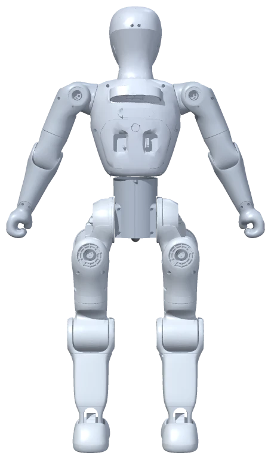
再看一眼脚下：小布米站在上。它没有往下掉，我猜是因为。
B任务放大缩小
在“显示比例”里选一个数（例如 2），点“应用重载”。等它重新出现后，再看状态。
| 我的预测 | 实际看到 |
|---|---|
| 小布米会变 | 小布米变 |
| 状态会是 | 状态是 |
做完后把显示比例改回 1，再点一次“应用重载”。
想一想：变大以后，它的力气、走路本领会变吗？我的猜测：
老师补充的资料说：
C任务换一身颜色
切到“配色”分栏。
- 在“配色部件”选一个部位（例如“左臂”），点一个色块。
- 再试试“整机方案”，选一种你喜欢的。
- 最后点“恢复默认配色”。
我给换成了色。换色后，小布米的姿势
切回“仿真控制”分栏，状态还是。
D任务“变了 / 没变”观察卡
取景
主角视角 / 机器人视角观察位置和遮挡
先说画面看到了什么显示比例
设置 → 应用重载看“当前”读数与参照
镜头也可能随比例调整配色
选部件 → 点色块；或选整机方案原厂银灰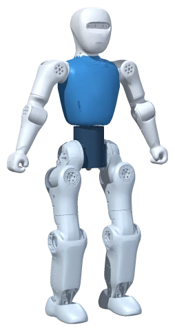
蓝白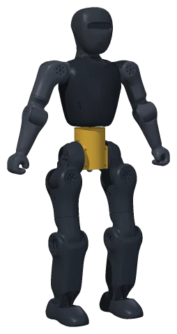
黑金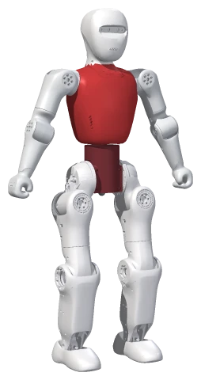
红白只改一个部位，记原色与新色
再恢复默认配色| 我改变了 | 画面里什么变了 | 小布米的身体结构变了吗 | 它走路的本领变了吗 | 我的依据 |
|---|---|---|---|---|
| 视角 | ||||
| 显示比例 | ||||
| 配色 |
我的结论：改变视角、大小和颜色，改变的是，没有改变。
四、观察员三问
- 今天画面的变化，是由什么产生的？
- 我的依据是：
- 只看“换了颜色、变大了”的画面，我还不能证明小布米
五、自我检查
| 今天我能 | 自己做到 | 有人帮忙做到 | 还想再练 |
|---|---|---|---|
| 说出主角视角和机器人视角的不同 | |||
| 解释“机器人视角”不是机器人的眼睛 | |||
| 完成放大和换色，并恢复原样 | |||
| 用观察卡分清“外观变化”和“本领变化” |
让它行动：一句任务怎样拆成步骤？
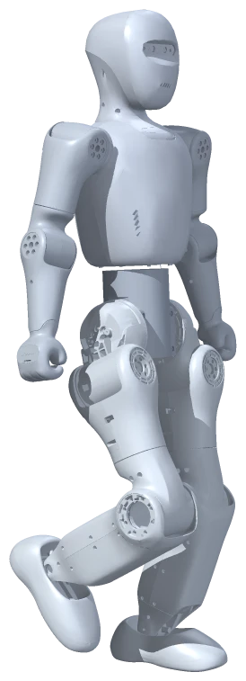
单元二 指令与人的判断 · 基线：小学 5–6 年级，40 分钟 · 学生学习单 · 课堂入口：小布米单例世界
本课一览
| 项目 | 内容 |
|---|---|
| 核心问题 | 一句任务怎样拆成按钮步骤？执行和预测不一样时怎么办？ |
| 学生成果 | 指令流程卡（任务 A）、执行记录（B）、一次修正（C）、“谁在编程”说明（D） |
| 关键词 | 任务分解、顺序、指令、调试 |
| 本课操作 | 仿真控制分栏：恢复/暂停仿真、开始行走、前进/后退、左右转、归零站立、重置姿态 |
| 准备 | 每组一套指令卡（学习单表格可剪下）、学习单 |
学习目标与证据
| 学生能够 | 对应任务 | 看什么 |
|---|---|---|
| 把一句任务拆成有顺序的按钮步骤，并写出预测 | A | 步骤完整，含开始、转向、停下的处理 |
| 按卡执行并记录状态与读数 | B | 每步有状态文字和速度/转向读数 |
| 发现预测与结果的差异，提出并验证修改 | C | 写出差异、原因猜测、修改和第二轮结果 |
| 说明步骤由人设计和执行，小布米只接收按钮指令 | D | 句子填写准确 |
课前预演（约 8 分钟）
按下面的“参考正确流程”走一遍，再故意走一遍“常见 bug 流程”，看清现象：
| 步骤 | 点击 | 预期状态 | 读数 |
|---|---|---|---|
| 准备 | 加载后点“暂停仿真” | 已暂停 | 0.0 · 0.0 |
| 1 | 恢复仿真 | 等待策略推理 → 站立中 | 0.0 · 0.0 |
| 2 | 前进 0.5，等 3 秒 | 行走中 | 0.5 · 0.0 |
| 3 | 归零站立，等它站稳 | 站立中 | 0.0 · 0.0 |
| 4 | 左转，等 3 秒 | 行走中（原地转） | 0.0 · 0.5 |
| 5 | 归零站立 | 站立中 | 0.0 · 0.0 |
| 6 | 暂停仿真 | 已暂停 | 0.0 · 0.0 |
常见 bug 流程：
- 暂停状态下直接点“前进 0.5”——按钮是灰的，点不动（暂停时方向按钮不可用）。
- 前进中直接点“左转”——读数变成 0.5 · 0.5，小布米边走边转出弧线，不是原地转。因为“左转”只改转向，保留原来的前进速度。
- 只点“开始行走”——它会直接以 0.5 m/s 前进，相当于“恢复仿真 + 前进 0.5”。
重新开始一轮：归零站立 → 重置姿态（回到初始站姿，课前确认是否回到起点）→ 暂停仿真。
记下 3 秒原地左转大约转了多少（理论值约 0.5 × 3 = 1.5 弧度，接近四分之一圈，实际会有偏差）。
课堂流程（40 分钟）
| 时间 | 环节 | 教师做什么 | 学生做什么 |
|---|---|---|---|
| 0–5 | 想一想 | “给外星人写倒水说明书”，请一组读出，全班挑漏掉的步骤 | 写 4 步 |
| 5–10 | 认识指令卡 | 投影面板，逐张介绍卡片；不演示按下效果，请学生写“我猜” | 填“我猜”一列 |
| 10–16 | 任务 A | 发卡，小组排步骤；提醒“每轮从已暂停开始” | 排卡、写预测 |
| 16–25 | 任务 B | 巡视，确保操作员只照卡按；提醒记录员抄读数 | 执行、记录 |
| 25–32 | 任务 C | 请发现弧线或按钮点不动的组分享；引导改卡、复位后再试 | 修改、第二轮 |
| 32–37 | 任务 D | 讨论“小布米看得懂纸卡吗” | 填写 |
| 37–40 | 三问与收尾 | 全班做“归零站立 → 暂停仿真” | 三问、自检 |
- 35 分钟：跳过“认识指令卡”的“我猜”一列，教师直接讲卡；第二轮只做一组展示。
- 45 分钟：任务 C 后加挑战：“走出一个 L 形路线再停下”，比较各组的卡片数，讨论“更短的步骤是否更好”。
配图怎样用
关键讲解（可以这样说）
- “按钮是给小布米的指令，指令卡是给操作员的指令。你们排卡，就是在为操作员写程序。”
- 发现弧线时：“看读数：速度 0.5、转向 0.5。两个指令同时生效，所以它边走边转。想原地转，得先让速度归零。”
- “程序出 bug 很正常。工程师的做法就是：记录哪里不一样，猜原因，改一处，再试一次。”
参考回答
指令卡“我猜”：学生预测合理即可，核对时按下表：
| 卡 | 实际效果 |
|---|---|
| ① 恢复仿真 | 仿真继续运行，按原来的指令；原来为 0 则站着 |
| ② 开始行走 | 恢复并以 0.5 m/s 前进 |
| ③ 前进 0.5 / ④ 后退 0.5 | 前后速度 0.5 / -0.5，转向归零 |
| ⑤ 左转 / ⑥ 右转 | 转向 0.5 / -0.5，前后速度保持原样 |
| ⑦ 归零站立 | 速度和转向归零，停下站着，仿真仍在运行 |
| ⑧ 暂停仿真 | 冻结仿真 |
任务 A：参考正确流程见课前预演表；“② 开始行走”代替“① + ③”也正确。
任务 C：典型 bug 与修正：
- 弧线：在“左转”前加“⑦ 归零站立”。
- 按钮点不动：在最前面加“① 恢复仿真”。
- 停不下来/一直转：缺少最后的“⑦ 归零站立”。
- 小发现：边走边转（走出弧线）。
任务 D：我们（人）排的；操作员按的；不能；人；指令（速度和转向的数值）。
三问：1. 左转卡；2. 看到转向读数变成 0.5，以及看到它转动；3. 不能证明它会自己理解一句话、自己规划路线或自己决定停下。
常见误解与回应
| 学生可能说 | 可以这样回应 |
|---|---|
| “我们给小布米编了程序” | 我们给操作员写了步骤。小布米只收到按钮的数值指令，纸卡它看不到 |
| “归零站立就是暂停” | 看状态：归零后是“站立中”，仿真还在运行；暂停后是“已暂停” |
| “它转弯不准，坏了” | 转向是“每秒转多少”，转多少取决于等了多久，人数秒本身就不准 |
| “开始行走就是开始” | 它会直接往前走。只想让仿真动起来、原地站着，要用“恢复仿真” |
网页打不开时
教师用课前预演表讲解每张卡的效果，学生用纸卡“人扮机器人”：一位同学扮小布米，只按卡片指令走，其他同学执行与记录。在任务 B 的表头注明“人扮演，非 Web”。
本课评价
| 看什么 | 达到 | 需要支持 |
|---|---|---|
| 分解与顺序（A） | 步骤含开始、行进、停、转、收尾 | 漏掉开始或停止 |
| 执行与记录（B） | 每步有状态和读数 | 只写“成功/失败” |
| 调试（C） | 能说出差异与原因，改一处后复试 | 只重复执行，不改步骤 |
| 角色理解（D） | 说清人设计、人执行 | 认为小布米理解了任务 |
学段调整
- 1–2 年级：只用“开始行走、归零站立、左转”三张大图卡；老师操作，学生举卡排序，全班喊口令。
- 3–4 年级：提供部分排好的步骤，学生补两张卡。
- 初中：用读数写出“状态—指令表”，讨论“左转保留前进速度”这种设计的好处和坏处。
- 高中：把步骤改写成伪代码（含“等待直到状态为站立中”这类条件），讨论按时间等待和按条件等待的区别，为第 4 课铺垫。
课后记录
| 记录项 | 本次情况 |
|---|---|
| 每个环节实际用时 | |
| 最常见的 bug | |
| 学生不懂的词 | |
| 下次要改的一处 |
今天的问题
“让小布米往前走一段，原地向左转，再停下站好。”这句话要拆成哪些按钮步骤？
一、想一想：给外星人写说明书
一位外星朋友完全听不懂“去倒杯水”。你要把它拆成一步一步的动作，至少写 4 步：
- 2. 3. 4.
少写一步，会发生什么？
二、认识今天的指令卡
先在“仿真控制”分栏加载小布米，再点“暂停仿真”。每一轮开始前，都让状态是“已暂停”。
下面是可以用的指令卡（老师会发纸卡，也可以写编号）：
| 卡号 | 指令卡 | 我猜它会让小布米…… |
|---|---|---|
| ① | 恢复仿真 | |
| ② | 开始行走 | |
| ③ | 前进 0.5 | |
| ④ | 后退 0.5 | |
| ⑤ | 左转 | |
| ⑥ | 右转 | |
| ⑦ | 归零站立 | |
| ⑧ | 暂停仿真 | |
| ⑨ | 等待 秒（操作员心里数） |
面板上有一行“速度 m/s · 转向 rad/s”，它会告诉你当前的指令。
三、任务
1 人把任务写成纸卡
2 操作员照卡按
3 网页收到按钮指令
前进 0.5左转速度 · 转向归零站立 → 恢复仿真 → 等状态可操作 → 再按方向按钮
A任务排出第一版步骤
用指令卡排出完成任务的步骤（可以重复用同一张卡）：
| 第几步 | 卡号 | 我预测小布米会 |
|---|---|---|
| 1 | ||
| 2 | ||
| 3 | ||
| 4 | ||
| 5 | ||
| 6 | ||
| 7 | ||
| 8 |
B任务照卡执行
规则：操作员只按卡片做，不能自己加步骤。观察员看小布米和状态，记录员填表。
| 第几步 | 点了什么 | 状态显示 | 速度 · 转向读数 | 和预测一样吗？ |
|---|---|---|---|---|
| 1 | ||||
| 2 | ||||
| 3 | ||||
| 4 | ||||
| 5 | ||||
| 6 | ||||
| 7 | ||||
| 8 |
C任务找到“虫子”，修好它
程序里不按预想工作的地方叫“bug（虫子）”。
我们发现的不一样：
我们猜原因是：
我们改成：在第步
重新执行前，先点“归零站立”“重置姿态”“暂停仿真”，让小布米回到起点。第二轮结果：
小发现记录：正在往前走的时候点“左转”，小布米会。
A 前进中直接左转
速度 0.5 m/s · 转向 0.5 rad/s
左转保留原来的前进速度。
B 先让速度归零，再左转
速度 0.0 m/s · 转向 0.5 rad/s
归零后再左转，前后速度是 0。
D任务谁在“编程”？
今天的步骤是谁排的？ 每一步是谁按的？
小布米能看懂我们写的纸卡吗？
所以，今天把一句话变成步骤、再一步步执行的，是；小布米收到的只是按钮发出的。
四、观察员三问
- 小布米这次的转弯，是由哪张卡（哪个按钮）产生的？
- 我的依据是：
- 今天的活动不能证明小布米会自己
五、自我检查
| 今天我能 | 自己做到 | 有人帮忙做到 | 还想再练 |
|---|---|---|---|
| 把一句任务拆成按钮步骤 | |||
| 照卡执行并记录状态和读数 | |||
| 找到一个“虫子”并修改步骤 | |||
| 说清楚步骤是人排的、人执行的 |
收尾：点“归零站立”，再点“暂停仿真”。
谁在判断何时停止？
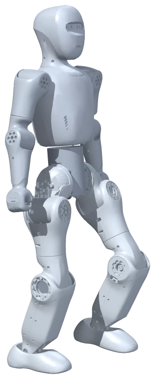
单元二 指令与人的判断 · 基线：小学 5–6 年级，40 分钟 · 学生学习单 · 课堂入口：小布米单例世界
本课一览
| 项目 | 内容 |
|---|---|
| 核心问题 | 停在标记前，是谁在看、谁在判断、谁在操作？ |
| 学生成果 | 两种停法的记录（任务 A、B）、“人”的流程图（C）、判断归属（D） |
| 关键词 | 预先约定、观察与反馈、人的判断、延迟 |
| 本课操作 | 开始行走、归零站立、重置姿态、暂停仿真、机器人视角 |
| 准备 | 课前选定停止标记；学习单 |
学习目标与证据
| 学生能够 | 对应任务 | 看什么 |
|---|---|---|
| 用两种方式让小布米停下，并如实记录结果 | A、B | 三轮记录完整，包括失败 |
| 说出“看到结果再调整”只出现在第二种停法中 | B、C | 流程图形成回路，并回答第一种没有 |
| 指出今天发现标记、决定停止的是人 | D | 勾选正确，并有依据 |
| 提出让机器人自己停下还需要的能力 | D | 提到“能感知标记/距离”与“能自己判断” |
课前预演（约 10 分钟）
- 加载小布米，暂停。点“机器人视角”。
- 选停止标记。点“开始行走”，看小布米朝哪个方向走、画面里有什么参照物，然后归零站立、重置姿态。可选做法：
- 地面上一块颜色不同的方块、远处的墙或其他明显物体；
- 把主角（玩家角色）用键盘走到小布米前进方向上，约 4–6 秒行走距离处，作为标记。选一个在“机器人视角”下能同时看到小布米和标记的。0.5 m/s 走 5 秒约 2.5 米，供参考。
- 试一次“约定秒数”：开始行走后数到 5，归零站立。留意：点归零站立后，小布米是否还会再走一两步才站稳。如果有，这是本课讨论“刹车距离”的素材；以实际看到的为准。
- 确认“重置姿态”后小布米是否回到起点。若不回起点，改用“每轮从当前位置出发，标记离它的距离尽量相同”，并在课后记录中写明。
课堂流程（40 分钟）
| 时间 | 环节 | 教师做什么 | 学生做什么 |
|---|---|---|---|
| 0–5 | 想一想 | 请一名志愿者闭眼走向门口，同伴喊停；对比“数步数”的方式 | 勾选、写理由 |
| 5–9 | 准备 | 投影介绍停止标记和每轮复位步骤 | 加载、暂停、记标记 |
| 9–15 | 任务 A | 强调操作员不看屏幕 | 第 1 轮、记录 |
| 15–24 | 任务 B | 提醒观察员可以根据上一轮调整喊停时机 | 第 2、3 轮、记录 |
| 24–30 | 任务 C | 请一组上台：观察员、操作员、“小布米”（由人扮演）表演第二种停法，全班画流程 | 画图 |
| 30–36 | 任务 D | 追问：“小布米知道标记在哪里吗？你怎么知道？” | 勾选、写需要的能力 |
| 36–40 | 三问与收尾 | 全班收尾“归零站立 → 暂停仿真” | 三问、自检 |
- 35 分钟：任务 B 只做一轮；任务 C 由教师在黑板上画，学生补空。
- 45 分钟：加第 4 轮“观察员蒙眼，只听同伴报告距离”，讨论信息经过多人传递后误差会怎样变化。
配图怎样用
关键讲解（可以这样说）
- “第一种停法，像按计划走，开始以后不再看结果。第二种停法，观察员一直在看，看到结果再调整，这就叫反馈。”
- “点了归零站立，小布米还会走一两步。观察员发现了这一点，下一轮就提前喊——这是人在根据结果调整自己的判断。”
- “今天谁发现了标记？观察员。小布米有没有用摄像头看标记？在这个世界里没有。它只收到‘速度归零’的指令。”
- 为第 5 课埋伏笔：“下节课我们会发现，小布米身体内部也有一种反馈，但它管的不是‘停在哪里’，而是‘怎么站稳’。”
参考回答
想一想：请同学看着喊停更容易，因为能看到离门还有多远，随时调整。
任务 A、B 记录：以学生实际结果为准，不要求“成功”。常见现象：
- 第 1 轮（约定秒数）常常停得不准，偏差取决于约定的秒数与数秒的快慢。
- 第 2 轮常常超过标记，因为喊“停”、按按钮、小布米减速都需要时间。
- 第 3 轮观察员提前喊，通常更接近。
- 点“归零站立”后，小布米多数会再走一两步才站稳。
任务 C：观察员看到“小布米快到标记了” → 观察员判断“现在该停” → 操作员点“归零站立” → 小布米减速停下 → 回到“观察员看到”（看是否停好、下一轮怎样调整）。第一种停法没有“看到结果再改”。
任务 D：观察员；观察员；归零站立。小布米不能看到标记——依据：今天它只接收按钮指令，资料显示这个世界里小布米没有使用摄像头识别物体（第 1、2 课也讨论过外形像眼睛不等于能看）。还需要：能感知标记和距离的传感器、能判断“到了”的程序、自动发出停止指令的控制。
三问：1. 观察员的判断和操作员点的“归零站立”；2. 记录表和我们的分工；3. 不能证明它能自己发现障碍、自己判断停在哪里。
常见误解与回应
| 学生可能说 | 可以这样回应 |
|---|---|
| “它自己停下来了” | 看记录：是谁喊停、谁按的按钮？它停下前收到了什么指令？ |
| “它停不准，是机器人不好” | 想想按下按钮之前，人看、人喊、人按各花了多少时间；按下后它又需要几步减速 |
| “约定秒数也是反馈” | 开始之后，有没有根据看到的结果改变计划？没有，所以不是 |
| “多练几轮，小布米就学会停了” | 第 3 轮更准，是谁变了？是观察员调整了时机，小布米收到的指令没有变 |
网页打不开时
用“人扮小布米”游戏：一名同学扮演小布米，只按“走/停”口令匀速走；其他同学按两种停法操作。记录表注明“人扮演，非 Web”。讨论重点不变。
本课评价
| 看什么 | 达到 | 需要支持 |
|---|---|---|
| 如实记录（A、B） | 三轮都有结果，含“超过”“又走几步”等真实情况 | 只写成功的一轮 |
| 反馈概念（C） | 流程图形成回路，说出两种停法的区别 | 画成单向直线 |
| 判断归属（D） | 明确是人发现、人决定，并有依据 | 认为小布米看到了标记 |
学段调整
- 1–2 年级：全班玩“人扮小布米”，再看老师在网页上演示第二种停法；用举牌“谁喊停？”回答。
- 3–4 年级：只做第 1、2 轮，流程图用贴卡完成。
- 初中：估算延迟：0.5 m/s 下多走 0.5 秒约多走 0.25 米；讨论“反应时间”和“刹车距离”的关系。
- 高中：区分开环与闭环控制；讨论自动驾驶中“人在回路中”的含义和责任归属。
课后记录
| 记录项 | 本次情况 |
|---|---|
| 选用的停止标记 | |
| “重置姿态”是否回到起点 | |
| 每个环节实际用时 | |
| 学生对“反馈”的典型说法 | |
| 下次要改的一处 |
今天的问题
让小布米停在“停止标记”前面。是谁知道它到了？是谁决定停？
一、想一想：闭着眼睛走到门口
如果闭着眼睛，从座位走到教室门口停下，你会怎么做？
哪种更容易刚好停在门口？为什么？
二、准备
- 加载小布米，点“暂停仿真”。
- 老师会告诉你今天的停止标记是什么：
- 每一轮开始前：“归零站立”→“重置姿态”→“暂停仿真”，让小布米回到起点。
三、任务
A任务第一种停法——先约定好
规则：开始前约定好“走几秒就停”。操作员点“开始行走”后低头不看屏幕，心里数到约定的秒数，点“归零站立”。
我们约定：数到秒。
B任务第二种停法——观察员喊“停”
规则：操作员点“开始行走”后，眼睛只看观察员；观察员盯着小布米，觉得该停了就喊“停”，操作员立刻点“归零站立”。
可以玩两到三轮。观察员可以根据上一轮的结果，调整喊“停”的时机。
记录表
| 轮次 | 停法 | 谁决定停 | 小布米停在标记的 | 大约差多少 | 点了“归零站立”后，它还走了吗？ |
|---|---|---|---|---|---|
| 1 | 约定秒数 | ||||
| 2 | 观察员喊停 | ||||
| 3 | 观察员喊停（调整后） |
观察员在第 3 轮做了什么调整？
A 先约定秒数
数到几秒就停→操作员不看行进画面→归零站立
B 看画面再喊停
 标记行进画面→观察员停！→操作员→归零站立
标记行进画面→观察员停！→操作员→归零站立C任务画出“人”的流程
把下面的词填进方框，画上箭头，说明第二种停法是怎么工作的：
人看 → 人判断 → 人点按钮 → 小布米动了 → （回到哪里？）
第一种停法里，有没有“人看到结果再改”这一步？
1 网页画面
标记2 观察员
看画面、判断
3 操作员
听“停”、点按钮
D任务小布米知道标记在哪里吗？
在今天的活动中：
- 发现“快到标记了”的是：
- 决定“现在停”的是：
- 让小布米停下来的按钮是：
小布米能看到停止标记吗？ 我的依据：
如果将来想让小布米自己停在标记前，它至少还需要：
四、观察员三问
- 小布米这次停下来，是由什么产生的？
- 我的依据是：
- 今天的活动不能证明小布米能自己
五、自我检查
| 今天我能 | 自己做到 | 有人帮忙做到 | 还想再练 |
|---|---|---|---|
| 用两种停法完成并记录 | |||
| 说出哪种停法用到了“看到结果再调整” | |||
| 画出人看—人判断—人操作的流程 | |||
| 说清楚今天“停”的决定是人做的 |
收尾：“归零站立”→“暂停仿真”。
走路时为什么要不断调整身体？
单元三 已有模型与行走 · 基线：小学 5–6 年级，40 分钟 · 学生学习单 · 课堂入口：小布米单例世界
本课一览
| 项目 | 内容 |
|---|---|
| 核心问题 | 一次按钮指令，怎样变成二十多个关节协调运动、还不摔倒？ |
| 学生成果 | 运动观察记录（任务 A）、控制闭环图（C）、指令与关节控制的区分（D） |
| 关键词 | 身体状态、行走模型（策略）、关节控制、物理仿真、控制闭环 |
| 本课操作 | 恢复/暂停仿真、前进 0.5、归零站立、机器人视角 |
| 准备 | 五张概念卡（可放大打印任务 B 表格）；控制闭环图 control-loop.svg 先不出示 |
学习目标与证据
| 学生能够 | 对应任务 | 看什么 |
|---|---|---|
| 观察到一次按钮指令带动多个身体部位，暂停后恢复是接着走 | A | 勾选部位，记录暂停姿势与恢复方式 |
| 用五个概念组成控制闭环，并指出“回来的箭头” | B、C | 闭环中“身体状态”回到“行走模型” |
| 区分人的方向指令与模型产生的关节控制 | D | 计算正确，结论句准确 |
| 说出画面不能直接展示模型内部计算 | 三问 | 提到“看不到模型里面怎么算” |
课前预演（约 5 分钟）
- 加载、暂停、机器人视角。恢复仿真，等到“站立中”，近距离看 15 秒：站立时是否有细小调整（看不清也正常，如实告诉学生）。
- 前进 0.5，观察腿、腰、手臂哪些在动。暂停仿真，看它冻结在什么姿势（常见为一只脚在前或抬起）。恢复仿真，确认它接着走而不是从头开始。
- 归零站立、暂停仿真收尾。
课堂流程（40 分钟）
| 时间 | 环节 | 教师做什么 | 学生做什么 |
|---|---|---|---|
| 0–6 | 想一想 | 组织单脚站挑战，追问“脚踝在干什么”“闭眼少了什么信息” | 体验、填表 |
| 6–16 | 任务 A | 投影或小组操作 5 步；暂停时请全班说出姿势 | 观察、勾选、画姿势 |
| 16–22 | 任务 B | 逐卡讲解，每张卡联系刚才看到的现象 | 读卡、提问 |
| 22–30 | 任务 C | 小组摆卡连线，再出示示意图核对 | 画闭环 |
| 30–36 | 任务 D | 讲“每 0.02 秒”的资料来源，带学生算 | 计算、填结论 |
| 36–40 | 三问与自检 | 强调“看得到的”和“资料说的” | 三问、自检 |
- 35 分钟：单脚站只做闭眼一次；任务 B 与 C 合并，教师边讲卡边带全班连线。
- 45 分钟：任务 A 增加“后退 0.5”和原地“左转”，比较三种指令下腿的动作有什么不同。
配图怎样用
关键讲解（可以这样说）
- “单脚站时，你感觉到身体歪了，脚踝马上用力扶正。感觉 → 调整 → 再感觉，这个圈一直在转。”
- “小布米也有一个圈。不过它的‘感觉’不是摄像头，而是电脑直接告诉模型：身体歪了多少、转得多快、每个关节在哪里。”
- “行走模型是一个已经训练好的人工智能模型。它的任务很专一：根据指令和身体状态，算出 21 个关节下一步怎么动。”
- “暂停后再恢复，它接着走，没有从头开始。说明每一步都是根据当时的身体状态现算的，不是播放一段固定的录像。下节课和第 9 课还会用到这个发现。”
资料卡（教师掌握，按学段选讲）
依据 Bumi 行走运行合同：
| 项目 | 内容 |
|---|---|
| 人的方向指令 | 3 个数：前后速度、左右平移（当前固定为 0）、转向速度 |
| 每次读取的身体状态 | 身体转动快慢 3 个、身体倾斜 2 个、21 个关节位置、21 个关节速度、上一次给出的 21 个动作；加上 3 个指令，共 71 个数 |
| 历史 | 模型同时参考最近 5 次的记录，所以每次输入 71 × 5 = 355 个数 |
| 输出 | 21 个数，对应 21 个关节 |
| 频率 | 每 0.02 秒一次，即每秒 50 次；物理仿真每 0.005 秒算一步，比模型更细 |
| 关节控制 | 把模型输出变成各关节的目标位置，再按“离目标多远、动得多快”换算成用力 |
| 不包括 | 摄像头图像、声音、障碍物识别、目标位置 |
参考回答
想一想：闭眼更难，因为少了眼睛看到的信息，只能靠身体内部的感觉调整。脚踝、腰在不停做小幅度的用力和摆动。
任务 A：站立中可能有细小调整或看不清（如实）；前进时髋、膝、踝明显在动，腰和手臂也可能有摆动；暂停时冻结在迈步中的某个姿势；恢复后接着走。“我只按了 1 次按钮，却有 6 个以上的部位在动”（数字以学生观察为准）。
任务 C：方向指令 → 行走模型 → 关节控制 → 物理仿真 → 身体状态 → 回到行走模型。
任务 D：50 次；250 次；1 次（或 2 次，若算上恢复仿真）。决定往哪走的是人；决定每个关节怎么动的是行走模型。
三问：1. 行走模型根据指令和身体状态算出的关节动作，再经过关节控制和物理仿真；2. 看到的运动和资料卡；3. 不能证明模型内部具体怎样算，也不能证明它在真实地面上一样能走（画面只显示结果）。
常见误解与回应
| 学生可能说 | 可以这样回应 |
|---|---|
| “按前进，就是让腿往前迈” | 按钮只说“往前 0.5 米每秒”。怎么迈、哪只脚先迈，是模型算出来的 |
| “它用眼睛看路保持平衡” | 资料卡里的输入没有图像。它的“感觉”来自仿真系统直接给出的身体数据 |
| “人在一直控制它的腿” | 这 5 秒人只按了一次，模型算了 250 次 |
| “暂停了它就会摔倒” | 暂停是把整个仿真冻住，重力也一起停了，所以不会摔 |
网页打不开时
单脚站与五张卡照常进行；任务 A 改为教师口述预演中看到的现象，学生在记录处写“未观察 Web，依据老师描述”。任务 C、D 不受影响。
本课评价
| 看什么 | 达到 | 需要支持 |
|---|---|---|
| 观察（A） | 勾选部位并记录暂停姿势与恢复方式 | 只写“它走了” |
| 闭环（C） | 连线正确，能指出回来的箭头 | 画成单向链 |
| 区分（D） | 计算正确，能说出谁决定方向、谁决定关节 | 认为人控制每个关节 |
学段调整
- 1–2 年级：只做单脚站和“按一次、动很多”观察；用三张卡（人 → 小布米的“大脑” → 腿）排序。
- 3–4 年级：用四张卡（合并关节控制与物理仿真），不做计算。
- 初中：用资料卡讲 71 个输入的组成，讨论为什么要包含“上一次的动作”和历史记录。
- 高中：区分策略频率（50 Hz）与物理步长（200 Hz），讨论如果模型算得太慢会发生什么；比较这种学习型控制与手写规则控制的差异。
课后记录
| 记录项 | 本次情况 |
|---|---|
| 站立中能否看到细小调整 | |
| 每个环节实际用时 | |
| 学生不懂的词 | |
| 下次要改的一处 |
今天的问题
我们只按了一次“前进 0.5”，小布米的两条腿、二十多个关节是怎么一起动起来、还不摔倒的？
一、想一想：单脚站立挑战
站起来，单脚站 10 秒；再闭上眼睛单脚站 10 秒。
| 睁眼 | 闭眼 | |
|---|---|---|
| 我站稳了吗？ | ||
| 我的脚踝、腰在偷偷做什么？ |
闭眼后为什么更难？
二、进入小布米世界
加载小布米，点“暂停仿真”，再点“机器人视角”。
三、任务
A任务按一次按钮，动了多少地方？
| 步骤 | 点什么 | 我观察什么 |
|---|---|---|
| 1 | 恢复仿真 | 状态变成“站立中”后，盯着它看 15 秒 |
| 2 | 前进 0.5 | 看 5 秒，数一数哪些部位在动 |
| 3 | 暂停仿真 | 它停在什么姿势？ |
| 4 | 恢复仿真 | 它是从头开始走，还是接着走？ |
| 5 | 归零站立，再暂停仿真 | 收尾 |
- 站立中，小布米
- 前进时，在动的部位有：
- 暂停时，它停在：（画一个小人也可以）
- 恢复后，它
我只按了次按钮，却有个以上的部位在动。
人给一次方向指令
许多关节协调运动
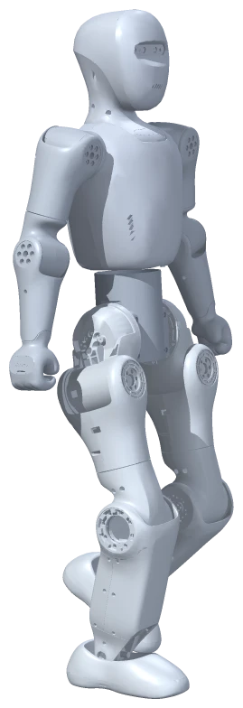
B任务认识五张卡
小布米走路时，电脑里在发生这些事：
| 卡片 | 它是什么 |
|---|---|
| 方向指令 | 人按按钮给出的：往前多快、转多快 |
| 身体状态 | 此刻身体有多歪、转得多快、每个关节在什么位置、动得多快 |
| 行走模型 | 一个已经训练好的人工智能模型，根据指令和身体状态，算出每个关节下一步怎么动 |
| 关节控制 | 让 21 个关节按模型算出的结果用力 |
| 物理仿真 | 电脑计算重力、地面支撑，算出身体接下来真的会怎样动 |
C任务把卡片连成一个圈
用箭头把五张卡连起来。提示：有两张卡的箭头都指向“行走模型”，最后要有一个箭头回到开头。
画完后，和老师的图核对一下：
这个圈叫控制闭环：身体动了以后的新状态，又回来影响下一次计算。这和单脚站时，你的身体感觉到“歪了”马上调整，很像。
方向指令
已有行走模型
已经训练好的模型关节控制
让各关节用力物理仿真
身体、重力、地面D任务算一算
资料说：行走模型每 0.02 秒算一次，每次给出 21 个关节的动作。
- 1 秒钟，它要算次。
- 走 5 秒钟，它一共算了次。
- 这 5 秒里，人按了次按钮。
所以：决定“往哪走”的是；决定“每个关节怎么动”的是。
四、观察员三问
- 小布米走路时腿的动作，是由什么产生的？
- 我的依据是：
- 光看画面，我还不能证明（提示：模型里面到底怎么算的，我们看得见吗？）
五、自我检查
| 今天我能 | 自己做到 | 有人帮忙做到 | 还想再练 |
|---|---|---|---|
| 观察并记录一次按钮带来的多个部位运动 | |||
| 把五张卡连成控制闭环 | |||
| 区分人的方向指令和模型的关节控制 | |||
| 说出画面能看到什么、看不到什么 |
会使用模型，就等于训练模型吗？
单元三 已有模型与行走 · 基线：小学 5–6 年级，40 分钟 · 学生学习单 · 课堂入口：小布米单例世界
本课一览
| 项目 | 内容 |
|---|---|
| 核心问题 | 课堂上点按钮让小布米走，是在训练模型还是在使用模型？ |
| 学生成果 | 三轮重复实验记录（任务 A）、分类（B）、训练与使用对照卡（C）、一句准确表述（D） |
| 关键词 | 训练、使用（推理）、模型文件、检验一个说法 |
| 本课操作 | 重置姿态、恢复仿真、前进 0.5、归零站立、暂停仿真 |
| 准备 | 学习单；可准备自行车或学写字的图片 |
学习目标与证据
| 学生能够 | 对应任务 | 看什么 |
|---|---|---|
| 用生活例子说明训练和使用的区别 | 想一想、C | 能说出“训练时模型被调整，使用时不变” |
| 设计并完成检验“按钮=训练”的重复观察 | A | 三轮记录完整，结论与记录对应 |
| 判断课堂操作属于训练、使用还是都不是 | B | 8 项中至少 6 项正确 |
| 准确表述“本课使用了已有行走模型” | D | 改写句子不含“我们训练了” |
课前预演（约 5 分钟）
按学习单任务 A 的一轮流程走两遍，确认“重置姿态”后小布米回到初始站姿、两轮表现相近。记下每轮所需时间（约 20–30 秒）。
课堂流程（40 分钟）
| 时间 | 环节 | 教师做什么 | 学生做什么 |
|---|---|---|---|
| 0–6 | 想一想 | 讲骑车故事，带学生分“练”和“用” | 分类、勾选 |
| 6–11 | 认识两个词 | 讲解对照表；说明行走模型的来历（见资料卡） | 阅读、提问 |
| 11–22 | 任务 A | 先问“如果是训练，会看到什么？”再做实验 | 三轮实验、写发现 |
| 22–29 | 任务 B | 小组讨论，逐题核对，重点讲 4、5、7 | 分类 |
| 29–35 | 任务 C、D | 请两组读改写的句子，比较哪个更准确 | 填卡、改句 |
| 35–40 | 三问与收尾 | 带全班说出“我们今天使用了一个已经训练好的模型” | 三问、自检、收尾 |
- 35 分钟：任务 A 做两轮；任务 B 只讨论 1、2、4、5、8。
- 45 分钟：加“如果真的要训练”讨论：需要多少次练习、谁来判断好坏、要用多少电脑，由学生写出两条。
配图怎样用
关键讲解（可以这样说）
- “检验一个说法，要先想：如果它是真的，我应该看到什么？然后去看。”
- “训练就像练习，模型在变；使用就像考试或上学路上骑车，用已经练好的本领。我们点按钮，是请模型干活，不是在教它。”
- “行走模型训练时，需要虚拟机器人在电脑里练习非常多次，还要大量计算。我们的课堂网页只是装着训练好的结果。”
- 若学生问到“动作回放”里的舞蹈：“播放舞蹈既不是训练，也没有使用这个行走模型——它用的是另一种办法，第 7 课开始学。”
资料卡（教师掌握）
- 依据 Bumi 资产说明和行走合同：行走模型来自 Noetix（松延动力）公开的 Bumi 训练项目与 SDK 中的现成策略文件，本项目直接使用，没有重新训练或修改数值。
- 模型输入 355 个数、输出 21 个数（见第 05 课资料卡）。课堂上每次按按钮，改变的只是输入中的 3 个指令数；模型文件本身不变。
- 课程平台没有提供训练入口，课堂不训练模型。
- 这类行走模型通常用“强化学习”在仿真中训练：让虚拟机器人反复尝试，表现好就“奖励”，再据此调整模型。本课只需让学生理解“反复练习并调整”，不讲算法。具体训练方法以开发方资料为准。
参考回答
想一想：练、用、练、用；练的时候本领在变化，用的时候本领基本不变。
任务 A：预期三轮表现相近（以实际观察为准）。发现按实际记录填写。三轮表现不能单独证明模型是否训练或更新；“课堂只使用已有模型、按钮不训练”依据下面的资料卡。若某一轮差别明显，引导学生想想起点、数秒长短是否一样，不急于下结论。
任务 B：1 训练；2 使用；3 使用；4 都不是；5 都不是；6 都不是；7 使用；8 训练。
任务 C：
| 训练 | 使用 | |
|---|---|---|
| 谁做的 | 开发团队 | 我们（课堂） |
| 在哪里 | 开发团队的电脑仿真里 | 小布米网页世界里 |
| 模型会改变吗 | 会，不断调整 | 不会 |
| 课堂上做了吗 | 没做 | 做了 |
任务 D：“我们今天在课上使用一个已经训练好的行走模型，让虚拟小布米走路，我们没有训练它。”意思准确即可。
三问：1. 已经训练好的行走模型（加上人的方向指令）；2. 实验和资料都有；3. 不能证明训练是怎样进行的、训练用了多久，也不能证明它在真实机器人上表现一样。
常见误解与回应
| 学生可能说 | 可以这样回应 |
|---|---|
| “我们让它走，它就在学习” | 三轮记录能描述表现变化，不能单独证明学习。资料卡说明：本平台按钮改变输入，不更新行走模型。 |
| “人工智能一直在学习” | 有的系统使用时也会继续学习，但小布米这个行走模型在课堂上是固定的文件，不会被改变 |
| “模型就是一段写好的程序” | 普通程序是人一条条写规则；这个模型的数值是训练时调出来的，人没有一条条写“左脚抬多高” |
| “重置姿态就是重新训练” | 重置只是让身体回到站姿，模型没有变 |
网页打不开时
任务 A 改为思想实验：“如果按钮是训练，你预测会看到什么？如果不是呢？”学生写预测，标注“未观察 Web”。其他任务照常。
本课评价
| 看什么 | 达到 | 需要支持 |
|---|---|---|
| 检验思路（A） | 记录真实表现，并用平台资料区分“表现变化”和“模型是否更新” | 只记录，不联系问题 |
| 分类（B） | 6 项以上正确 | 把换色、缩放也当作训练 |
| 准确表述（D） | 写出“使用已经训练好的模型” | 仍写“我们训练了” |
学段调整
- 1–2 年级：只做骑车故事和“练还是用”举牌游戏；教师演示两轮行走，问“它变厉害了吗？”。
- 3–4 年级：任务 B 只保留 1、2、4、8 四题。
- 初中：介绍“训练数据—模型—推理”三个词；讨论为什么训练要在仿真里做，而不是直接在真机上摔几万次。
- 高中：讨论仿真训练到真机部署的差距（模型误差、传感器噪声、延迟），以及“预训练模型”的来源说明和使用责任。
课后记录
| 记录项 | 本次情况 |
|---|---|
| 三轮实验的典型结果 | |
| 每个环节实际用时 | |
| 分类题中错得最多的一题 | |
| 下次要改的一处 |
今天的问题
我们每节课都在点按钮让小布米走路。我们是在“训练”它，还是在“使用”它？
一、想一想：学骑自行车
把下面的句子分成两类，在括号里写“练”或“用”：
- 小明在操场上摔了很多次，慢慢找到平衡的感觉。（ ）
- 小明骑车去同学家。（ ）
- 教练看小明骑歪了，提醒他调整方向，小明再试一次。（ ）
- 小明骑车去买早餐，路上遇到红灯停下。（ ）
“练”的时候，小明的本领在
二、认识两个词
| 训练 | 使用 | |
|---|---|---|
| 像什么 | 学骑车时一次次练习 | 学会以后骑车去上学 |
| 模型会怎样 | 根据结果不断被调整 | 不改变，按已经学会的本领工作 |
| 需要什么 | 大量练习材料、大量计算、很长时间 | 一个训练好的模型和当下的输入 |
资料说：小布米的行走模型，是开发团队事先在电脑仿真里训练好的，然后保存成一个模型文件放进了这个世界。
训练：反复尝试，再调整模型
使用：现成模型接收当前输入
计算关节动作 → 让身体继续运动
模型文件不变*
* 本平台资料说明；不是只凭画面判断。三、任务
A任务做个小实验——它会越走越好吗？
有人说：“点按钮多走几次，小布米就会越走越好，这是在训练。”我们先做三轮观察，检验“越走越好”的预测；是否训练，还要结合平台资料判断。
每一轮：“重置姿态”→“恢复仿真”→ 等到“站立中”→“前进 0.5”→ 数 5 秒 →“归零站立”→“暂停仿真”。
| 轮次 | 走得稳吗 | 步子的样子（大、小、快、慢） | 大约走了多远（几步） | 和上一轮比 |
|---|---|---|---|---|
| 1 | — | |||
| 2 | ||||
| 3 |
我的发现：三轮下来，小布米
这说明：
输入可以换
前进 0.5后退 0.5归零站立输出可以不同
↑ 向前的动作
↓ 向后的动作
● 站立控制
B任务分一分
在每件事后面写“训练”“使用”或“都不是”：
| 事情 | 训练 / 使用 / 都不是 |
|---|---|
| 1. 开发团队让电脑里的虚拟小布米练习走路很多很多次，根据结果调整模型 | |
| 2. 我们点“前进 0.5”，小布米走起来 | |
| 3. 我们点“左转”，小布米转弯 | |
| 4. 我们把小布米换成蓝白配色 | |
| 5. 我们把显示比例调到 2 | |
| 6. 我们点“暂停仿真” | |
| 7. 我们重复走三轮，观察它有没有变好 | |
| 8. 把很多次“摔倒”和“站稳”的结果拿来，让模型下次少摔 |
C任务训练与使用对照卡
| 训练 | 使用 | |
|---|---|---|
| 小布米的行走模型，是谁做的这一步？ | ||
| 在哪里做的？ | ||
| 做的时候，模型会改变吗？ | ||
| 我们在课堂上做了吗？ |
D任务写一句准确的话
请把下面这句不准确的话改准确：
“我们今天在课上训练出了一个会走路的机器人。”
改成：
四、观察员三问
- 小布米今天会走路，是由什么产生的？
- 我的依据是：
- 今天的活动不能证明（提示：模型是怎样训练出来的，我们亲眼看到了吗？）
五、自我检查
| 今天我能 | 自己做到 | 有人帮忙做到 | 还想再练 |
|---|---|---|---|
| 用自己的话说出训练和使用的区别 | |||
| 完成三轮实验并说出发现 | |||
| 正确分类 8 件事 | |||
| 写出一句准确描述今天课堂的话 |
收尾：“归零站立”→“暂停仿真”。
从一个姿态到一段动作
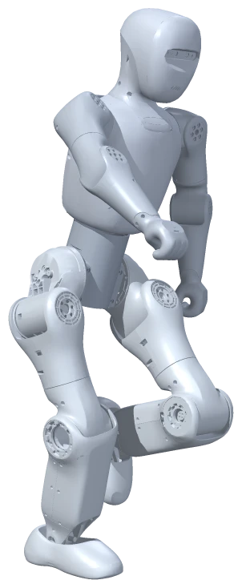
单元四 动作数据 · 基线：小学 5–6 年级，40 分钟 · 学生学习单 · 课堂入口：小布米单例世界
本课一览
| 项目 | 内容 |
|---|---|
| 核心问题 | 一段动作怎样变成电脑里的数据？ |
| 学生成果 | 挥手姿态卡（任务 A）、三次暂停的姿态记录（B）、数据表解读（C）、顺序与时间的解释（D） |
| 关键词 | 姿态、帧、帧率、动作数据、顺序与时间 |
| 本课操作 | 首次使用“动作回放”分栏：选片、1×、播放、暂停回放、继续回放、停止回放并归位 |
| 准备 | 学习单；可准备一本翻页动画小册子 |
学习目标与证据
| 学生能够 | 对应任务 | 看什么 |
|---|---|---|
| 用姿态卡说明动作由有序的姿态组成，顺序和时间改变动作 | A、D | 打乱顺序和快慢指的观察，D 的填空 |
| 在回放中暂停并记录时间与姿态 | B | 三次时间读数与火柴人 |
| 读懂一张真实的关节角数据表 | C | 找对间隔、最大值和变化量 |
| 说出回放的动作来自已有数据 | 三问 | 不说“它学会了跳舞” |
课前预演（约 8 分钟）
- 仿真控制：归零站立 → 暂停仿真。切到“动作回放”。刚加载后可能显示“正在读取动作目录”，等片段列表出现。
- 选“舞蹈”（显示约 02:11.5）、1×，点“播放所选片段”：先“动作加载中”（显示加载进度），再“正在回放”。记下加载用时。
- 试暂停回放、继续回放；进度文字为“已播 / 总长”，精确到 0.1 秒。
- 验证任务 C 的片段：停止后重新播放，速度改 2×，到约 00:47 暂停；在暂停状态下把速度改成 0.25×（按当前实现暂停时可改倍率，请确认），继续回放，观察 49–50 秒左腿抬起、右臂大幅摆动。若暂停时改不了倍率，改为播放中切换。
- 点“停止回放并归位”，确认回到站立、状态“回放已停止”，切回“仿真控制”显示“已暂停”。
课堂流程（40 分钟）
| 时间 | 环节 | 教师做什么 | 学生做什么 |
|---|---|---|---|
| 0–4 | 想一想 | 展示翻页动画或请学生在书角画 | 猜页数 |
| 4–12 | 任务 A | 示范一张姿态卡；组织“打乱顺序”和“快慢”两次试验 | 画卡、试验、填空 |
| 12–22 | 任务 B | 投影演示 1–3 步，再请小组操作；提醒先回到已暂停 | 播放、暂停三次、画姿态 |
| 22–32 | 任务 C | 讲“帧”与“每秒 30 帧”；带学生读第一行；如时间允许做网页验证 | 读表、答题 |
| 32–37 | 任务 D | 请学生用姿态卡和数据表各举一个例子 | 填空 |
| 37–40 | 三问与收尾 | 确认各组停止归位 | 三问、自检 |
- 35 分钟：任务 B 只暂停两次；任务 C 的网页验证由教师投影演示。
- 45 分钟：任务 C 后增加“补帧”讨论：表里只有 49.3 和 49.4 两行，中间的 49.35 秒左膝大约多少度？（约 110 度，取两者中间）引出“插值”。
配图怎样用
关键讲解（可以这样说）
- “姿态就像一张照片，动作就像一段视频。视频其实是很多张照片按顺序、按时间快速播放。”
- “小布米的舞蹈文件里，每秒存了 30 个姿态。每个姿态写着身体在哪里、朝哪边、21 个关节各转了多少度。”
- “回放时，电脑按时间把这些姿态一个个摆到小布米身上。两个姿态之间，它还会自动补出中间的样子，所以看起来很顺。”
- “这段舞蹈是真人先跳、再换算到小布米身上的（第 14 课细讲），不是小布米自己想出来的。”
资料卡（教师掌握）
- 依据动作回放技术总结：四个片段均为 30 帧/秒；舞蹈 3,945 帧，约 131.47 秒。每帧 28 个数：身体位置 3 个、身体朝向 4 个、21 个关节角（弧度）。
- 任务 C 的表由舞蹈片段第 1470–1500 帧中每隔 3 帧取一行，选取右肩前后方向（
r_arm_pitch_joint）和左膝（l_knee_pitch_joint），弧度换算为度后四舍五入。正负号仅表示方向，不在课上解释具体朝向。 - 回放按时间在相邻两帧之间线性插值，身体朝向用球面插值；不是“每秒只显示 30 次”。
- 当前面板没有拖动时间轴、跳到指定帧或导入新动作的入口；本课只用播放、暂停、继续、停止和倍率。
参考回答
想一想：至少 3–4 页；越多越顺。
任务 A：按顺序看起来像挥手；打乱顺序看起来乱跳或像另一个动作；指得慢动作就慢，指得快动作就快。填空：顺序、时间（或“多久”）。
任务 B：以学生实际记录为准；“哪里变了”能指出至少一个部位即可。
任务 C：
- 0.1 秒；3 帧。
- 49.3 秒，113 度；抬腿或弯腿（接受“蹲”“踢腿”等合理描述，提醒可在网页中验证）。
- 170 度；约 0.8 秒（49.0 到 49.8）。
- 动作会乱跳、不连贯，变成另一段动作。
任务 D：变成别的动作（或变乱）；更快或更慢；顺序、时间。
三问：1. 已有的舞蹈动作数据，按时间一帧帧摆到小布米身上；2. 暂停时看到的姿态和数据表；3. 不能证明它自己学会了跳舞，也不能证明真机器人能这样跳而不摔倒。
常见误解与回应
| 学生可能说 | 可以这样回应 |
|---|---|
| “小布米在跳舞时用的也是走路模型” | 看回放分栏的说明：“轨迹回放，不计算物理平衡”。第 9 课专门比较 |
| “每秒 30 帧，所以屏幕每秒刷新 30 次” | 30 是数据里存的姿态数。屏幕刷新多少次取决于电脑，第 8 课再区分 |
| “暂停回放就是暂停仿真” | 两个按钮在不同分栏，管的东西不同，第 10 课会画状态地图 |
| “数据是小布米自己记下来的” | 数据来自真人动作，经过换算后保存成文件，课堂只是读取播放 |
网页打不开时
任务 A、C、D 不依赖网页。任务 B 改为教师描述三个时刻的姿态（或用姿态卡），学生注明“未观察 Web”。不要补编进度时间。
本课评价
| 看什么 | 达到 | 需要支持 |
|---|---|---|
| 姿态与动作（A、D） | 说出顺序和时间都影响动作 | 只说“很多张图” |
| 回放操作与记录（B） | 三次时间与姿态对应，最后停止归位 | 忘记暂停读数或未归位 |
| 读数据（C） | 4 题中至少 3 题正确 | 找不到间隔或最大值 |
学段调整
- 1–2 年级：只做翻页小人和看舞蹈暂停一次，用身体模仿暂停时的姿势；不读数据表。
- 3–4 年级：任务 C 只答第 1、2 题。
- 初中：介绍“帧”“帧率”“插值”；计算舞蹈片段一共有多少帧（131.47 × 30 + 1 ≈ 3,945）。
- 高中：讨论每帧 28 个数的组成，以及为什么身体朝向用 4 个数（四元数）而不是 3 个角度；可用电子表格画出表中两个关节随时间变化的折线图。
课后记录
| 记录项 | 本次情况 |
|---|---|
| 舞蹈片段加载用时 | |
| 暂停时能否改倍率 | |
| 每个环节实际用时 | |
| 读表最难的一题 | |
| 下次要改的一处 |
今天的问题
一段舞蹈，在电脑里是怎么存起来的？
一、想一想：翻页小人
你玩过翻页动画吗？每一页画一个小人，快速翻动，小人就“动”起来了。
画一个“挥手”，至少要几页？我猜：页
二、任务
A任务画 4 张姿态卡
姿态是身体在某一刻的样子。在下面 4 个格子里，用火柴人画“挥手”的 4 个姿态：
| 卡 1 | 卡 2 | 卡 3 | 卡 4 |
|---|---|---|---|
和同伴试一试：
- 按 1→2→3→4 的顺序快速指一遍，看起来像。
- 打乱顺序（例如 3→1→4→2）再指一遍，看起来像。
- 同样的顺序，指得很慢、很快，有什么不同？
一段动作 = 很多个姿态 + 它们的 + 每个姿态出现的。
卡 1
同一个人的不同姿态卡 2
同一个人的不同姿态卡 3
同一个人的不同姿态卡 4
同一个人的不同姿态先看顺序
再看时间
B任务在小布米身上找姿态
| 步骤 | 点什么 | 看到什么就对了 |
|---|---|---|
| 1 | 在“仿真控制”分栏：“归零站立”→“暂停仿真” | 状态：已暂停 |
| 2 | 切到“动作回放”分栏，“动作片段”选“舞蹈”，“播放速度”选“1×” | 片段名后面显示总时长 |
| 3 | 点“播放所选片段” | 先“动作加载中”，然后“正在回放” |
| 4 | 想停时点“暂停回放”，读进度时间，画下姿态；再点“继续回放” | 状态在“回放已暂停”和“正在回放”之间切换 |
| 5 | 记完三次后，点“停止回放并归位” | 小布米回到站立，状态“回放已停止” |
| 第 1 次暂停 | 第 2 次暂停 | 第 3 次暂停 | |
|---|---|---|---|
| 进度时间 | : | : | : |
| 火柴人姿态 | |||
| 和上一次比，哪里变了 | — |
C任务读一张真正的动作数据表
小布米的舞蹈数据，每秒存了 30 个姿态（叫 30 帧）。每个姿态记着身体的位置和 21 个关节的角度。
下面是舞蹈片段中第 49.0 秒到 50.0 秒之间、两个关节的角度（老师从数据文件里摘出来，换算成了“度”）：
| 片段时间（秒） | 右肩前后摆（度） | 左膝弯曲（度） |
|---|---|---|
| 49.0 | -119 | 31 |
| 49.1 | -102 | 24 |
| 49.2 | -81 | 65 |
| 49.3 | -64 | 113 |
| 49.4 | -38 | 107 |
| 49.5 | -4 | 56 |
| 49.6 | 25 | 7 |
| 49.7 | 43 | 14 |
| 49.8 | 51 | 33 |
| 49.9 | 46 | 30 |
| 50.0 | 16 | 51 |
正负号表示两个相反的转动方向。
- 表里每一行相隔秒。数据每秒有 30 帧，所以这张表是每隔帧取一行。
- 左膝在第秒弯得最多，是度。这时候小布米的左腿可能在。
- 右肩的数从 -119 变到 51，一共变了度，只用了大约秒。
- 如果把表里的行打乱顺序再播放，会发生什么？
右肩前后摆 左膝弯曲
整台机器人在这一秒里的四个姿态 按同一份舞蹈数据摆出后离线渲染，同一机位
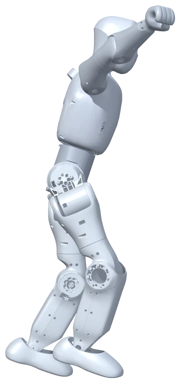
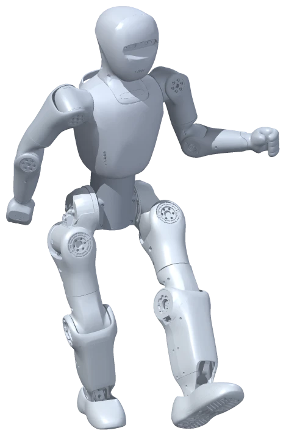
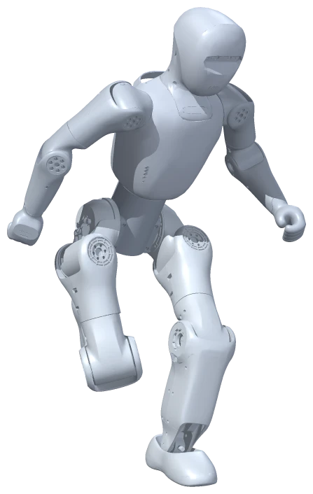
去网页里验证（老师说可以时再做）：选“舞蹈”，速度选“2×”，播放到进度约 00:47 时“暂停回放”；把速度改成“0.25×”，再“继续回放”，盯着 49–50 秒看左腿和右臂。最后“停止回放并归位”。
我看到：
D任务为什么顺序和时间很重要
用今天的发现补全：
- 同样的姿态，顺序变了，动作会。
- 同样的顺序，每个姿态停留的时间变了，动作会变得。
- 所以电脑存一段动作，不光要存每个姿态，还要存和。
三、观察员三问
- 回放时，小布米的舞蹈动作是由什么产生的？
- 我的依据是：
- 看到它跳舞，还不能证明它
四、自我检查
| 今天我能 | 自己做到 | 有人帮忙做到 | 还想再练 |
|---|---|---|---|
| 用姿态卡说明动作是由一串姿态组成的 | |||
| 在回放中暂停、读时间、画姿态 | |||
| 从数据表里找到最大值和变化 | |||
| 解释顺序和时间为什么重要 |
收尾：确认已“停止回放并归位”，再切回“仿真控制”分栏。
慢放和快放改变了什么？
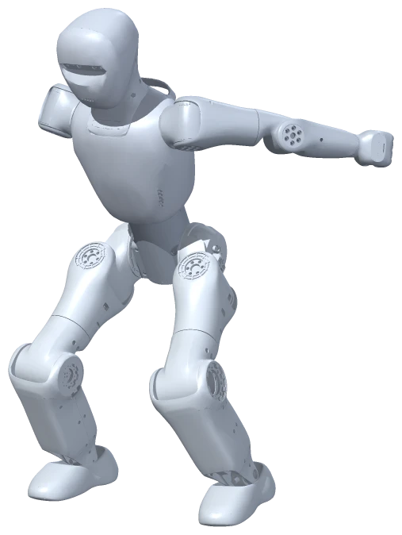
单元四 动作数据 · 基线：小学 5–6 年级，40 分钟 · 学生学习单 · 课堂入口：小布米单例世界
本课一览
| 项目 | 内容 |
|---|---|
| 核心问题 | 回放速度改变了什么，没有改变什么？ |
| 学生成果 | 预测表、三档速度测量记录（任务 B）、三个“快慢”的区分（C）、对 2× 说法的判断（D） |
| 关键词 | 回放倍率、片段时间与现实时间、数据帧率、屏幕流畅度 |
| 本课操作 | 动作回放：选片、播放速度、播放、暂停回放、继续回放、停止回放并归位 |
| 准备 | 每组一个计时工具（秒表、手机计时或投影计时器）；学习单 |
学习目标与证据
| 学生能够 | 对应任务 | 看什么 |
|---|---|---|
| 预测并计算不同倍率下播完整段所需时间 | 预测表 | 0.5× 约 263 秒，2× 约 66 秒 |
| 用“暂停—继续—计时—暂停”量出片段时间的增量 | A、B | 三行读数完整，B − A 计算正确 |
| 归纳“片段时间 ≈ 现实时间 × 倍率” | B | 规律填写，承认读数有偏差 |
| 区分数据帧率、回放倍率和屏幕流畅度 | C | 4 题正确 |
| 说明倍率实验不能证明真实运动能力 | D | 理由提到“回放不算物理”或“只是播放快” |
课前预演（约 8 分钟）
- 归零站立、暂停仿真；动作回放选舞蹈、1×，播放，几秒后暂停回放。
- 确认暂停状态下能否修改播放速度（按当前实现可以）。若不行，改为“继续回放后立即切换速度”，并把读数 A 改为切换速度那一刻的读数，课上同步告诉学生。
- 按任务 B 完整做一轮 1×、0.5×、2×，记下自己的数据，体验人工计时误差（按下与喊停有约 0.2–0.5 秒的反应差）。
- 确认 2× 下播放不会在 10 秒内播完：若起点约在 5 秒，三轮共走约 5 + 10 + 5 + 20 = 40 秒，远小于 131 秒。
- 改回 1×，停止回放并归位。
课堂流程（40 分钟）
| 时间 | 环节 | 教师做什么 | 学生做什么 |
|---|---|---|---|
| 0–4 | 想一想 | 讲慢镜头的例子 | 勾选、填空 |
| 4–10 | 预测 | 带学生算 0.5× 和 2× 播完整段要多久 | 填预测表 |
| 10–15 | 任务 A | 投影示范准备步骤；解释为什么从“继续回放”开始计时；示范一轮任务 B | 准备到“回放已暂停” |
| 15–27 | 任务 B | 巡视，提醒“先改速度再继续”“读数 A 每轮都要重新记” | 三轮测量、计算 |
| 27–32 | 任务 C | 逐句讨论，重点区分 ① 和 ③ | 连线 |
| 32–37 | 任务 D | 组织正反观点各说一句 | 判断并写理由 |
| 37–40 | 三问与收尾 | 确认各组改回 1× 并停止归位 | 三问、自检、收尾 |
- 35 分钟：预测表只算 2×；任务 B 只做 1× 和 2×。
- 45 分钟：任务 B 后增加 0.25× 一轮，请学生先用规律预测再测量。
配图怎样用
- 任务 B 记录后：用现实10秒的预测时间尺核对趋势，强调“预测”与本组实测分开。追问：“哪个是网页进度，哪个是教室里的10秒？”不要把图上5、10、20抄作实测。
- 任务 C 连线后：用三种快慢图请学生指向文件、旋钮、屏幕。追问：“调成2×，哪一项改变，文件里的30帧有没有重写？”
关键讲解（可以这样说）
- “进度条上的时间，是片段里的时间；秒表上的时间，是我们教室里的时间。倍率就是两者的比例。”
- “从头播放时要先加载，那段等待不算播放。所以我们从‘暂停’出发，按‘继续’的同一刻开始计时。”
- “数据文件里每秒有 30 个姿态，这个数写死在文件里。2× 时，电脑在同样的现实时间里取更多片段时间的姿态，并在两帧之间补出中间姿态，所以不需要重新做数据。”
- “回放不计算重力和地面，所以调到 2× 只是播放得快，不说明真的机器人能这么快地跳。”
参考回答
想一想：不是；改变了我们看的速度，没有改变球员当时真实的动作。
预测表：0.5× 更慢，约 263 秒；1× 一样，131.5 秒；2× 更快，约 66 秒；顺序都不变。
任务 B：以实际测量为准。预测值：1× 约 10 秒，0.5× 约 5 秒，2× 约 20 秒。实测有偏差正常（例如 2× 测出 19.4 或 20.8）。发现：最多 2×，最少 0.5×；规律：倍率。
任务 C：① A；② B；③ C；④ B。
任务 D：不同意（或不能确定）。理由：回放是把已有的姿态数据播得更快，不计算重力和地面平衡；没有证据说明真实机器人能以两倍速度完成这些动作。
三问：1. 我们选的回放倍率；2. 测量记录（B − A 与现实 10 秒的关系）；3. 不能证明机器人真的能更快地跳舞或保持平衡。
常见误解与回应
| 学生可能说 | 可以这样回应 |
|---|---|
| “2× 就是每秒 60 帧” | 数据还是每秒 30 帧。2× 是片段时间走得快一倍，电脑取姿态时跳得更快 |
| “我们的电脑卡，所以测得不准，是倍率坏了” | 卡顿影响画面流畅度；片段时间按经过的现实时间计算，偏差主要来自人工计时 |
| “测出来不是正好 20 秒，实验失败了” | 人按按钮有反应时间，不可能完全相等。差一点不是失败，下节课会专门讨论误差 |
| “调成 2× 可以让行走也变快” | 倍率只在动作回放里有效。行走速度由“前进 0.5”这样的指令决定 |
网页打不开时
预测表、任务 C、D 照常完成。任务 B 改为教师在投影上演示一次或口述预演数据，学生在表格旁注明“教师数据，非本组测量”。
本课评价
| 看什么 | 达到 | 需要支持 |
|---|---|---|
| 测量与计算（B） | 三行读数完整，B − A 正确，归纳出倍率规律 | 漏记读数 A 或计算出错 |
| 概念区分（C） | 4 题正确 | 混淆帧率与流畅度 |
| 证据边界（D） | 理由指向回放不计算物理 | 认为 2× 证明能力 |
学段调整
- 1–2 年级：只看 0.5× 和 2× 各 10 秒，用“乌龟/兔子”卡片排序快慢；不读数、不计算。
- 3–4 年级：只做任务 B 的读数记录，教师帮助计算 B − A。
- 初中：计算每轮“实测比例 =（B − A）÷ 实际秒数”，比较与倍率的差异，列出误差来源。
- 高中：讨论“回放时钟按经过时间 × 倍率推进、到末尾封顶”的设计，以及显示帧率不稳时插值如何保证动作连贯。
课后记录
| 记录项 | 本次情况 |
|---|---|
| 暂停时能否改倍率 | |
| 各组 2× 测量值的范围 | |
| 每个环节实际用时 | |
| 下次要改的一处 |
今天的问题
把舞蹈调成 0.5×、1×、2×，变的是什么？没变的是什么？
一、想一想：体育比赛的慢镜头
电视上回放进球的慢镜头时，球员真的跑慢了吗？
慢镜头改变了，没有改变。
二、先预测
舞蹈片段总长约 2 分 11.5 秒（131.5 秒）。
| 播放速度 | 动作看起来 | 播完整段大约要多少秒（现实时间） | 动作的先后顺序会变吗 |
|---|---|---|---|
| 0.5× | |||
| 1× | 131.5 | ||
| 2× |
三、任务
A任务准备
- “仿真控制”分栏：“归零站立”→“暂停仿真”，状态为“已暂停”。
- “动作回放”分栏：片段选“舞蹈”，速度选“1×”，点“播放所选片段”。
- 等它变成“正在回放”，让它跳几秒，点“暂停回放”。
为什么不从头开始计时？刚点播放时，它要先“动作加载中”，这段等待不算播放时间。从“暂停”继续就没有等待，更公平。
B任务每种速度量 10 秒
每一轮都这样做：
- 在暂停状态下，记下进度时间 → 读数 A。
- 选好这一轮的播放速度。
- 操作员点“继续回放”，计时员同时开始计时。
- 计时员数到 10 秒喊“停”，操作员点“暂停回放”。
- 记下进度时间 → 读数 B。
| 播放速度 | 读数 A（秒） | 读数 B（秒） | 片段走了多少秒（B − A） | 我预测会走多少秒 | 动作看起来 |
|---|---|---|---|---|---|
| 1× | |||||
| 0.5× | |||||
| 2× |
进度显示“01:05.3”的意思是 1 分 5.3 秒，也就是 65.3 秒。
我的发现：现实中都过了约 10 秒，片段时间走得最多的是×，最少的是×。
规律：片段走的秒数 ≈ 现实秒数 × 。
做完后：速度改回“1×”，点“停止回放并归位”。
预测：片段增加量 ≈ 10 秒 × 倍率
片段时间增加量
轮到我们实测：读数 B − 读数 A
C任务三个容易混的“快慢”
把每句话连到正确的词上（写字母）：
| 说法 | 是哪个？ |
|---|---|
| ① 舞蹈数据里，每秒存了 30 个姿态 | |
| ② 我们在面板上选了“2×” | |
| ③ 同学的电脑比较旧，画面有点卡 | |
| ④ 换成 0.5× 后，动作变慢了 |
A．数据帧率：数据文件里每秒存了多少个姿态，写好了不会变B．回放倍率：我们选的播放速度，决定片段时间走得多快C．屏幕流畅度：电脑每秒能画出多少次画面，和电脑有关
A 数据帧率
文件存了多少个姿态
舞蹈：30 帧／片段秒
调倍率，不重写原数据
B 回放倍率
片段时间推进的快慢
我们在面板里选择
同样现实时间，走得不同
C 屏幕流畅度
屏幕画面更新顺不顺
与电脑和当前负载有关
卡顿，不等于改了数据
D任务2× 能说明什么？
小明说：“我把舞蹈调到 2×，小布米跳得好快！说明它真的能用两倍速度跳舞。”
你同意吗？
我的理由：
四、观察员三问
- 这次动作变快或变慢，是由什么产生的？
- 我的依据是：
- 调速度的实验不能证明
五、自我检查
| 今天我能 | 自己做到 | 有人帮忙做到 | 还想再练 |
|---|---|---|---|
| 先预测，再测量三种速度 | |||
| 用读数 B − A 算出片段走了多少秒 | |||
| 分清数据帧率、回放倍率和屏幕流畅度 | |||
| 说出 2× 不能证明真实运动能力 |
收尾：速度改回 1×，“停止回放并归位”，切回“仿真控制”。
它正在走路，还是播放一段动作？
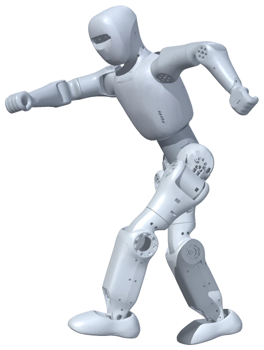
单元五 执行方式与状态 · 基线：小学 5–6 年级，40 分钟 · 学生学习单 · 课堂入口：小布米单例世界
本课一览
| 项目 | 内容 |
|---|---|
| 核心问题 | 行走仿真与动作回放有什么不同？回放画面能证明什么能力？ |
| 学生成果 | 行走与回放观察记录（任务 A、B）、两条路比较卡（C）、对“自动起身”说法的判断与改写（D） |
| 关键词 | 闭环控制、轨迹回放、物理仿真、能力证据 |
| 本课操作 | 仿真控制的行走按钮；动作回放的选片、播放、停止回放并归位 |
| 准备 | 学习单；示意图 two-paths.svg |
学习目标与证据
| 学生能够 | 对应任务 | 看什么 |
|---|---|---|
| 观察并记录行走可中途改方向、回放时行走按钮不可用 | A、B | 两张观察表填写，含状态文字 |
| 从输入、决定者、物理、中途调整、结束位置比较两条路 | C | 比较卡至少 4 行正确且有证据 |
| 判断回放画面不能证明自主起身，并改写说法 | D | 依据提到“回放/不计算平衡/已有数据” |
课前预演（约 8 分钟）
- 从已暂停出发完成任务 A：前进中点左转会走出弧线（第 3 课已见过），说明可以随时改方向；归零站立后它停在走到的地方。
- 切“动作回放”，读分栏说明：“轨迹回放，不计算物理平衡。播放时暂停行走仿真；停止或结束后回到暂停站立。”
- 选“倒地与起身”（约 01:42.2），1× 播放。按片段数据，约第 9–10 秒、第 35–37 秒前后有倒到地面再起身的过程；课前以实际画面确认时刻，课上告诉学生大约什么时候看。
- 播放中切到“仿真控制”：状态显示“正在回放”，开始行走、方向、归零、暂停/恢复、重置、显示比例都不可用（灰色）。
- 停止回放并归位：小布米回到开始播放时的位置和朝向，站立并暂停。
- 备选素材：“跳跃”片段约第 7 秒起有连续小跳。格斗片段仅在较高学段用于动作分析。
课堂流程（40 分钟）
| 时间 | 环节 | 教师做什么 | 学生做什么 |
|---|---|---|---|
| 0–4 | 想一想 | 用木偶和小朋友的对比引入 | 填空 |
| 4–11 | 任务 A | 提醒“半路改方向”的观察点 | 行走观察 |
| 11–21 | 任务 B | 请学生先抄说明文字；提示倒地时刻；播放中切分栏 | 回放观察 |
| 21–31 | 任务 C | 出示示意图，带学生读“有没有回到开头的箭头”，小组填卡 | 比较卡 |
| 31–37 | 任务 D | 组织辩论：对、不对、只对一半 | 判断、改写 |
| 37–40 | 三问与收尾 | 确认各组已停止归位 | 三问、自检 |
- 35 分钟：任务 A 由教师投影演示；任务 B 小组操作。
- 45 分钟：任务 B 增加“跳跃”片段，追问“跳起来时，它的脚有没有真的蹬地用力？我们能看出来吗？”
配图怎样用
关键讲解（可以这样说）
- “行走时，每一刻的动作都由模型根据当时的身体状态现算出来，还要经过重力和地面的计算。半路改方向，它能马上调整。”
- “回放时，每一刻的姿势早就写在数据里了，电脑按时间把它摆出来。说明文字写得很清楚：不计算物理平衡。”
- “所以看到回放里倒地又起身，我们能说的是：‘它展示了一段已经录好的倒地与起身动作。’不能说‘它会自己判断摔倒并爬起来’。”
- “木偶和小朋友：木偶的动作由拉线的人决定，台上有坑它也不会自己调整——这像回放。小朋友根据脚下感觉调整步子——这更像行走仿真。”
参考回答
想一想：拉线的人；小朋友自己（大脑和身体）；小朋友。
任务 A：行走中；能；走到的地方；已暂停。
任务 B：抄写说明（见课前预演第 2 步）；状态“动作加载中”后“正在回放”；约第 9–10 秒倒地（以课前确认为准）；仿真控制状态显示“正在回放”；不能点；回到开始播放时站的地方。
任务 C：
| 比一比 | 行走仿真 | 动作回放 |
|---|---|---|
| 人给了什么 | 方向指令（前进、转向） | 选片段和速度 |
| 姿势由谁决定 | 行走模型根据身体状态现算 | 已有的动作数据 |
| 重力和地面 | 有 | 没有 |
| 中途改方向 | 能 | 不能 |
| 结束后 | 停在走到的地方 | 回到开始时的站立姿态，暂停 |
| 证据 | 任务 A 观察 | 说明文字、按钮变灰、归位现象 |
木偶更像动作回放；小朋友更像行走仿真。
任务 D：不对（或只对一半：看到了起身动作，但不能证明自动）。依据：这是动作回放，播放的是已有数据，不计算物理平衡，说明文字写着；播放期间行走模型暂停。改写：“小布米播放了一段已有的‘倒地与起身’动作数据，这不能证明它能自己检测摔倒并站起来。”
三问：1. 已有的动作数据按时间回放；2. 回放分栏说明、行走按钮变灰、停止后归位；3. 不能证明它能自己发现摔倒、自己保持平衡或在真实地面上起身。
常见误解与回应
| 学生可能说 | 可以这样回应 |
|---|---|
| “回放也是人工智能” | 回放的动作数据来自真人动作（第 14 课）。播放过程本身是按时间取姿态，没有用行走模型做判断 |
| “倒地时它会疼/它很努力” | 这是拟人的说法。我们能观察到的是姿势在变化，没有证据说明它有感觉 |
| “行走也是播放事先录好的走路” | 回想第 5 课：暂停后恢复是接着走；任务 A 中半路能改方向。录好的动作做不到随时按指令改变 |
| “停止后它在倒下的地方” | 看实际现象：停止回放会归位到开始播放时的站姿，并保持暂停 |
网页打不开时
用示意图讲两条路，教师口述预演现象；任务 A、B 记录处注明“未观察 Web，依据老师描述”。任务 C、D 照常进行，但证据栏要写“资料说明”。
本课评价
| 看什么 | 达到 | 需要支持 |
|---|---|---|
| 观察（A、B） | 记录状态文字、按钮可用性和结束位置 | 只写“它在动” |
| 比较（C） | 至少 4 行正确且有证据 | 只填一列或无证据 |
| 证据判断（D） | 判断并改写准确，依据具体 | 认为看到起身就证明能力 |
学段调整
- 1–2 年级：只看舞蹈和行走，学说一句话：“这是放已经做好的动作”“这是它在走路”；用木偶故事讲区别。
- 3–4 年级：比较卡只填“姿势由谁决定”“中途能不能改方向”“结束后在哪里”三行。
- 初中：加入“闭环/开环”用语；讨论回放期间为什么必须暂停物理（否则重力会把悬空姿势拉倒，与数据冲突）。
- 高中：讨论“运动学回放”与“动力学跟踪控制”的区别：如果要让真机做出这段起身动作，还需要什么控制器和测试。可选用格斗片段做动作分析，不组织模仿或对抗。
课后记录
| 记录项 | 本次情况 |
|---|---|
| 倒地时刻（实际观察） | |
| 每个环节实际用时 | |
| 任务 D 学生的典型判断 | |
| 下次要改的一处 |
今天的问题
同样是小布米在动，“行走”和“动作回放”有什么不一样？看到它倒地再起身，能说明它会自己爬起来吗？
一、想一想：木偶和小朋友
一个提线木偶在台上“走路”，一个小朋友在台上走路。
- 木偶的每个动作，由决定。
- 小朋友的每个动作，由决定。
- 如果台上突然有个小坑，谁能自己调整步子？
二、任务
A任务观察行走
在“仿真控制”分栏，从“已暂停”开始：
| 步骤 | 点什么 | 我观察到 |
|---|---|---|
| 1 | 恢复仿真，等“站立中”，再点“前进 0.5” | 状态： |
| 2 | 走 3 秒后点“左转” | 它能在半路改方向吗？ |
| 3 | 再点“前进 0.5”，然后“归零站立” | 它停在 |
| 4 | 暂停仿真 | 状态： |
B任务观察动作回放
切到“动作回放”分栏。先读分栏上方那句说明，抄下来：
| 步骤 | 点什么 | 我观察到 |
|---|---|---|
| 1 | 片段选“倒地与起身”，速度“1×”，点“播放所选片段” | 状态： |
| 2 | 看约 12 秒，留意它倒下和起来的样子 | 第秒左右倒地 |
| 3 | 播放中，切到“仿真控制”分栏看一眼 | 状态显示： |
| 4 | 这时“前进 0.5”“恢复仿真”能点吗？ | |
| 5 | 切回“动作回放”，点“停止回放并归位” | 它回到 |
C任务两条路比较卡
先看这张图，再填表：
行走仿真
动作回放
| 比一比 | 行走仿真 | 动作回放 |
|---|---|---|
| 人给了什么 | ||
| 每一刻的姿势由谁决定 | ||
| 有没有计算重力和地面 | ||
| 中途能不能改方向 | ||
| 结束后，小布米在哪里 | ||
| 我的证据（看到的 / 读到的） |
木偶更像
D任务这句话说对了吗？
说法：“我看到小布米摔倒后自己爬起来了，它有自动起身的能力。”
找入口
实际操作的是哪个分栏？
它显示什么状态？
暂停画面（示意）画面相似 ≠ 执行方式相同
读说明
是否写着“轨迹回放、
不计算物理平衡”？
做比较
行走：可中途改方向
回放：行走按钮变灰
看停止后的地点
行走归零：停在走到处
回放停止：回到起始处
留下依据
我看到：
我读到：
我觉得这句话
我的依据：
改成准确的说法：
三、观察员三问
- 刚才“倒地与起身”的动作，是由什么产生的？
- 我的依据是：
- 看到这段回放，还不能证明小布米能
四、自我检查
| 今天我能 | 自己做到 | 有人帮忙做到 | 还想再练 |
|---|---|---|---|
| 分别观察并记录行走和回放 | |||
| 用比较卡说出两条路的至少三个不同 | |||
| 用证据判断“自动起身”的说法 | |||
| 把一句夸大的话改准确 |
收尾：确认已“停止回放并归位”，切回“仿真控制”，状态为“已暂停”。
暂停、停止、归位有什么不同？
单元五 执行方式与状态 · 基线：小学 5–6 年级，40 分钟 · 学生学习单 · 课堂入口：小布米单例世界
本课一览
| 项目 | 内容 |
|---|---|
| 核心问题 | 几个“停”按钮有什么区别？为什么回放结束要归位？ |
| 学生成果 | 12 步状态记录（任务 A）、按钮比较表（B）、状态地图路线（C）、归位原因解释（D） |
| 关键词 | 状态、状态转换、暂停与停止、归位、控制权 |
| 本课操作 | 仿真控制与动作回放的全部常用按钮；教师演示重置姿态，可选演示卸载与加载 |
| 准备 | 学习单；状态地图 state-map.svg 可放大打印 |
学习目标与证据
| 学生能够 | 对应任务 | 看什么 |
|---|---|---|
| 按顺序操作并记录状态文字与读数 | A | 12 步记录完整 |
| 发现“暂停仿真不清除指令”，区分五个“停” | A、B | 惊喜发现填写正确，比较表合理 |
| 在状态地图上找出从回放回到行走的路线 | C | 路线为“停止回放并归位 → 恢复仿真”等 |
| 解释回放末姿态不能直接接物理仿真的原因 | D | 提到“没有算重力/速度”“可能摔倒或乱动” |
课前预演（约 8 分钟）
按任务 A 走一遍，核对下表（状态文字依据当前面板实现，以实际显示为准）：
| 步 | 预期状态 | 读数 | 现象 |
|---|---|---|---|
| 1 | 等待策略推理 → 站立中 | 0.0 · 0.0 | 站着 |
| 2 | 行走中 | 0.5 · 0.0 | 往前走 |
| 3 | 已暂停 | 0.5 · 0.0 | 冻住，读数仍为 0.5 |
| 4 | 行走中 | 0.5 · 0.0 | 接着往前走 |
| 5 | 站立中 | 0.0 · 0.0 | 停下站着 |
| 6 | 已暂停 | 0.0 · 0.0 | 冻住 |
| 7 | 动作加载中 → 正在回放 | — | 跳舞 |
| 8 | 回放已暂停 | — | 冻在舞姿 |
| 9 | 仿真控制显示“回放已暂停”，恢复仿真为灰色 | — | 不能点 |
| 10 | 正在回放 | — | 继续跳 |
| 11 | 回放已停止 | — | 回到开始播放时的站姿 |
| 12 | 已暂停 | 0.0 · 0.0 | 站着、冻住 |
再演示“重置姿态”：运行中点击，小布米回到初始站姿，状态不变（仍为站立中）。可选演示“卸载机器人”→ 小布米消失，状态“未加载”，面板会重新弹出 → 再“加载小布米机器人”（需要等待加载）。课堂只由教师演示卸载。
课堂流程（40 分钟）
| 时间 | 环节 | 教师做什么 | 学生做什么 |
|---|---|---|---|
| 0–4 | 想一想 | 用视频播放器类比 | 填空 |
| 4–18 | 任务 A | 强调“严格按顺序”“每步先看再记”；第 3、4 步后全班停下讨论 | 12 步操作与记录 |
| 18–25 | 任务 B | 演示“重置姿态”（及可选卸载）；带学生逐行填表 | 填比较表 |
| 25–31 | 任务 C | 出示状态地图，讲“方框是状态，箭头是按钮” | 描路线、答题 |
| 31–37 | 任务 D | 请学生摆一个单脚舞姿，同伴轻推一下——没准备好就会站不稳 | 讨论、填写 |
| 37–40 | 三问与收尾 | 确认各组回到“已暂停” | 三问、自检 |
- 35 分钟：任务 A 删去第 8–10 步；任务 C 只做第 2 题。
- 45 分钟：任务 C 后增加“写操作说明书”：为低年级同学写一份 4 步的“从跳舞切换到走路”说明。
配图怎样用
关键讲解（可以这样说）
- “状态就是小布米此刻处在什么情况。按钮能不能点，要看当前状态——就像电梯在运行时，门是打不开的。”
- “暂停仿真像按住时间，原来的指令还在；归零站立是把指令改成 0，时间照常走。”
- “回放时，行走仿真把‘身体的控制权’交给了回放。只有停止回放、归位以后，控制权才回到行走这边。”
- “舞蹈姿势是摆出来的，电脑没有算它此刻有多快、往哪边倒。如果直接接上物理计算，可能一下子就摔倒或乱动。所以系统先把它放回干净的站姿，清零速度，再保持暂停，让我们自己决定什么时候恢复。”
参考回答
想一想：暂停的地方；头；重新打开。
任务 A：见课前预演表。惊喜发现：0.5；接着往前走；不会。
任务 B：
| 按钮 | 分栏 | 冻住 | 清指令 | 回起始站姿 | 之后怎样继续 |
|---|---|---|---|---|---|
| 归零站立 | 仿真控制 | 不会 | 会 | 不会 | 点方向按钮 |
| 暂停仿真 | 仿真控制 | 会 | 不会 | 不会 | 恢复仿真（按原指令） |
| 重置姿态 | 仿真控制 | 不会 | 会 | 会 | 状态不变，可继续操作 |
| 暂停回放 | 动作回放 | 会 | — | 不会 | 继续回放 |
| 停止回放并归位 | 动作回放 | — | — | 会 | 回仿真控制，恢复仿真 |
任务 C：
- 停止回放并归位 → 恢复仿真 → 前进 0.5（或直接“开始行走”）。
- 让每次回放都从安静、一致的站姿开始；回放结束后归位并暂停，行走再从干净状态出发，不会带着旧的方向指令突然走起来。
任务 D：可能摔倒、乱抖、突然弹开，或模型不知道怎么接着控制。填空：放回初始站姿（清零速度）；保持暂停（等人决定何时恢复）。
三问：1. “停止回放并归位”这个操作让系统把小布米放回干净的站姿；2. 任务 A 第 11、12 步的观察和状态文字；3. 不能证明小布米自己知道该停、能在真实世界里从任何姿势安全恢复。
常见误解与回应
| 学生可能说 | 可以这样回应 |
|---|---|
| “暂停仿真就是让它停下” | 看第 4 步：恢复后它接着走了。暂停只是冻住时间，指令还在 |
| “暂停回放和暂停仿真一样” | 它们在不同分栏，管不同的东西。回放暂停时，“恢复仿真”是灰的 |
| “归位是小布米自己走回去的” | 归位是系统直接把它放回起始站姿，没有走路过程 |
| “关掉面板就停止了” | 关掉面板不会停止正在播放的动作，所以我们约定不关面板 |
网页打不开时
用状态地图和课前预演表，教师逐步讲述，学生在任务 A 表中标注“教师演示/资料”。任务 B–D 照常进行。
本课评价
| 看什么 | 达到 | 需要支持 |
|---|---|---|
| 状态记录（A） | 12 步完整，发现暂停不清指令 | 跳步或只记一部分 |
| 比较（B） | 至少 4 行正确 | 混淆暂停与归零 |
| 状态地图与解释（C、D） | 路线正确，原因提到物理与速度 | 只说“规定这样” |
学段调整
- 1–2 年级：只比较“暂停回放”和“停止回放并归位”两个按钮，用“定住”和“回到原位”的身体游戏体验。
- 3–4 年级：任务 A 只做第 1–6 步，任务 B 只填前两行。
- 初中：把状态地图改写成“状态—事件—下一状态”表，讨论按钮为什么在某些状态下禁用。
- 高中：讨论“控制权互斥”的设计：两个系统同时控制一个机器人会发生什么；结合真实机器人讨论急停与安全复位。
课后记录
| 记录项 | 本次情况 |
|---|---|
| 预演中状态文字与表格是否一致 | |
| 每个环节实际用时 | |
| 学生最意外的发现 | |
| 下次要改的一处 |
今天的问题
面板上有好几个能让小布米“停”的按钮。它们有什么不同？为什么跳完舞不能直接接着走路？
一、想一想：看视频时的三个按钮
看视频时，“暂停”“停止”“关掉”有什么不同？
- 按“暂停”，再按播放，会从继续。
- 按“停止”，再按播放，会从开始。
- 关掉以后，要才能再看。
二、任务
A任务状态寻宝
从“仿真控制”分栏、状态“已暂停”出发，严格按顺序点，每步都记下状态文字和速度读数。
| 步 | 在哪个分栏 | 点什么 | 状态显示 | 速度 · 转向 | 小布米在做什么 |
|---|---|---|---|---|---|
| 1 | 仿真控制 | 恢复仿真 | |||
| 2 | 仿真控制 | 前进 0.5 | |||
| 3 | 仿真控制 | 暂停仿真 | |||
| 4 | 仿真控制 | 恢复仿真 | |||
| 5 | 仿真控制 | 归零站立 | |||
| 6 | 仿真控制 | 暂停仿真 | |||
| 7 | 动作回放 | 选“舞蹈”、1×，播放所选片段 | — | ||
| 8 | 动作回放 | 暂停回放 | — | ||
| 9 | 仿真控制 | （只看，不点）“恢复仿真”能点吗？ | — | ||
| 10 | 动作回放 | 继续回放 | — | ||
| 11 | 动作回放 | 停止回放并归位 | — | ||
| 12 | 仿真控制 | （只看）状态是？ |
惊喜发现：第 3 步暂停后，速度读数是；第 4 步恢复后，小布米
这说明“暂停仿真”
收尾：“恢复仿真”→ 等“站立中”→“归零站立”→“暂停仿真”。
B任务五个“停”按钮比一比
根据任务 A 的观察和老师的演示填表：
| 按钮 | 在哪个分栏 | 画面会冻住吗 | 会清除方向指令吗 | 会回到起始站姿吗 | 之后怎样继续 |
|---|---|---|---|---|---|
| 归零站立 | |||||
| 暂停仿真 | |||||
| 重置姿态 | |||||
| 暂停回放 | — | ||||
| 停止回放并归位 | — | — |
仿真控制归零站立
方向指令 → 0
运行／暂停状态不变
留在走到的位置
仿真控制暂停仿真
时间冻住
旧方向指令仍保留
恢复后按旧指令继续
仿真控制重置姿态
初始站姿＋清零
运行／暂停状态不变
本课由教师演示
动作回放暂停回放
停在当前片段时间
回放仍占身体控制权
点“继续回放”接着播
动作回放停止回放并归位
回到开始播放时的站姿
清零速度，并保持暂停
再回“仿真控制”
C任务读状态地图
· 课堂约定：播放片段前先“归零站立”再“暂停仿真”，让起点一致。刚加载或恢复时可能短暂显示“等待策略推理”。
- 用笔在图上描出你在任务 A 走过的路线。
- 小布米在“回放已暂停”时，想让它重新走路，最少要点哪些按钮？
→ →
- 从“行走中”直接点“播放所选片段”，课堂约定为什么要先“归零站立”和“暂停仿真”？
D任务为什么不能接着跳舞的姿势走路？
舞蹈停在某一刻时，小布米可能单脚抬起、身体倾斜。回放时，电脑没有计算重力和地面，也没有记录身体正在往哪边动、动得多快。
① 暂停，不等于清除方向
行走中
方向 0.5
已暂停
方向 0.5
恢复后
方向 0.5
② 回放切回行走，先停止归位
回放已暂停
回放中的一个姿态（离线渲染）恢复仿真仍不可用
停止回放并归位
初始站姿 · 速度清零
仿真控制：已暂停
再回到行走
（通常站立中）前进 0.5
从干净站姿重新出发
如果直接从这个姿势打开物理仿真和行走模型，可能会发生什么？
所以“停止回放并归位”要把小布米先，再。
三、观察员三问
- 停止回放后，小布米回到站姿，是由什么产生的？
- 我的依据是：
- 今天的活动不能证明
四、自我检查
| 今天我能 | 自己做到 | 有人帮忙做到 | 还想再练 |
|---|---|---|---|
| 按顺序操作并记录每一步的状态 | |||
| 说出暂停仿真不会清除方向指令 | |||
| 在状态地图上找到从回放回到行走的路线 | |||
| 解释为什么回放结束要归位 |
一次只改变一个条件
单元六 像研究者一样验证 · 基线：小学 5–6 年级，40 分钟 · 学生学习单 · 课堂入口：小布米单例世界
本课一览
| 项目 | 内容 |
|---|---|
| 核心问题 | 怎样用公平的实验确认倍率与片段时间的关系？ |
| 学生成果 | 实验计划（任务 A）、九次测量记录（B）、平均值与柱状图（C）、误差分析与局限（D） |
| 关键词 | 变量、控制变量、重复测量、平均值、误差 |
| 本课操作 | 与第 8 课相同的“暂停—继续—计时—暂停”方法，三种倍率各三次 |
| 准备 | 每组计时工具；学习单；可准备计算器 |
本课在第 8 课的基础上加入完整计划、重复测量和误差分析。第 8 课每种倍率只量一次，本课每种三次。
学习目标与证据
| 学生能够 | 对应任务 | 看什么 |
|---|---|---|
| 写出一个自变量、一个因变量和至少 4 个控制变量 | A | 计划表完整、变量对应正确 |
| 重复测量并如实记录，包括失败 | B | 九行数据，失败有原因 |
| 计算平均值并与预测比较 | C | 平均值正确，结论与数据一致 |
| 分析误差来源并说明实验局限 | D | 至少两个合理误差来源和一个局限 |
课前预演（约 8 分钟）
- 按任务 B 做 0.5×、1×、2× 各一次，确认暂停时能修改倍率（第 8 课已确认可省略）。
- 估算片段用量：从约 5 秒开始，三种倍率各三次共约 3×5 + 3×10 + 3×20 = 105 秒，会到约 1 分 50 秒，接近舞蹈结尾 2 分 11.5 秒。学习单规定读数 A 超过 01:40 时重新播放，避免播完自动归位打断测量。
- 自己做一次，体验喊停与按键之间的延迟。
课堂流程（40 分钟）
| 时间 | 环节 | 教师做什么 | 学生做什么 |
|---|---|---|---|
| 0–4 | 想一想 | 纸飞机故事，引出“只改一个条件” | 判断并列出条件 |
| 4–11 | 任务 A | 带全班讨论自变量、因变量；小组写控制变量 | 写计划 |
| 11–26 | 任务 B | 巡视，检查“同时开始计时”“记录实际 T”“保留失败” | 九次测量 |
| 26–32 | 任务 C | 示范一次平均值计算；请一组把柱状图画到黑板 | 计算、画图、写结论 |
| 32–37 | 任务 D | 收集误差来源，按“人”“电脑”“方法”分类 | 写误差和局限 |
| 37–40 | 三问与收尾 | 确认改回 1× 并停止归位 | 三问、自检 |
- 35 分钟：每种倍率测两次；任务 C 不画柱状图。
- 45 分钟：加一轮“只改计时员”：换一个人计时，同一倍率再测三次，比较两人数据的差别，讨论“人”也是一个需要控制的条件。
配图怎样用
关键讲解（可以这样说）
- “实验里我们故意改变的只有倍率，这叫改变的条件；我们测量的是片段时间走了多少秒，这叫结果；其他的都要尽量保持一样。”
- “为什么要做三次？因为人按按钮每次都不完全一样。多做几次取平均，偶然的偏差会互相抵消一部分。”
- “预测不是‘10 × 倍率’，而是‘秒表实际读数 × 倍率’。秒表停在 10.3，就用 10.3 去乘。”
- “实测和预测有差别，不是实验失败。说清楚差别有多大、可能为什么，这才是研究者的做法。”
参考回答
想一想：不公平，因为地点、风、扔的力气都不一样。要一样：扔的人、力气、地点、风、纸飞机的纸张等。
任务 A：
- 预测：倍率越大，相同现实时间里片段走的秒数越多，大约是“现实秒数 × 倍率”。
- 改变的条件：回放倍率（0.5×、1×、2×）。
- 测量的结果：片段时间的增加量（B − A）。
- 不变的条件：同一个片段（舞蹈）、同一台电脑和网页、同样约 10 秒的现实时间、同样的计时方法和计时员、都从“继续回放”开始计时、不在中途切换分栏或做其他操作。
- 做 3 次，因为一次可能碰巧不准。
任务 B、C：数据以学生实测为准。按 0.2–0.5 秒的人工反应误差估计（不是实测数据），平均值大致落在：0.5× 约 4.8–5.3 秒，1× 约 9.5–10.5 秒，2× 约 19–21 秒；明显超出时，先检查是否漏记读数 A 或计时没同时开始。结论：倍率越大，片段时间走得越多，大致是现实时间乘倍率。
任务 D：
- 误差来源：计时员喊“停”和操作员按键有反应时间；开始计时和按“继续回放”不完全同时；电脑卡顿；读数只精确到 0.1 秒。
- 2× 的差别通常最大，因为同样的反应延迟在 2× 下会让片段多走一倍的时间。
- 改进：让同一个人既按按钮又计时；用更长的测量时间（如 20 秒）让延迟占比更小。
- 不能回答：真实机器人能不能用 2× 的速度完成舞蹈；不同片段的动作难度；小布米是否更聪明。
三问：1. 我们选择的回放倍率；2. 九次测量数据和平均值；3. 不能证明机器人真实运动能力会随倍率改变。
常见误解与回应
| 学生可能说 | 可以这样回应 |
|---|---|
| “三次结果不一样，说明倍率不稳定” | 三次差了多少？差别和人按按钮的延迟比，哪个更大？ |
| “我们把那次不准的删掉吧” | 研究者不删数据，而是写清楚原因；如果要排除，也要说明为什么 |
| “平均值正好等于预测才算成功” | 看平均值离预测有多近，再说明可能原因 |
| “换个片段也算控制变量” | 片段变了就是又改了一个条件，本实验要保持同一个片段 |
网页打不开时
用教师课前测得的一组九次数据（标注“教师数据”），学生完成任务 A、C、D。不让学生编造“本组数据”。
本课评价
| 看什么 | 达到 | 需要支持 |
|---|---|---|
| 实验设计（A） | 变量清楚，控制变量 4 个以上 | 把结果当作改变的条件 |
| 数据记录（B） | 九行完整，失败有记录 | 只记成功的几次 |
| 分析（C、D） | 平均值正确，结论与数据一致，误差合理 | 结论脱离数据 |
学段调整
- 1–2 年级：不建议本课。若需要，改为“同一段舞蹈，快放和慢放，哪个先跳到举手的动作？”的比较游戏。
- 3–4 年级：只做 1× 和 2×，各两次，不算平均，比较大小。
- 初中：计算每次的“实测比例 =（B − A）÷ T”，求平均和最大最小值，讨论“系统误差”和“偶然误差”。
- 高中：估算人工反应延迟对每个倍率造成的误差上限；设计一个能减少人工误差的改进方案（如录屏逐帧读数），并说明它需要哪些额外条件。
课后记录
| 记录项 | 本次情况 |
|---|---|
| 各倍率平均值范围 | |
| 学生列出的控制变量数量 | |
| 每个环节实际用时 | |
| 下次要改的一处 |
今天的问题
怎样设计一个公平的实验，确认“回放倍率”和“片段时间走多快”之间的关系？
一、想一想：公平的纸飞机比赛
比较两架纸飞机谁飞得远。小红在走廊里对着风扔，小明在教室里轻轻扔，结果小红的远。
这个比较公平吗？ 因为
要公平，哪些条件必须一样？
二、任务
A任务写实验计划
| 计划项 | 我们的写法 |
|---|---|
| 研究问题 | 回放倍率变了，相同现实时间里片段时间走的秒数会怎样变？ |
| 我们的预测 | |
| 只改变的条件（一个） | |
| 要测量的结果 | |
| 保持不变的条件（至少 4 个） | 1. 2. 3. 4. |
| 每种情况做几次 | 次，为什么不只做一次？ |
同一舞蹈片段
不换动作同一设备和网页
不换环境约10秒的现实时间
用实际 T 计算预测同样的人员和方法
从继续回放开始B任务做实验
准备：“仿真控制”分栏“归零站立”→“暂停仿真”；“动作回放”分栏选“舞蹈”、1×，播放到约 5 秒后“暂停回放”。
每一次测量：
- 暂停状态下，记读数 A，选好倍率。
- 操作员点“继续回放”，计时员同时开始计时。
- 计时员看到秒表到 10 秒时喊“停”，操作员点“暂停回放”；计时员同时停表。
- 记读数 B，和计时员秒表上的实际秒数 T。
顺序：先做完 0.5× 三次，再做 1× 三次，最后 2× 三次。如果读数 A 超过 01:40，先“停止回放并归位”，重新播放到 5 秒左右再继续。
1 暂停时准备
记片段读数 A
选好本轮倍率
2 同时开始
点继续的同一刻
秒表也开始走
3 约10秒喊停
喊停、按暂停
同时停秒表
4 分别记读数
B 读网页进度
T 读实际秒表
不把 T 一律写成10
实测增加量
B − A = 秒
本次预测
T × 倍率 = 秒
比较差多少，并保留没做成功的一次和原因。
| 倍率 | 次数 | 读数 A（秒） | 读数 B（秒） | 实测 B − A | 秒表实际 T | 预测 T × 倍率 | 差多少 |
|---|---|---|---|---|---|---|---|
| 0.5× | 1 | ||||||
| 0.5× | 2 | ||||||
| 0.5× | 3 | ||||||
| 1× | 1 | ||||||
| 1× | 2 | ||||||
| 1× | 3 | ||||||
| 2× | 1 | ||||||
| 2× | 2 | ||||||
| 2× | 3 |
没做成功的一次也保留，写上原因：
做完后：速度改回 1×，“停止回放并归位”。
C任务整理结果
| 倍率 | 三次实测的平均（B − A） | 预测（约 10 × 倍率） | 接近吗 |
|---|---|---|---|
| 0.5× | 5 | ||
| 1× | 10 | ||
| 2× | 20 |
在下面画一个简单的柱状图（横轴：倍率；纵轴：平均实测秒数）：
我们的结论：
D任务误差和下一步
为什么实测不会正好等于预测？写出至少两个原因：
哪个倍率的“差多少”最大？ 我猜原因是
如果再做一次，我们会这样改进：
这个实验不能回答的一个问题：
三、观察员三问
- 片段时间走得快或慢，是由什么产生的？
- 我的依据是：
- 这个实验不能证明
四、自我检查
| 今天我能 | 自己做到 | 有人帮忙做到 | 还想再练 |
|---|---|---|---|
| 写出只改变的条件和至少 4 个不变的条件 | |||
| 每种倍率重复 3 次，如实记录 | |||
| 算平均值、比较预测与实测 | |||
| 说出误差来源和实验的局限 |
一段视频能说明全部能力吗？
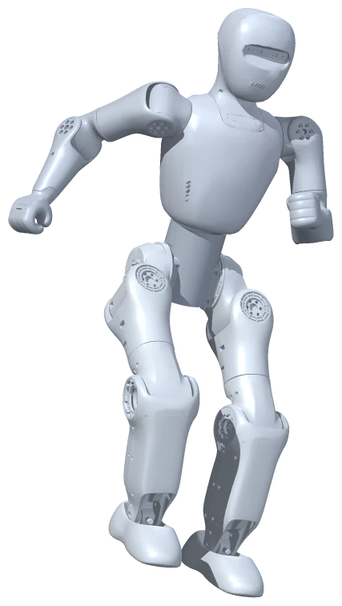
单元六 像研究者一样验证 · 基线：小学 5–6 年级，40 分钟 · 学生学习单 · 课堂入口：小布米单例世界
本课一览
| 项目 | 内容 |
|---|---|
| 核心问题 | 视频里的动作，能证明机器人有哪些能力？ |
| 学生成果 | 网页复查记录（任务 A）、能力证据表（B）、改写的说法（C）、视频能力说明书（D） |
| 关键词 | 直接观察、资料说明、尚未验证、能力说法、证据边界 |
| 本课操作 | 动作回放“跳跃”；整机配色“红白”与恢复默认；行走 5 秒 |
| 准备 | 学习单（含资料卡）；如有条件，课前录一段 30 秒屏幕视频（前半行走、后半跳跃回放）用于导入，不录学生 |
学习目标与证据
| 学生能够 | 对应任务 | 看什么 |
|---|---|---|
| 区分直接观察、资料说明和尚未验证 | B | 证据类型与证据内容对应 |
| 用网页复查一个说法 | A | 两次复查有记录，结论谨慎 |
| 对能力说法作出可以说、要改、不能说的判断 | B、C | 8 条中至少 6 条判断合理，改写准确 |
| 写出包含“展示了什么、怎样产生、还不能证明什么”的说明 | D | 三句话齐全且准确 |
课前预演（约 6 分钟）
- 归零站立、暂停仿真；回放“跳跃”（约 04:04.4）1× 播放 12 秒。按片段数据，约第 7 秒起有连续小跳；以实际画面为准。停止回放并归位。
- 配色“整机方案”选“红白”，回仿真控制完成一次 5 秒行走；看不出和原色时的差别是正常的。恢复默认配色。
- 若课前录了视频：用系统录屏或手机拍屏幕，只拍网页画面，不拍学生。
配图怎样用
两张图供原任务环节内指认、口述或填写，不另加课时。
| 图 | 展示时机 | 可以追问 |
|---|---|---|
| 三层证据图 | 4–9 分钟讲证据时指图，仍按原流程读资料卡 | “左栏能看见什么？中栏多提供了什么？哪种能力还没有证据？” |
| 补证据提问卡 | 任务 C 改写前，选一条分歧大的说法，口述或填写 | “要把这句话说得更准确，还要知道哪个状态、来源或测试结果？” |
提醒：图中的 Bumi 是依据原型美化的教学插画，不是跳跃实跑证据；“尚未验证”也不等于已经证明不可能。
课堂流程（40 分钟）
| 时间 | 环节 | 教师做什么 | 学生做什么 |
|---|---|---|---|
| 0–4 | 想一想 | 运动鞋广告；如有视频，播放并请学生说“它会什么” | 判断、写需要的证据 |
| 4–9 | 三种证据 | 讲解三种证据，带学生读资料卡 | 阅读、举例 |
| 9–17 | 任务 A | 巡视两次复查；提醒复查 2 只是“看不出差别”也是结果 | 复查、记录 |
| 17–28 | 任务 B | 小组讨论；全班核对第 3、5、7 条 | 填证据表 |
| 28–33 | 任务 C | 请两组读改写 | 改写 |
| 33–38 | 任务 D | 请 2–3 名学生朗读说明书，全班评“准不准” | 写说明书 |
| 38–40 | 三问 | 总结“可以说、要改、不能说” | 三问、自检 |
- 35 分钟：任务 A 只做复查 1；任务 B 只做 1、3、5、6、7 条。
- 45 分钟：任务 B 后加“设计验证”：为第 5 条或第 6 条写出要证明它成立，还需要做什么测试。
关键讲解（可以这样说）
- “视频能让我们看到动作，但不一定能告诉我们动作是怎么产生的。同样的跳跃画面，可能是控制出来的，也可能是播放已有数据。”
- “资料也是证据，但要说清是哪份资料、说了什么。”
- “‘尚未验证’不等于‘错了’，只是现在没有足够的证据，可以想想要做什么测试。”
- “颜色和大小改变，和能力没有证据上的联系，资料也说明它们只改外观。”
参考回答
想一想：不能；要比较同一个人穿与不穿这双鞋，在相同条件下跑同样的距离，重复多次。
任务 A：复查 1：看到小布米连续小跳，状态“正在回放”。复查 2：差不多或看不出来。
任务 B（判断参考，允许有依据的不同表述）：
| 说法 | 证据 | 类型 | 判断 |
|---|---|---|---|
| 1 按指令前进 | 第 3、5 课点前进后它走了 | 看到（+资料） | 可以说 |
| 2 走路用了 AI 模型 | 资料卡第 1 条 | 资料 | 可以说（说明“已训练好的模型”） |
| 3 会跳舞 | 看到舞蹈回放；资料卡第 2、3 条 | 看到 + 资料 | 要改说法：“能回放已有的舞蹈动作” |
| 4 会跳跃 | 看到跳跃回放；资料卡第 2 条 | 看到 + 资料 | 要改说法：“能回放跳跃动作数据，没有计算真实跳跃的平衡” |
| 5 摔倒能自己爬起 | 看到的是回放；资料卡第 2 条 | 还没有（支持该能力的证据） | 不能说（或要改说法） |
| 6 自己躲障碍 | 没有观察到；资料卡第 6 条 | 资料（说明没有该功能） | 不能说 |
| 7 换色更聪明 | 复查 2 看不出差别；资料卡第 5 条 | 看到 + 资料 | 不能说 |
| 8 放大力气更大 | 资料卡第 4 条 | 资料 | 不能说 |
任务 C：例如“小布米会跳舞”→“小布米能回放一段由真人动作换算来的舞蹈”；“小布米会跳跃”→“视频播放了跳跃动作数据，不能说明它真的能跳起来并站稳”。
任务 D：
- 小布米按人的指令向前走，然后播放了一段跳跃动作。
- 行走由已经训练好的行走模型根据人的指令和身体状态产生；跳跃是回放已有的动作数据，不计算物理平衡。
- 不能证明它能真的跳起来并落稳、能自己决定动作，或真实机器人能做到同样的事。
三问：1. 回放已有的跳跃动作数据；2. 状态显示“正在回放”、回放分栏说明、资料卡；3. 不能证明真实的跳跃和平衡能力。
常见误解与回应
| 学生可能说 | 可以这样回应 |
|---|---|
| “我亲眼看到它跳了，所以它会跳” | 你看到了跳跃的画面。这个画面是怎样产生的？看状态和说明 |
| “资料说的就一定对” | 资料要看来源。我们的资料来自项目说明，也和网页里看到的现象一致 |
| “尚未验证就是假的” | 是“现在还不能说”，以后有了测试才能判断 |
| “说‘它会跳舞’没关系，大家都懂” | 别人可能以为它自己学会了跳舞。准确的说法能避免误会 |
网页打不开时
任务 A 改为阅读资料卡和教师描述，标注“未复查 Web”；任务 B 的证据类型只能选“资料”或“还没有”，这正好可以讨论“没有亲眼看到时，判断要更谨慎”。
本课评价
| 看什么 | 达到 | 需要支持 |
|---|---|---|
| 证据分类（B） | 类型与证据内容一致 | 把“看到画面”直接当作“有能力” |
| 判断与改写（B、C） | 8 条中 6 条以上合理，改写准确 | 只判断对错，不会改写 |
| 能力说明书（D） | 三句话齐全且准确 | 只写“它很厉害” |
学段调整
- 1–2 年级：只判断 3 条说法（会走、会自己躲开东西、换颜色更聪明），用“我看到了 / 我不知道”两张牌。
- 3–4 年级：证据表只做 1、3、5、7 条，不写证据内容，只勾类型。
- 初中：为第 4、5 条写出验证方案（需要什么控制器、测什么、怎样判断成功）。
- 高中：选一段公开的机器人宣传视频（教师预先筛选），用同样的表格分析其中的说法，讨论科技传播中的“演示”与“能力”的区别。
课后记录
| 记录项 | 本次情况 |
|---|---|
| 判断分歧最大的说法 | |
| 每个环节实际用时 | |
| 学生写得最好的一句说明 | |
| 下次要改的一处 |
今天的问题
有人拍了一段小布米的视频，说它“会跳舞、会跳跃、摔倒能自己爬起来”。这些说法哪些有证据，哪些还没有？
一、想一想：广告里的运动鞋
广告说：“穿上这双鞋，你会跑得更快！”画面里一个人飞快地跑过。
只看这段广告，能证明鞋让人跑得更快吗？
还需要什么证据？
二、三种证据
| 证据类型 | 意思 | 例子 |
|---|---|---|
| 直接观察到 | 我们自己在网页里看到、量到的 | 点“前进 0.5”后，它往前走了 |
| 资料说明 | 老师给的资料、面板上的说明文字告诉我们的 | 回放分栏写着“不计算物理平衡” |
| 尚未验证 | 现在还没有证据支持，或者证据不够 | “它能认出我” |
1 直接观察
我具体看到了什么？
动作、状态、时间……
2 资料说明
轨迹回放
不计算物理平衡资料名称
说明位置
资料告诉我怎样产生？
把来源一起说出来。
3 尚未验证
还不能证明哪种能力？
需要什么测试或资料？
资料卡（来自课程资料）
- 小布米走路时用的是已经训练好的行走模型，课堂上不训练。
- “动作回放”是轨迹回放，不计算物理平衡；回放时行走模型和物理仿真暂停。
- 回放的动作数据来自真人动作，换算到小布米身上。
- “显示比例”只改变画面里的大小，不改变物理计算用的身体。
- “配色”只改变外观。
- 这个网页世界里，小布米没有使用摄像头或麦克风，也没有识别障碍物的功能。
三、任务
A任务在网页里复查两条
复查 1：跳跃。“仿真控制”先“归零站立”“暂停仿真”。在“动作回放”选“跳跃”、1×，播放约 12 秒，然后“停止回放并归位”。
我看到： 播放时“仿真控制”的状态是：
复查 2：换色前后走路。在“配色”分栏把“整机方案”换成“红白”。回“仿真控制”：“恢复仿真”→ 等“站立中”→“前进 0.5”走 5 秒 →“归零站立”→“暂停仿真”。
换色后走路，和以前看到的比：
最后在“配色”点“恢复默认配色”。
B任务能力证据表
| 说法 | 我的证据（写清看到什么或资料第几条） | 证据类型 | 我的判断 |
|---|---|---|---|
| 1. 小布米能按指令往前走 | |||
| 2. 小布米走路用了人工智能模型 | |||
| 3. 小布米会跳舞 | |||
| 4. 小布米会跳跃 | |||
| 5. 小布米摔倒后能自己爬起来 | |||
| 6. 小布米能自己躲开障碍物 | |||
| 7. 换成红白配色后，小布米更聪明 | |||
| 8. 放大到 2 倍后，小布米力气更大 |
（证据类型可以多选。）
C任务把说法改准确
从上表中选两条“要改说法”的，改成准确的话：
| 原来的说法 | 改成 |
|---|---|
我们要检查的说法
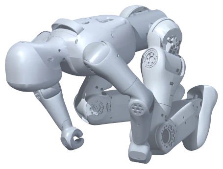
只是教学插画“它能”
A 画面与状态
我在哪个分栏操作？
状态文字是什么？
B 原因与来源
动作由模型还是数据产生？
哪条资料支持这个判断？
C 缺少的证据
这个说法还要测什么？
什么结果才支持它？
D 准确的说法
现在可以怎样介绍？
还不能证明什么？
D任务给视频写“能力说明书”
假设有一段 30 秒的视频：前 15 秒小布米按指令向前走，后 15 秒播放“跳跃”。请帮视频写三句说明：
- 视频里展示了：
- 这些动作是这样产生的：
- 这段视频还不能证明：
四、观察员三问
- 视频后半段的跳跃，是由什么产生的？
- 我的依据是：
- 这段视频不能证明
五、自我检查
| 今天我能 | 自己做到 | 有人帮忙做到 | 还想再练 |
|---|---|---|---|
| 分清三种证据 | |||
| 在网页里复查说法 | |||
| 用证据判断 8 条说法 | |||
| 写出准确的能力说明书 |
机器人可以帮助谁？
单元七 从人的需要出发 · 基线：小学 5–6 年级，40 分钟 · 学生学习单 · 课堂入口：小布米单例世界
本课一览
| 项目 | 内容 |
|---|---|
| 核心问题 | 用小布米现有的本领，能为谁做点什么？哪些仍由人完成？ |
| 学生成果 | 需求描述（任务 A）、需求与功能对应表（B）、关键步骤试验（C）、带三种标签的场景图（D） |
| 关键词 | 用户需求、功能对应、人机分工、可访问性、如实标注 |
| 本课操作 | 由各组自选：行走、慢速回放等 |
| 准备 | 四张需求卡（可打印学习单中的描述）；学习单 |
学习目标与证据
| 学生能够 | 对应任务 | 看什么 |
|---|---|---|
| 从具体的人出发描述需要与担心 | A | 写出一个具体需要和一个担心 |
| 把需要与现有功能对应，写出人工步骤 | B | 对应合理，人工步骤具体 |
| 用网页试验检验设计中的关键一步 | C | 有试验记录和修改想法 |
| 用三种标签如实区分现在、人工和将来 | D | 标签与实际能力一致，没有把设想写成现有功能 |
课前预演（约 5 分钟）
确认行走、慢速回放（0.25× 舞蹈）都能正常操作。为需求卡 ② 预先找一个舞蹈中动作明显的时段（可沿用第 7 课的 49–50 秒）。
配图怎样用
两张图示与课堂插画供原环节内指认、口述或填写，不另加课时。
| 图 | 展示时机 | 可以追问 |
|---|---|---|
| 合作观察插画 | 导入时先看人的活动，再进入需求卡 | “哪些工作由人在做？面对不同参观者，还需要怎样帮助他们参与？” |
| 四张需求情境 | 任务 A 发需求卡时，先请学生指认人的需要 | “同样用一个网页，这四个人最在意的事情一样吗？” |
| 三种设计标签 | 任务 C 实试之后、任务 D 画图之前，把一件事拆成步骤 | “哪一步刚在网页试过？哪一步由人做？哪一步还要新增功能？” |
合作插画为依据原型美化的虚构教学插画，非网页截图或真实课堂照片；同学的手势是人与人沟通，不表示机器人能听懂口令。情境中小布米只出现在电脑屏幕里，不表示真机已实现陪伴、教学辅助或无障碍服务。支持学生提出参与方式，把尚需改进的界面或帮助明确写出来。
课堂流程（40 分钟）
| 时间 | 环节 | 教师做什么 | 学生做什么 |
|---|---|---|---|
| 0–4 | 想一想 | 问“科技节上，来的人真正需要什么？” | 写一种人和需要 |
| 4–8 | 回顾 | 带学生读“小布米现在会什么”表 | 阅读 |
| 8–14 | 任务 A | 发需求卡；提醒“先想人，再想机器人” | 选卡、写需要与担心 |
| 14–22 | 任务 B | 巡视，追问“这一步是人做还是小布米做？” | 填对应表 |
| 22–28 | 任务 C | 控制每组试验时间；提醒收尾 | 网页试验 |
| 28–36 | 任务 D | 请一组展示场景图，全班检查标签是否如实 | 画图、贴标签 |
| 36–40 | 三问 | 总结“为人设计，如实说明” | 三问、自检 |
- 35 分钟：任务 C 改为教师根据各组需求挑两组投影演示。
- 45 分钟：任务 D 后加“交换评审”：两组互看场景图，各给一个“标签不准确”的提醒。
关键讲解（可以这样说）
- “好的设计先问：这是给谁的？他需要什么？他担心什么？”
- “小布米的本领有限没关系。把有限的本领用在对的人身上，并说清楚哪些是人在做，就是诚实的设计。”
- “将来要新增的东西可以大胆想，但要贴上‘将来需要新增’的标签，不能说成现在就会。”
- 对需求卡 ③：“让每个人都能参与，也是设计的一部分。想想：只用鼠标能不能操作？按钮字够不够大？同伴可以怎样帮忙而不是代替？”
参考回答
各组答案以合理为准，以下为示例：
需求卡 ① 一年级新生
- 需要：用有趣、不吓人的方式认识机器人；担心：机器人会不会突然冲过来。
- 对应：慢速行走展示、舞蹈回放；由人完成：操作、讲解、控制距离、何时停止；将来：能识别小朋友并保持距离（需要传感器和新程序）。
需求卡 ② 体育老师
- 需要：看清动作分解；担心：太快看不清。
- 对应：舞蹈回放 + 0.25× 慢放 + 暂停回放；由人完成：选时段、暂停、讲解动作要点；将来：任意跳到某个时刻、显示关节角度的曲线（当前没有）。
需求卡 ③ 坐轮椅的同学
- 需要：亲自操作；担心：够不着、操作太难。
- 对应：网页鼠标操作；由人完成：调整电脑位置、同伴读出状态文字；将来：更大的按钮、语音或键盘快捷操作（当前未提供）。
需求卡 ④ 家长
- 需要：知道机器人是怎么动的；担心：被夸大的说法误导。
- 对应：先行走再回放的对比演示；由人完成：用“观察员三问”讲解；将来：无需新增，重点是如实说明。
任务 D 标签检查要点：“自己认路”“认出小朋友”“听懂说话”“自动停下”都只能贴【将来需要新增】。
三问：1. 行走模型（加人的指令）或已有动作数据的回放；2. 任务 C 的网页试验；3. 不能证明它能自己感知人、自己决定做什么。
常见误解与回应
| 学生可能说 | 可以这样回应 |
|---|---|
| “小布米可以当导游带大家参观” | 现在它能做哪一部分？谁决定往哪走？把“自己认路”贴上将来需要新增 |
| “先想机器人能做什么，再找用的人” | 试试反过来：先想人需要什么，结果常常更有用 |
| “人工完成的步骤太多，这个设计不好” | 如实标出人工步骤正是本课要求。很多真实机器人演示背后也有人在操作 |
| “坐轮椅的同学让别人帮着点就行” | 想想怎样让他自己参与，同伴是帮忙而不是代替 |
网页打不开时
任务 C 改为“纸上走一遍”：按设计写出点击顺序，由教师根据前几课的经验判断能否实现，学生标注“未在 Web 验证”。
本课评价
| 看什么 | 达到 | 需要支持 |
|---|---|---|
| 需求分析（A） | 具体到一个人、一个需要、一个担心 | 只写“大家都喜欢” |
| 功能对应（B） | 现有功能与人工步骤写得清楚 | 把将来功能写进现有功能 |
| 如实标注（D） | 三种标签使用准确 | 标签缺失或与能力不符 |
| 合作与包容 | 讨论中考虑到不同的人 | 只按自己的喜好设计 |
学段调整
- 1–2 年级：全班选需求卡 ①，画“小布米给新同学表演”的图，老师帮忙贴标签，学生口述。
- 3–4 年级：对应表只填一行；标签用贴纸。
- 初中：为设计写一份“风险与安全”说明（如在真实场地展示真机需要注意什么）。
- 高中：用“用户画像—需求—功能—评估指标”的格式写一页设计说明，提出一个可以测量设计是否有用的指标。
课后记录
| 记录项 | 本次情况 |
|---|---|
| 各组选择的需求卡 | |
| 标签错误最常见的类型 | |
| 每个环节实际用时 | |
| 下次要改的一处 |
今天的问题
小布米现在会的本领有限。用这些本领，能为身边的谁做点什么？哪些事还得由人来做？
看图聊一聊：这组同学可能需要什么帮助？哪些事由同学完成？小布米出现在什么地方？
一、想一想：先想人，再想机器人
学校要办科技节。除了“机器人很酷”，来参观的人真正需要什么？
我想到的一种人： 他/她可能需要：
二、回顾：小布米现在会什么
| 本领 | 怎么做到的 | 需要人做什么 |
|---|---|---|
| 前进、后退、转向、停下站好 | 已经训练好的行走模型 | 人点按钮给方向、人判断何时停 |
| 播放舞蹈、跳跃、倒地与起身、格斗 | 回放已有动作数据 | 人选片段、选速度、开始和停止 |
| 慢放和快放 | 回放倍率 0.25×–2× | 人选择速度 |
| 换视角、放大、换颜色 | 显示设置 | 人选择 |
三、任务
A任务选一张需求卡
老师会给每组一张需求卡（也可以自己提出）：
- ① 一年级新生：第一次来科技节，有点怕机器人。
- ② 体育老师：想让同学看清一段舞蹈动作是怎么分解的。
- ③ 坐轮椅的同学：想亲自参与操作小布米。
- ④ 来开放日的家长：想知道“机器人是不是自己会想”。
1 一年级新生
“我有点害怕，先慢慢看。”需要：安心、看懂可用哪个现有功能？还需要人做什么？
2 体育老师
“让大家看清动作怎样衔接。”需要：分解、观察可用哪个现有功能？还需要人做什么？
3 坐轮椅的同学
“我也想亲自操作一下。”需要：能参与、便于操作可用哪个现有功能？还需要人做什么？
4 来开放日的家长
“它是自己想出来的吗？”需要：听懂依据与边界可用哪个现有功能？还需要人做什么？
我们选的是：号 他/她是谁：
他/她需要：
他/她可能担心：
B任务需求与功能对应表
| 他/她的一个需要 | 小布米现有的哪个功能能帮上 | 哪些步骤还得由人完成 | 将来要新增什么才能更好 |
|---|---|---|---|
小心：不要把“将来要新增”的写到“现有功能”里。
C任务在网页里试一下关键步骤
选你们设计中最关键的一步，在网页里试一次（1–2 分钟）。
我们试的是：
结果：
需要改的地方：
收尾：行走后“归零站立”→“暂停仿真”；回放后“停止回放并归位”。
D任务画出场景，贴上标签
我们要帮助的人：
他／她的需要：
场景里的一件事：
现在已演示
网页中实际试过的
功能或步骤
依据：
由人完成
人观察、判断、点击、
讲解或帮助参与
谁来做：
将来需要新增
现在没有的能力
不能冒充已经实现
还缺：
在下面画出小布米帮助这个人的场景，并在图中每个关键动作旁边写上标签：
【现在已演示】 【由人完成】 【将来需要新增】
一句话介绍我们的设计：
四、观察员三问
- 在我们的设计里，小布米的动作由什么产生？
- 我们判断“现在能做到”的依据是：
- 我们的设计还不能证明小布米能
五、自我检查
| 今天我能 | 自己做到 | 有人帮忙做到 | 还想再练 |
|---|---|---|---|
| 从一个人的需要出发想设计 | |||
| 把需要和现有功能对应起来 | |||
| 写清哪些步骤由人完成 | |||
| 用三种标签区分现在、人工和将来 |
动作数据从哪里来，展示时怎样说明？
单元七 从人的需要出发 · 基线：小学 5–6 年级，40 分钟 · 学生学习单 · 课堂入口：小布米单例世界
本课一览
| 项目 | 内容 |
|---|---|
| 核心问题 | 动作数据经过了哪些人的工作？展示时怎样如实说明来源？ |
| 学生成果 | 片段清单（任务 A）、数据旅程表（B）、来源卡（C）、隐私讨论与展示说明（D） |
| 关键词 | 动作捕捉、动作重定向、署名、许可、隐私、已有素材与个人设计 |
| 本课操作 | 只查看“动作片段”下拉列表，可选播放一小段 |
| 准备 | 学习单；数据旅程图 data-journey.svg；如有条件，准备一张动作捕捉的公开介绍图片 |
学习目标与证据
| 学生能够 | 对应任务 | 看什么 |
|---|---|---|
| 说出动作数据从真人到小布米经过的步骤与参与者 | B | 五步对应的参与者正确 |
| 解释“动作重定向”及其限制 | B | 能说出人有而小布米没有的关节会丢失 |
| 填写完整来源卡，分清两层许可 | C | 原始与重定向数据的许可都写出 |
| 区分已有素材、个人设计和未来设想，写出如实的展示说明 | D | 分类正确，说明含来源与“回放” |
课前预演（约 3 分钟）
打开“动作回放”分栏的“动作片段”下拉框，确认显示：舞蹈 · 02:11.5、跳跃 · 04:04.4、倒地与起身 · 01:42.2、格斗 · 04:04.9（以实际显示为准）。
资料卡（教师掌握）
依据回放来源说明与动作回放技术总结：
| 层 | 内容 | 许可（以原始页面为准） |
|---|---|---|
| 原始人体数据 | LAFAN1，Ubisoft La Forge 公开的人体动作捕捉数据集 | 官方许可标注 CC BY-NC-ND 4.0（署名、非商业、禁止演绎）。许可原文 |
| 重定向数据 | Cryyzz/Lafan1_Retarget_To_BUMI-GMR，作者 Cryyzz 用 GMR 方法重定向到 Bumi | 数据集标注 CC BY-NC 4.0（署名、非商业） |
| 本项目 | 下载固定版本，转换为每秒 30 帧、每帧 21 个关节角和身体位置姿态的 JSON；没有重新采集、重定向或训练 | 见回放来源说明 |
- 片段文件名中的
subject1、subject2是演员编号，数据中不含演员姓名。 - 重定向数据的源手臂与当前模型存在几何差异，回放只用于观察动作效果，不保证落脚、站稳或真机安全。
- 两层许可要分别核对，下游数据卡的许可不能替代原始数据的授权。课堂学习时说明来源；收费课程、公开传播或再分发前，由课程负责人确认对应用途的完整授权。教学用途本身不等于已经获得授权。
配图怎样用
两张图供原任务环节内指认、口述或填写，不另加课时。
| 图 | 展示时机 | 可以追问 |
|---|---|---|
| 人体与 Bumi 结构比较 | 任务 B 读完来源旅程后，联系第 1 课的身体观察 | “人的手腕、手指动作，为什么不能一项不改地搬给 Bumi？” |
| 可追溯来源卡 | 任务 C 填表前，沿五个来源点找对应信息 | “谁提供原始动作、谁做重定向、我们做了什么？两层许可写在哪里？” |
保留原有来源旅程图作为资料依据。结构图只帮助比较，精确身体核对仍用第 1 课模型图；来源卡的填写不代替授权确认。
课堂流程（40 分钟）
| 时间 | 环节 | 教师做什么 | 学生做什么 |
|---|---|---|---|
| 0–4 | 想一想 | “别人的画”情境 | 写问题与改法 |
| 4–8 | 任务 A | 请学生打开下拉框抄写，不播放 | 抄片段与时长 |
| 8–18 | 任务 B | 讲动作捕捉和重定向的故事，逐步读图 | 填旅程表、回答手腕问题 |
| 18–26 | 任务 C | 读资料卡中的许可，解释“署名”“非商业”“禁止演绎” | 填来源卡 |
| 26–36 | 任务 D | 组织隐私讨论；核对分类；请学生读展示说明 | 讨论、分类、写说明 |
| 36–40 | 三问 | 总结“谁做的、怎么用、怎样说” | 三问、自检 |
- 35 分钟：任务 A 由教师投影展示下拉框；任务 D 的分类全班口头完成。
- 45 分钟：任务 B 后加一段 0.25× 舞蹈慢放，请学生观察小布米的手：人跳舞时手腕和手指会动，小布米的手怎样？
关键讲解（可以这样说）
- “这段舞蹈，最早是一位真人演员跳的。他穿着有标记点的衣服，周围的相机记录下他每个关节在每一刻的位置。”
- “人和小布米身体不一样，研究者要把人的动作换算到小布米身上，这叫动作重定向。人有的关节小布米没有，这部分动作就会丢掉或变形。”
- “每一步都有人付出了劳动，也定下了使用条件。我们说清楚来源，是尊重他们的工作。”
- “‘署名’就是要写出是谁做的；‘非商业’就是不能拿来赚钱；‘禁止演绎’就是不能改了以后再发布。”
- “动作数据来自真人的身体，也和隐私有关。数据集只用编号，就是在保护演员。”
参考回答
想一想：把别人的作品说成自己的；应写“作者：某某画家，小华打印展示”。
任务 A：舞蹈约 2 分 11 秒、跳跃约 4 分 4 秒、倒地与起身约 1 分 42 秒、格斗约 4 分 5 秒（以实际显示为准）。不是。
任务 B：① 真人演员（Ubisoft La Forge 采集）；② Ubisoft La Forge；③ 研究者 Cryyzz；④ 本项目；⑤ 网页世界（Paracraft 小布米世界）。手腕手指：没有对应关节，这部分动作没法表现出来或被省略。
任务 C：原始动作来自 LAFAN1 真人动作捕捉数据（Ubisoft La Forge）；Cryyzz 用 GMR 方法重定向；本项目把数据转换成网页能读的格式；三项“没有做”都勾上；原始数据 CC BY-NC-ND 4.0，重定向数据 CC BY-NC 4.0；课堂学习可以用并说明来源；收费、公开发布、传播要先请负责老师确认。
任务 D：
- 隐私：五项都要考虑。
- 分类：已有素材 ⓐ ⓔ；我们的设计 ⓑ ⓒ；未来设想 ⓓ ⓕ。
- 展示说明示例：“这段舞蹈来自 LAFAN1 的真人动作捕捉，由 Cryyzz 换算到 Bumi 身上，我们只是在网页中回放它，回放时不计算平衡。”
三问：1. 真人演员的表演（再经过重定向和转换）；2. 回放来源说明与旅程图；3. 不能证明小布米自己会编舞或学会了跳舞，也不能证明真机器人能安全跳这段舞。
常见误解与回应
| 学生可能说 | 可以这样回应 |
|---|---|
| “网上能下载到，就能随便用” | 能下载不等于能随便用，要看许可写了什么 |
| “我们是学校上课，用什么都可以” | 课堂学习要说明来源；收费或公开发布要另外确认授权，“教学”两个字不能代替授权 |
| “小布米的舞蹈是本项目编的” | 本项目只做了格式转换，没有编舞、采集或重定向 |
| “演员不写名字，是因为不重要” | 不写名字是保护隐私；但数据集的作者和来源仍要写清楚 |
网页打不开时
任务 A 由教师提供片段清单（标注“教师提供”），其余任务不依赖网页。
本课评价
| 看什么 | 达到 | 需要支持 |
|---|---|---|
| 数据旅程（B） | 五步与参与者对应正确 | 只写“网上来的” |
| 来源卡（C） | 两层来源和许可完整 | 只写一层或漏写许可 |
| 责任意识（D） | 隐私讨论有理由，展示说明如实 | 展示说明不提来源或说成自创 |
学段调整
- 1–2 年级：只讲“舞蹈是一位真人先跳的”，学说一句“这段舞是别人跳的，小布米在播放”。
- 3–4 年级：旅程表只填“谁做的”；来源卡只填前三行。
- 初中：了解动作捕捉的基本原理（标记点、多相机）；讨论重定向时为什么会丢失或改变动作。
- 高中：阅读两层许可的条文要点，讨论“禁止演绎”对重定向数据的影响，以及开源数据在教育与商业场景中的边界；不替学校作法律结论，交由负责人确认。
课后记录
| 记录项 | 本次情况 |
|---|---|
| 学生对“许可”最常见的疑问 | |
| 每个环节实际用时 | |
| 展示说明的典型写法 | |
| 下次要改的一处 |
今天的问题
小布米的舞蹈是谁跳的？我们展示它的时候，应该怎样说明来源？
一、想一想：别人的画
小华把网上一位画家的画打印出来，贴在展板上，写上“小华作品”。
这样做有什么问题？
应该怎样写？
二、任务
A任务看看有哪些动作
在“动作回放”分栏，打开“动作片段”下拉框，把四个片段和时长抄下来（不用播放）：
| 片段 | 时长 |
|---|---|
这些动作，是小布米自己编的吗？我猜：
B任务一段舞蹈的旅程
① 真人表演动作捕捉
演员穿上带标记的设备跳舞、跳跃、倒地再起身……
文件里只用“演员编号”，不写名字② 人体数据集LAFAN1
Ubisoft La Forge 公开的人体骨骼动作数据
③ 动作重定向人 → 小布米
研究者 Cryyzz 用 GMR 方法，把人的动作换算成 Bumi 的关节角度
④ 格式转换本项目
转成回放文件：每秒 30 帧，每帧 21 个关节角和身体位置
没有重新采集或训练⑤ 课堂回放小布米世界
“动作回放”分栏按时间取出姿态，摆到小布米身上
要一起说明的许可
② LAFAN1：CC BY-NC-ND 4.0（署名、非商业、禁止演绎）
③ 重定向数据：CC BY-NC 4.0（署名、非商业）
展示时可以这样说
“舞蹈来自 LAFAN1 真人动作，由 Cryyzz 重定向到 Bumi，这里只是回放。”
读图，填表：
| 步骤 | 做了什么 | 是谁做的 |
|---|---|---|
| ① | 真人穿上设备表演动作 | |
| ② | 把人体动作做成公开的数据集 LAFAN1 | |
| ③ | 把人的动作“换算”成小布米的关节角度 | |
| ④ | 转换成小布米世界能读的文件 | |
| ⑤ | 在网页里按时间回放 |
“动作重定向”就是把一个身体的动作，换算到另一个身体上。人和小布米的身高、手臂长短、关节数量都不一样，所以不能直接照搬。
人的身体
有各自的活动。
人的关节和比例，与 Bumi 不同。
Bumi 原型
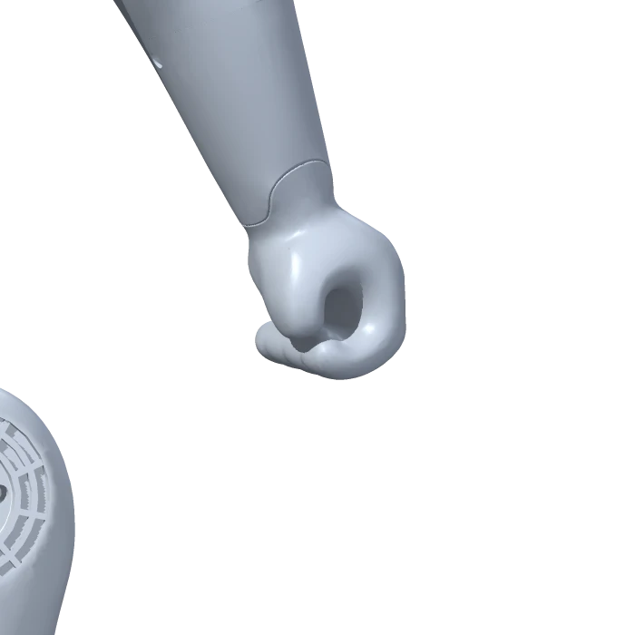
环形手端没有独立腕、手指关节。资料：腰 1＋双臂各 4＋双腿各 6＝21；不包括独立头颈、腕或手指关节。
想一想：人的手腕、手指能动，小布米没有这些关节（第 1 课学过）。换算时，人手腕和手指的动作会怎样？
C任务做一张来源卡
动作名称
原始数据与作者／机构
重定向数据与作者
本项目所做的处理
来源链接／说明文件：
原始数据许可：
重定向数据许可：
我们的讲解／顺序设计：
| 来源卡 | 我们填写 |
|---|---|
| 动作名称 | 舞蹈 |
| 原始动作来自 | |
| 谁把动作换算到 Bumi 身上 | |
| 本项目做了什么 | |
| 本项目没有做什么 | |
| 使用条件（许可） | 原始数据： 重定向数据： |
| 课堂学习可以用吗 | |
| 收费、公开发布、给别人传播 |
D任务隐私小讨论 + 展示说明
讨论：数据文件里，演员只用“1 号”“2 号”这样的编号，没有写名字。
如果我们想录班上同学跳舞，做成小布米的动作，要先想清楚（勾选）：
分一分：把下面的东西写到对应的格子里（写编号）：
ⓐ 舞蹈动作数据 ⓑ 我们编排的演示顺序 ⓒ 我们写的讲解词 ⓓ “让小布米学会我们班的课间操” ⓔ 行走模型 ⓕ “让小布米自己编舞”
| 已有素材（别人做的） | 我们的设计 | 未来设想（现在做不到） |
|---|---|---|
写一句展示说明：展示舞蹈回放时，我们会这样告诉观众：
三、观察员三问
- 小布米的舞蹈动作，最早是由什么产生的？
- 我的依据是：
- 播放这段舞蹈，不能证明
四、自我检查
| 今天我能 | 自己做到 | 有人帮忙做到 | 还想再练 |
|---|---|---|---|
| 说出舞蹈数据经过了哪几步、谁做的 | |||
| 填好一张来源卡 | |||
| 说出使用别人动作数据时要注意的事 | |||
| 写出一句如实的展示说明 |
设计一场可信的小布米演示
单元八 作品与分享 · 基线：小学 5–6 年级，40 分钟 · 学生学习单 · 课堂入口：小布米单例世界
本课一览
| 项目 | 内容 |
|---|---|
| 核心问题 | 怎样设计一场有趣、可复现、不误导的演示？ |
| 学生成果 | 分工表（任务 A）、演示脚本（B）、同伴反馈（C）、修改记录与能力说明卡（D） |
| 关键词 | 演示脚本、可复现、如实说明、同伴反馈、迭代 |
| 本课操作 | 行走、归零、暂停、回放、停止归位的完整流程 |
| 准备 | 学习单；计时工具；能力说明卡可打印成 A5 卡片 |
学习目标与证据
| 学生能够 | 对应任务 | 看什么 |
|---|---|---|
| 在小组中承担明确角色 | A | 每人有任务，能说出自己何时上场 |
| 写出包含主线流程和三句关键说明的脚本 | B | 六段齐全，按钮与状态对应，三句说明准确 |
| 按检查表给出具体反馈 | C | “两颗星一个愿望”具体可操作 |
| 根据反馈修改，并写出如实的能力说明卡 | D | 有修改记录，卡片无夸大 |
课前预演（约 5 分钟）
按学习单任务 B 的主线完整走一遍，计时约 2–3 分钟。确认回放片段选择：低年级观众建议舞蹈；跳跃、倒地与起身可用于讲“画面不等于能力”；格斗片段不建议用于展示。
配图怎样用
两张图供原任务环节内指认、口述或填写，不另加课时。
| 图 | 展示时机 | 可以追问 |
|---|---|---|
| 六格演示分镜 | 任务 B 写脚本时，从六格中逐格口述讲解与按钮；沿用原 2–3 分钟安排 | “每一格应出现什么状态？哪两处必须确认归零、暂停或归位？” |
| 协作角色轨道 | 任务 A 分工后标出每人的行动，任务 C 试运行时再核对 | “操作员点按钮时，谁看状态？谁向观众说明动作来源与边界？” |
角色轨道将主讲与说明画在一条线上，便于三人组兼任；四人组仍保留独立说明员。分镜中的空白由学生编排，不能把示意当成已经完成的操作记录。
课堂流程（40 分钟）
| 时间 | 环节 | 教师做什么 | 学生做什么 |
|---|---|---|---|
| 0–4 | 想一想 | 魔术与科学演示的对比 | 选择并说理由 |
| 4–9 | 任务 A | 说明四个角色；建议角色与上节课需求卡衔接 | 分工、确定观众 |
| 9–20 | 任务 B | 巡视，检查主线顺序和三句关键说明；提醒写备用办法 | 写脚本 |
| 20–30 | 任务 C | 两组配对，各试运行一次（各约 3 分钟）并互评 | 试运行、互评 |
| 30–36 | 任务 D | 提醒“改一处、写清改了什么” | 修改、写能力说明卡 |
| 36–40 | 三问与收尾 | 预告下节课展示顺序 | 三问、自检、收尾 |
- 35 分钟：任务 C 只由一组试运行，另一组下节课开始前试运行。
- 45 分钟：任务 C 后各组根据反馈再完整试运行一次，计时并记录。
关键讲解（可以这样说）
- “可信的演示，观众看完能说出‘它是怎么做到的’，而不是‘好神奇’。”
- “主线先行走、再停下、再回放、再归位，这样观众能直接对比两种方式；每步看状态，演示就能重复做。”
- “脚本里写好‘出问题怎么办’。真实的工程师做演示前也会准备备用方案。”
- “反馈要具体。‘很好’不算反馈，‘回放前忘了暂停’才是。”
参考回答
想一想：科学演示，因为要让观众明白动作怎么产生，不能故意让人误会。
任务 B 脚本示例（各组内容可不同）：
| 段落 | 讲什么 | 点什么 | 状态 |
|---|---|---|---|
| 1 开场 | “我们是第 X 组，给一年级同学介绍小布米怎么动起来。” | 无 | 已暂停 |
| 2 行走 | “我按前进，它用已经训练好的行走模型，一边算一边调整身体。” | 恢复仿真 → 前进 0.5 → 左转 → 前进 0.5 | 站立中 → 行走中 |
| 3 停下 | “现在让它停下站好，再暂停。” | 归零站立 → 暂停仿真 | 站立中 → 已暂停 |
| 4 回放 | “接下来播放一段舞蹈。这是真人跳的舞，换算到小布米身上，电脑按时间把姿势摆出来。” | 动作回放：舞蹈、1×（或 0.5×）、播放所选片段 | 动作加载中 → 正在回放 |
| 5 归位 | “播完我们让它回到原来的站姿。” | 停止回放并归位 | 回放已停止 |
| 6 说明 | “走路是模型控制的；跳舞是回放，不计算平衡；舞蹈来自 LAFAN1，由 Cryyzz 换算到 Bumi。这个演示不能证明它能自己跳舞，也不能证明真机器人能这样跳。” | 无 | 已暂停 |
三句话：1. 已经训练好的行走模型；2. 已有的真人动作数据（重定向到小布米）；3. 例如“它能自己学会跳舞”“它能看见我们”“真机器人也能这样跳”。
备用办法：加载慢时先讲开场和原理；按钮点不动时看状态找原因（例如还在回放）；网页打不开时用状态地图和示意图讲解，并告诉观众“这次没能现场演示”。
任务 D 能力说明卡：以学生填写为准，检查是否包含行走与回放的产生方式、人工步骤（点按钮、决定何时停、选片段）、来源、还不能证明的事。
三问：1. 行走由行走模型和人的指令产生，回放由已有动作数据产生；2. 讲解词和能力说明卡；3. 自主决策、真实平衡、自己学会新动作等。
常见误解与回应
| 学生可能说 | 可以这样回应 |
|---|---|
| “说‘还不能证明’会让演示不好看” | 观众知道真相以后，会更相信你们说的其他内容 |
| “直接从行走切到回放，更快” | 课堂约定先归零、暂停，让每次演示都从一样的状态开始，容易复现 |
| “我们用格斗片段，更刺激” | 展示要考虑观众。格斗片段不用于展示或模仿 |
| “一个人操作，其他人看着就行” | 每个角色都要上场，观众提问时每个人都可能被问到 |
网页打不开时
学生仍完成脚本、反馈和能力说明卡，试运行改为“纸上演练”：操作员说出要点的按钮，观察员说出应看到的状态。记录“未在 Web 试运行”，下节课开始前补试。
本课评价
| 看什么 | 达到 | 需要支持 |
|---|---|---|
| 脚本（B） | 主线完整，按钮与状态对应，三句说明准确 | 缺少归零暂停或停止归位 |
| 反馈（C） | 具体、可操作 | 只写“很好” |
| 如实说明（D） | 能力说明卡完整且没有夸大 | 把回放写成“它会” |
| 合作 | 每人有任务 | 一人包办 |
学段调整
- 1–2 年级：教师提供只有三段的简化脚本（走一走、停下来、跳支舞），学生负责讲一句话或举提示牌。
- 3–4 年级：脚本只填“讲什么”和“点什么”两列，教师提供状态核对卡。
- 初中：在脚本中加入一个“现场小实验”（例如 0.5× 与 2× 对比），并准备观众可能问的两个问题和答案。
- 高中：写一份一页的“演示说明书”，包含系统模块、证据、来源与授权、局限，以及若改用真机演示需要的安全措施。
课后记录
| 记录项 | 本次情况 |
|---|---|
| 各组试运行用时 | |
| 最常见的反馈 | |
| 每个环节实际用时 | |
| 下次要改的一处 |
今天的问题
怎样设计一场 2–3 分钟的小布米演示，让观众既觉得有趣，又不被误导？
一、想一想：魔术表演和科学演示
魔术师让观众猜不透是怎么做到的；科学演示要让观众看明白是怎么做到的。
我们的小布米演示，应该更像哪一种？ 因为
二、任务
A任务分工
每个人都要有任务，演示后还要能回答观众的问题。
| 角色 | 负责做什么 | 谁 |
|---|---|---|
| 主讲 | 讲开场和结尾，介绍每一段在做什么 | |
| 操作员 | 按脚本点按钮，每步看状态 | |
| 观察员 | 盯着小布米和状态文字，出问题时提醒 | |
| 说明员 | 讲清楚动作怎么产生、数据来源和还不能证明的事 |
（3 人一组时，一人兼两个角色。）
来源与边界
看状态文字
发现异常提醒
演示要给谁看？（可以接第 13 课的需求卡）
B任务写演示脚本
演示必须包含这条主线：行走展示 → 归零站立、暂停仿真 → 动作回放 → 停止回放并归位 → 说明。
1 开场20 秒
主讲给谁看？展示什么？
讲／点／状态：
2 行走展示约 40 秒
方向、时长由我们安排
讲／点／状态：
3 停下来约 10 秒
0归零站立 → 暂停仿真
讲／点／状态：
4 动作回放约 40 秒
选片段与倍率，再播放
讲／点／状态：
5 归位约 10 秒
停止回放并归位
讲／点／状态：
6 说明与结尾约 30 秒
说明原因、来源、不能证明
讲／点／状态：
| 段落 | 大约时间 | 讲什么（要点） | 点什么按钮 | 应该看到的状态 |
|---|---|---|---|---|
| 1 开场 | 20 秒 | 我们是谁、给谁看、今天展示什么 | 无（演示前已加载并暂停） | 已暂停 |
| 2 行走展示 | 40 秒 | |||
| 3 停下来 | 10 秒 | 归零站立 → 暂停仿真 | ||
| 4 动作回放 | 40 秒 | |||
| 5 归位 | 10 秒 | 停止回放并归位 | ||
| 6 说明与结尾 | 30 秒 | 动作怎么产生、来源、还不能证明什么 | 无 |
讲解词里必须出现这三句话的意思：
- 行走时，是在根据人的指令和身体状态控制关节。
- 回放时，播放的是，不计算平衡。
- 这个演示还不能证明。
出问题怎么办？（例如加载很慢、按钮点不动）我们的备用办法：
C任务试运行和同伴反馈
和另一组互相看一次试运行。观看时用这张表给对方打勾：
| 检查项 | 是 | 还要改 |
|---|---|---|
| 操作顺序和脚本一致，每步状态正确 | ||
| 行走后先归零、暂停，再回放 | ||
| 回放结束点了“停止回放并归位” | ||
| 讲清楚行走和回放的区别 | ||
| 说明了动作数据的来源 | ||
| 说了“还不能证明什么” | ||
| 没有夸大（如“它自己会跳舞”“它能看见我们”） | ||
| 时间在 2–3 分钟 | ||
| 每个人都有任务 |
给对方的反馈：两颗星（做得好的两点）： 一个愿望（建议改的一点）：
D任务修改和能力说明卡
我们收到的建议： 我们改了：
再做一张贴在展台上的能力说明卡：
| 能力说明卡 | 我们的填写 |
|---|---|
| 演示中展示了 | |
| 【现在已演示】行走是怎样产生的 | |
| 【现在已演示】回放是怎样产生的 | |
| 【由人完成】的步骤 | |
| 动作数据来源 | |
| 这个演示还不能证明 |
三、观察员三问
- 我们演示里的每个动作，分别由什么产生？
- 我们怎么让观众知道依据？
- 我们的演示不能证明
四、自我检查
| 今天我能 | 自己做到 | 有人帮忙做到 | 还想再练 |
|---|---|---|---|
| 承担一个角色，知道自己什么时候做什么 | |||
| 和组员写出完整的演示脚本 | |||
| 给别组有用的反馈 | |||
| 根据反馈修改演示 |
收尾：确认已停止回放并归位，状态为“已暂停”。
小布米具身智能体验展
单元八 作品与分享 · 基线：小学 5–6 年级，40 分钟 · 学生学习单 · 课堂入口：小布米单例世界
本课一览
| 项目 | 内容 |
|---|---|
| 核心问题 | 我们能否让观众看明白小布米的动作由什么产生、依据是什么、还不能证明什么？ |
| 学生成果 | 演示记录（任务 A）、提问与互评（B）、答问记录（C）、个人反思（D） |
| 关键词 | 展示、答辩、互评、反思、个人贡献 |
| 本课操作 | 各组按第 15 课脚本现场演示 |
| 准备 | 展示顺序表、计时器、互评表；各组能力说明卡；可邀请其他班级或家长作观众 |
学习目标与证据
| 学生能够 | 对应任务 | 看什么 |
|---|---|---|
| 按脚本完成一次可复现的演示，出问题时合理处理 | A | 实际演示与记录 |
| 用观察员三问提出有用的问题，并给出具体互评 | B | 提问质量、互评具体 |
| 准确回答关于动作产生方式、证据和局限的提问 | C | 回答与课程概念一致 |
| 说明个人贡献和一学期的认识变化 | D | 反思具体，三问回答准确 |
课前准备（约 10 分钟）
- 课前预演一次完整主线，确认网页加载正常；如条件允许，准备第二台电脑作为备用。
- 排好展示顺序。40 分钟内建议 4 组上台，每组 3 分钟演示 + 1 分钟问答。超过 4 组时，选用以下方式之一：
- 展位轮换：多台电脑同时开，一半小组守展位演示，一半小组参观，15 分钟后交换（适合每组都有电脑）。
- 分两次课：第 15 课结束前或下一课补足剩余小组，并在课后记录中写明。
- 打印互评表和能力说明卡，展台贴卡。
配图怎样用
两张图示与课堂插画供原环节内指认、口述或填写，不另加课时。
| 图 | 展示时机 | 可以追问 |
|---|---|---|
| 合作观察插画 | 展前指图回顾操作、观察、记录分工 | “轮到你们展示时，谁操作，谁解释，谁记录观众的问题？” |
| 课堂展区示意 | 展前检查时指认演示、观众和证据说明的位置 | “只有一台投影时，怎样让每个人都有观察和提问的任务？” |
| 三问反馈与反思卡 | 任务 B 观看前先选一个问题；任务 D 再回看自己的理解变化 | “你给的星和愿望对上了什么实际证据？下一次具体改哪一步？” |
合作插画为依据原型美化的虚构教学插画，非网页截图或真实课堂照片；它展示人的分工，不表示机器人能听懂手势或口令。展区图是课堂组织示意，不是已举办活动的照片；图中 Bumi 均在网页屏幕内。没有上台演示或没有验证的部分如实标注，维持原 40 分钟轮换安排。
课堂流程（40 分钟，以 4 组上台为例）
| 时间 | 环节 | 教师做什么 | 学生做什么 |
|---|---|---|---|
| 0–4 | 展前检查 | 宣布顺序和规则（每组 3 分钟 + 1 分钟问答，观众每组至少一人提问） | 完成展前检查 |
| 4–20 | 展示与问答 | 计时；演示之间提醒下一组准备；必要时帮忙处理网页问题 | 演示、提问、填互评 |
| 20–26 | 整理互评 | 请每组读出收到的“两颗星一个愿望” | 填任务 A、C |
| 26–34 | 个人反思 | 提示“具体说出你做了什么” | 完成任务 D |
| 34–40 | 课程总结 | 带全班回顾观察员三问与两条执行路径；收集作品 | 分享一句话、自检 |
- 35 分钟：展示 3 组；课程总结缩短为 3 分钟。
- 45 分钟：展示 5 组，或 4 组后增加“观众投票：哪个讲解最让人明白”。
关键讲解（可以这样说）
- 开场：“今天大家既是演示者，也是观众。好观众会问‘这个动作是由什么产生的？你怎么知道？’”
- 处理故障：“演示出问题不扣分。我们看的是你们怎么判断问题、怎么如实告诉观众。”
- 总结：“一学期下来，我们知道小布米有两种动起来的方式：一种是已经训练好的模型根据身体状态在控制，一种是播放已有的动作数据。看到一段视频，先问三个问题，再下结论。”
参考回答
任务 A、C：以实际演示为准。答问参考：
- “这个动作由什么产生？”——行走：已经训练好的行走模型根据人的指令和身体状态控制关节；回放：已有的真人动作数据按时间回放。
- “怎么知道的？”——状态文字、回放分栏说明、行走时能半路改方向、回放时行走按钮不能用、资料。
- “还不能证明什么？”——它能自己决定做什么、能看见人、能真实地跳跃并站稳、真机器人能做到。
- “2× 能说明什么？”——只说明回放播放得更快，不说明真实运动能力。
- “动作是谁做的？”——LAFAN1 的真人演员表演，由 Cryyzz 重定向到 Bumi，本项目做格式转换。
任务 D 三问：1. 行走模型控制（行走仿真）和动作数据回放；2. 合理即可（如第 9 课按钮变灰、第 6 课三轮实验、第 11 课倍率数据）；3. 例如“机器人有自主能力”“机器人真的会做这些动作”“机器人比人聪明”。
常见情况与处理
| 情况 | 处理 |
|---|---|
| 加载很慢 | 先讲开场和原理，加载好再演示；记录实际用时 |
| 上一组没归位，下一组按钮点不动 | 观察员看状态，先“停止回放并归位”，回到已暂停 |
| 演示中说了夸大的话 | 问答环节用观察员三问追问，让小组当场修正，记在“一个愿望”里 |
| 有学生不愿上台 | 允许负责操作、举提示牌或在展位讲解，记录其实际贡献 |
| 网页完全打不开 | 改为用状态地图、示意图和能力说明卡讲解，在记录中写“未进行 Web 演示” |
本课评价
本课使用全课程四维量规（见课程总览第六节），结合本课表现：
| 维度 | 本课看什么 |
|---|---|
| 概念辨析 | 演示讲解和答问是否分清行走与回放、使用与训练 |
| 操作与观察 | 演示是否按脚本、每步核对状态、出问题能判断 |
| 证据与表达 | 能力说明卡和答问是否有依据、说明局限 |
| 合作与责任 | 每人是否有贡献，是否说明来源，提问与互评是否尊重他人 |
不以动作是否炫酷、电脑是否流畅评分。
学段调整
- 1–2 年级：举办“小布米身体与动作小导览”：学生指出三个身体部位，说一句“它在走路/它在播放已有的舞蹈”，教师协助操作。
- 3–4 年级：“小布米动作观察员”：展示播放、暂停、继续、停止，说明配色与能力无关。
- 初中：“机器人动作演示评测员”：各组互评时用能力证据表评价对方的一项说法。
- 高中：“可信的具身智能展示方案”：展示后提交研究报告，包括问题、证据、来源、仿真与真实的差异和适用范围。
课后记录
| 记录项 | 本次情况 |
|---|---|
| 实际上台组数与每组用时 | |
| 未上台小组的补展安排 | |
| 最常见的夸大说法 | |
| 学生反思中印象最深的一句 | |
| 整套课程下一轮最想改的地方 |
今天的问题
我们能不能让观众看明白：小布米的动作由什么产生？依据是什么？还不能证明什么？
指一指图里谁在操作、观察、记录。轮到我们演示时，谁向观众说明？谁记录观众的问题？
演示区：一个网页，一台小布米
投影 / 大屏“动作由什么产生？”操作员主讲证据说明区
行走：已有模型＋物理仿真
回放：已有数据＋时间
动作来源：
还不能证明：
观众区：提问、记录、反馈
一、展前 3 分钟检查
| 检查项 | 好了 |
|---|---|
| 网页已打开，小布米已加载，状态“已暂停” | |
| 动作回放的片段和速度已经想好 | |
| 演示脚本和能力说明卡在手边 | |
| 每个人知道自己什么时候上场 | |
| 想好了出问题时的备用办法 |
二、任务
A任务我们的演示
| 记录 | 填写 |
|---|---|
| 实际用时 | 分秒 |
| 进行得最顺利的一段 | |
| 出现的问题（没有就写“无”） | |
| 我们当时怎么处理的 |
B任务当一名好观众
看其他组演示时，用“观察员三问”向他们提一个问题。可以从这里选，也可以自己想：
- “这个动作是由什么产生的？”
- “你们怎么知道的？”
- “这个演示还不能证明什么？”
- “如果换成 2× 播放，能说明什么？”
- “这段动作是谁做出来的？”
1 动作从哪里来？
□ 已有行走模型
□ 已有动作数据
□ 还要再问
2 依据在哪里？
□ 状态与操作记录
□ 来源资料与说明
□ 还缺证据
3 还不能证明什么？
这次没验证的能力：
↓
给对方的反馈
☆ 两颗星：
◇ 一个愿望：
我的贡献： → 我的理解改变： → 下一次我会：
互评表（每组演示后填一行）：
| 组别 | 讲清行走和回放的区别 | 说明了来源 | 说了“还不能证明” | 操作顺利、能重复 | 两颗星一个愿望 |
|---|---|---|---|---|---|
| 第__组 | |||||
| 第__组 | |||||
| 第__组 |
C任务回答观众的提问
| 观众问了 | 我们怎么答的 | 答得准确吗？还能怎样答更好 |
|---|---|---|
D任务我的反思
我的贡献：在这次作品中，我负责了，我做得最好的是。
我学会了：一学期下来，我对“机器人为什么能动”的理解，从变成了。
最后一次观察员三问（关于整个课程）：
- 小布米的动作有两种产生方式，分别是和。
- 我最有力的一个证据是：
- 学完这门课，我知道仅凭一段机器人视频，不能证明
给明年的同学一句话：
三、自我检查
| 我能 | 自己做到 | 有人帮忙做到 | 还想再练 |
|---|---|---|---|
| 在演示中完成自己的角色 | |||
| 给其他组提一个有用的问题 | |||
| 准确回答观众的提问 | |||
| 说出自己一学期的变化 |
收尾：演示结束，确认“停止回放并归位”，状态为“已暂停”。